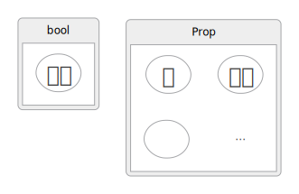
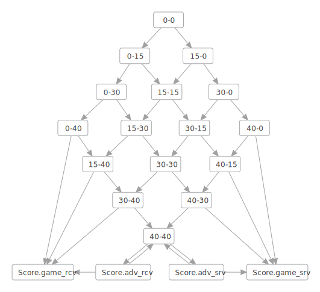
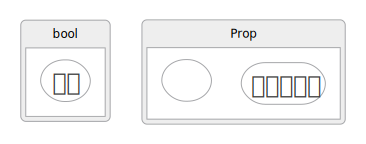

Anne Baanen
Alexander Bentkamp
Jasmin Blanchette
Johannes Hölzl
Jannis Limperg
The Hitchhiker’s Guide to Logical Verification
2022 Standard Edition
(October 25, 2022)
Preface
Formal proof assistants are software tools designed to help their users carry out computer-checked proofs in a logical calculus. We usually call them proof assistants, or interactive theorem provers, but a mischievous student coined the phase “proof-preventing beasts,” and dictation software occasionally misunderstands “theorem prover” as “fear improver.” Consider yourself warned.
Rigorous and Formal Proofs Interactive theorem proving has its own terminology, already starting with the notion of “proof.” A formal proof is a logical argument expressed in a logical formalism. In this context, “formal” means “logical” or “logic-based.” Logicians—the mathematicians of logics—carried out formal proofs on papers decades before the advent of computers, but nowadays formal proofs are almost always carried out using a proof assistant.
In contrast, an informal proof is what a mathematician would normally call a proof. These are often carried out in \(\LaTeX\) or on a blackboard, and are also called “pen-and-paper proofs.” The level of detail can vary a lot, and phrases such as “it is obvious that,” “clearly,” and “without loss of generality” move some of the proof burden onto the reader. A rigorous proof is a very detailed informal proof.
The main strength of proof assistants is that they help develop highly trustworthy, unambiguous proofs of mathematical statements, using a precise logic. They can be used to prove arbitrarily advanced results, and not only toy examples or logic puzzles. Formal proofs also help students understand what constitutes a valid definition or a valid proof. To quote Scott Aaronson:
I still remember having to grade hundreds of exams where the students started out by assuming what had to be proved, or filled page after page with gibberish in the hope that, somewhere in the mess, they might accidentally have said something correct.
When we develop a new theory, formal proofs can help us explore it. They are useful when we generalize, refactor, or otherwise modify an existing proof, in much the same way as a compiler helps us develop correct programs. They give a high level of trustworthiness that makes it easier for others to review the proof. In addition, formal proofs can form the basis of verified computational tools (e.g., verified computer algebra systems).
Success Stories There have been a number of success stories in mathematics and computer science. Three landmark results in the formalization of mathematics have been the proof of the four-color theorem by Gonthier et al., the proof of the odd-order theorem by Gonthier et al., and the proof of the Kepler conjecture by Hales et al.. The earliest work in this area was carried out by Nicolaas de Bruijn and his colleagues starting in the 1960s in a system called AUTOMATH.
Today, few mathematicians use proof assistants, but this is slowly changing. For example, 29 participants of the Lean Together 2019 meeting in Amsterdam, about formalization of mathematics, self-identified as mathematicians.
Most users of proof assistants today are computer scientists. A few companies, including AMD and Intel, have been using proof assistants to verify their designs. In academia, some of the milestones are the verifications of the operating system kernels seL4 and CertiKOS and the development of the verified compilers CompCert, JinjaThreads, and CakeML.
Proof Assistants There are dozens of proof assistants in development or use across the world. A list of the main ones follows, classified by logical foundations:
- set theory: Isabelle/ZF, Metamath, Mizar;
- simple type theory: HOL4, HOL Light, Isabelle/HOL;
- dependent type theory: Agda, Coq, Lean, Matita, PVS;
- Lisp-like first-order logic: ACL2.
For a history of proof assistants and interactive theorem proving, we refer to Harrison, Urban, and Wiedijk’s highly informative chapter.
Lean Lean is a new proof assistant developed primarily by Leonardo de Moura (Microsoft Research) since 2012. Its mathematical library, mathlib, was originally developed under the leadership of Jeremy Avigad (Carnegie Mellon University) but is now maintained and further extended by an active users’ community.
We will use Lean community version 4, mathlib4, and a few extensions collected in a small library called LoVelib. Although it is still a research project, with some rough edges, there are several reasons why Lean is a suitable vehicle to teach interactive theorem proving:
- It has a highly expressive, and highly interesting, logic based on the calculus of inductive constructions, a dependent type theory.
- It is extended with classical axioms and quotient types, making it convenient to verify mathematics.
- It includes a convenient metaprogramming framework, which can be used to program custom proof automation.
- It includes a modern user interface via a Visual Studio Code plugin.
- It has highly readable, fairly complete documentation.
- It is open source and cross-platform.
Lean’s core library includes only basic algebraic definitions. More setup and proof automation are found in mathlib. It is more than a mathematical library; it provides a lot of basic automation on top of Lean’s core library that one would expect from a modern proof assistant.
This Guide This guide is a companion to the MSc-level course Logical Verification (LoVe) taught at the Vrije Universiteit Amsterdam. Our primary aim is to teach interactive theorem proving. Lean is the vehicle, not an end of itself. As such, this guide is not designed to be a comprehensive Lean tutorial—for this, we recommend Theorem Proving in Lean. The guide is also no substitute for attending class or doing the exercises and homework. Theorem proving is not for spectators; it can only be learned by doing.
Specifically, our goal is that you
- learn fundamental theory and techniques in interactive theorem proving;
- learn how to use logic as a precise language for modeling systems and stating properties about them;
- familiarize yourselves with some areas in which proof assistants are successfully applied, such as functional programming, the semantics of imperative programming languages, and mathematics;
- develop some practical skills you can apply on a larger project (as a hobby, for an MSc or PhD, or in industry);
- reach a point where you feel ready to move to another proof assistant and apply what you have learned;
- get to understand the domain well enough to start reading relevant scientific papers published at international conferences such as Certified Programs and Proofs (CPP) and Interactive Theorem Proving (ITP) or in journals such as the Journal of Automated Reasoning (JAR).
Equipped with a good knowledge of Lean, you will find it easy to move to another proof assistant based on dependent type theory, such as Agda or Coq, or to a system based on simple type theory, such as HOL4 or Isabelle/HOL
We assume that you are familiar with typed functional programming, as embodied in the languages
Haskell, OCaml, and Standard ML. If you do not see that the term g (f a b) applies the (curried)
function f to two arguments a and b and passes the result to the function g, or that λ n => n + 1 is
the function that maps n to n + 1, we strongly recommend that you start by studying a tutorial, such
as the first chapters of the online tutorial Learn You a Haskell for Great Good!.
You can stop reading once you have reached the end of the section titled “Lambdas.”
An important characteristic of this guide, which it shares with Knuth’s \(\TeX\) book, is that it does not always tell the truth. To simplify the exposition, simple but false claims are made about Lean. Some of these statements are rectified in later chapters. Like Knuth, we feel that “this technique of deliberate lying will actually make it easier for you to learn the ideas. Once you understand a simple but false rule, it will not be hard to supplement that rule with its exceptions.”
The Lean files accompanying this guide can be found in the public repository.
The files’ naming scheme follows this guide’s chapters; thus, 06_monads_demo.
lean is the main file associated with Chapter 6 (“Monads”), which is demonstrated
in class, 06_monads_exercise_sheet.lean is the exercise sheet, and 06_monads_homework_sheet.lean
is the homework sheet.
We have a huge debt to the authors of Theorem Proving in Lean and Concrete Semantics: With Isabelle/HOL, who have taught us Lean and programming language semantics. Many of their ideas appear in this guide.
We thank Robert Lewis and Assia Mahboubi for their useful comments on this guide’s organization and focus. We thank Kiran Gopinathan and Ilya Sergey for sharing the anecdote reported in footnote 3 of Chapter 1 and letting us share it further. We thank Daniel Fabian for designing the first tablet-optimized version of this guide. Finally, we thank Chris Bailey, Kevin Buzzard, Wan Fokkink, Robert Lewis, Antonius Danny Reyes, Robert Schütz, Patrick Thomas, Huub Vromen, and Wijnand van Woerkom for reporting typos and some more serious errors they found in earlier editions of this guide. Should you find some mistakes in this text, please let us know.
Special Symbols In this guide, we assume that you will be using Visual Studio
Code and its Lean 4
extension to edit .lean
files. Visual Studio Code lets us enter Unicode symbols by entering backslash \ followed by an ASCII
identifier. For example, →, λ, or ∀ can be entered by typing \r, \la, or \all and pressing the tab key
or the space bar. We will freely use these notations. For reference, we provide a list of the main
non-ASCII symbols that are used in the guide and, for each, one of its ASCII representations. By
hovering over a symbol in Visual Studio Code while holding the control or command key pressed, you
will see the different ways in which it can be entered.
| symbol | abbreviation | symbol | abbreviation | symbol | abbreviation |
|---|---|---|---|---|---|
| ¬ | \not | ∧ | \and | ∨ | \or |
| → | \r | ← | \l | ↔ | \lr |
| ∃ | \ex | ∀ | \fo | ∑ | \S |
| ≤ | \<= | ≥ | \>= | ≠ | \neq |
| ≈ | \~~ | × | \x | ⊕ | \oplus |
| ◦ | \circ | ∅ | \em | ∪ | \union |
| ∩ | \intersect | ∈ | \in | ⇃ | \downleftharpoon |
| ◯ | \bigcirc | ↦ | \mapsto | ⇒ | \=> |
| ⟹ | \==> | \[[ | \]] | ||
| ℕ | \N | ℤ | \Z | ℚ | \Q |
| ℝ | \R | α | \a | β | \b |
| γ | \g | δ | \de | ε | \e |
| λ | \la | σ | \s | ₀ | \0 |
| ₁ | \1 | ₂ | \2 | ₃ | \3 |
| ₄ | \4 | ₅ | \5 | ₆ | \6 |
| ₇ | \7 | ₈ | \8 | ₉ | \9 |
Definitions and Statements
We start our journey by studying the basics of Lean, without carrying out any proofs yet. We review how to define new types and functions and how to state their expected properties as lemmas.
Lean’s logical foundation is a rich formalism called the calculus of inductive constructions, which supports dependent types. In this chapter, we restrict our attention to its simply (i.e., nondependently) typed fragment. It is inspired by the λ-calculus and resembles typed functional programming languages such as Haskell, OCaml, and Standard ML. Even if you have not been exposed to these languages, you will recognize many of the concepts from modern languages (e.g., Python, C++11, Java 8). In a first approximation:
Lean = functional programming + logid
If your background is in mathematics, you probably already know most of the key concepts underlying functional programming, sometimes under different names. For example, the Haskell program:
fib 0 = 0
fib 1 = 1
fib n = fib (n - 2) + fib (n - 1)
closely matches the mathematical definition:
\( fib(n) = \begin{cases} 0 & \text{if } n = 0 \\ 1 & \text{if } n = 1 \\ fib(n - 2) + fib(n - 1) & \text{if } n ≥ 2 \end{cases} \)
and which can be written in Lean as:
deffib :fib: Nat → NatNat →Nat: TypeNat |Nat: Type0 =>0: Nat0 |0: Nat1 =>1: Nat1 | (1: Natn+2) =>n: Natfibfib: Nat → Natn +n: Natfib (fib: Nat → Natn+n: Nat1)1: Natfibfib: Nat → Nat10 -- 5510: Nat
import Mathlib.Init.Data.Nat.Basic
import Mathlib.Init.Data.Int.Basic
Types and Terms
Simple type theory (also called higher-order logic) corresponds roughly to the simply typed λ-calculus extended with an equality operator (=). It is an abstract, extremely simplified version of a programming language with a function-calling mechanism that prefigures functional programming. It can also be viewed as a generalization of first-order logic (also called predicate logic).
Types
Types are either basic types such as ℤ, ℚ, and bool or total functions σ → τ, where
σ and τ are themselves types. Types indicate which values an expression may
evaluate to. They introduce a discipline that is followed somewhat implicitly in
mathematics. In principle, nothing prevents a mathematician from stating 1 ∈ 2,
but a typing discipline would mark this as the error it likely is.
Semantically, types can be viewed as sets. We would normally define the types
ℤ, ℚ, and bool so that they faithfully capture the mathematicians’ ℤ and ℚ and
the computer scientists’ Booleans, and similarly for the function arrow (→). But
despite their similarities, Lean and mathematics are distinct languages. Lean’s
types may be interpreted as sets, but they are not sets.
Higher-order types are types containing left-nested → arrows. Values of such
types are functions that take other functions as arguments. Accordingly, the type
(ℤ → ℤ) → ℚ is the type of unary functions that take a function of type ℤ → ℤ as
argument and that return a value of type ℚ.
Terms
The terms, or expressions, of simple type theory consist of
- constants c;
- variables x;
- applications t u;
- λ-expressions λx => t.
Above, t and u denote arbitrary terms. We can also write t : σ to indicate that the
term t has the type σ.
A constant c : σ is a symbol of type σ whose meaning is fixed in the current
global context. For example, an arithmetic theory might contain constants such
as 0 : ℤ, 1 : ℤ, abs : ℤ → ℕ, square : ℕ → ℕ, and prime : ℕ → Bool. Constants
include functions (e.g., abs) and predicates (e.g., prime).
A variable x : σ is either bound or free. A bound variable refers back to the
input of a λ-expression λ x : σ => t enclosing it. In λ x : ℤ => square (abs x)
the second x is a variable that refers back to the λ binder’s input x. By contrast, a free
variable is declared in the local context—a concept that will be explained below.
An application t u, where t : σ → τ and u : σ, is a term of type τ denoting the
result of applying the function t to the argument u—e.g., abs 0. No parentheses
are needed around the argument, unless it is a complex term—e.g., prime (abs 0).
Given a term t : τ, a λ-expression λ x : σ => t denotes the total function of type
σ → τ that maps each input value x of type σ to the function body t, where t may
contain x. For example, λ x : ℤ => square (abs x) denotes the function that maps
(the value denoted by) 0 to (the value denoted by) square (abs 0), that maps 1 to
square (abs 1), and so on. A more intuitive syntax might have been
x ↦ square (abs x), but this is not supported by Lean.
Applications and λ-expressions mirror each other: A λ-expression “builds” a
function; an application “destructs” a function. Although our functions are unary
(i.e., they take one argument), we can build n-ary functions by nesting λs, using
an ingenious technique called currying. For example, λ x : σ => (λ y : τ => x) denotes
the function of type σ → (τ → σ) that takes two arguments and returns the first
one. Strictly speaking, σ → (τ → σ) takes a single argument and returns a function,
which in turn takes an argument. Applications work in the same way: If
K := (λx : ℤ => (λ y : Z => x)), then K 1 = (λ y : Z => 1) and (K 1) 0 = 1.
The function K in K 1, which is applied to a single argument, is said to be partially applied.
Currying is so useful a concept that we will omit most parentheses, writing
σ → τ → υforσ → (τ → υ)t u vfor(t u) vλ x : σ => λ y : τ => tforλ x : σ =>(λ y : τ => t)`
and also
λ (x : σ) (y : τ) => tforλ x : σ => λ y : τ => tλ x y : σ => tforλ (x : σ) (y : σ) => t
In mathematics, it is customary to write binary operators in infix syntax—e.g.,
x + y. Such notations are also possible in Lean, as syntactic sugar for Add.add x y.
Partial application is possible with this syntax. For example, Add.add 1
denotes the unary function that adds one to its argument. Other ways to write
this function are λ x => Add.add 1 x and λ x => 1 + x.
No we can move some of this into the Lean language, declaring some simple
typed values and functions using the def command as follows:
-- These are defined in Mathlib: -- notation "ℤ" => Int -- associates the notation ℤ with Integer type. -- notation "ℕ" => Nat -- associates the notation ℕ with Nat type for natural numbers. defa :a: ℤℤ :=ℤ: Type1 def1: ℤb :b: ℤℤ :=ℤ: Type2 def2: ℤf :f: ℤ → ℤℤ →ℤ: Typeℤ := λℤ: Typex =>x: ℤx +x: ℤ1 def1: ℤg :g: ℤ → ℤ → ℤℤ →ℤ: Typeℤ →ℤ: Typeℤ := λℤ: Typexx: ℤy =>y: ℤx +x: ℤyy: ℤλx :x: ℤℤ =>ℤ: Typeg (g: ℤ → ℤ → ℤf (f: ℤ → ℤgg: ℤ → ℤ → ℤaa: ℤx)) (x: ℤgg: ℤ → ℤ → ℤxx: ℤb) -- ℤ → ℤb: ℤλx =>x: ℤg (g: ℤ → ℤ → ℤf (f: ℤ → ℤgg: ℤ → ℤ → ℤaa: ℤx)) (x: ℤgg: ℤ → ℤ → ℤxx: ℤb) -- ℤ → ℤb: ℤ
The first two lines declare tow constants (a, b), both of type Integer with
the respective value of 1 and 2. The definition for f defines a funciton
of type ℤ → ℤ implemented by a lambda expression that adds 1 to its argument.
The definition for g defines a function of type ℤ → ℤ → ℤ implemented by a
lambda expression that takes two arguments and adds them together.
The last two lines use the #check command to type-check some terms and
show their types. The # prefix identifies interactive commands: commands that are
useful for debugging but that we would normally not keep in a Lean program.
The abbrev command can be used to define a new name for an existing type:
abbrevfoo :=foo: TypeIntInt: Typefoo -- foo : Typefoo: Type(5 :5: foofoo) -- 5 : foofoo: Type(5 :5: foofoo) -- Int.ofNat 5foo: Type
Here we see that foo is a Type and it is synonymous for the type Int.
Type Checking and Type Inference
When Lean parses a term, it checks whether the term is well typed. In the process,
it tries to infer the types of bound variables if those are omitted—e.g., the type of
x in λ x => 1 + x. Type inference lightens notations and saves some typing.
For simple type theory, type checking and type inference are decidable problems.
Advanced features such as overloading (the possibility to reuse the same
name for several constants—e.g., 0 : ℕ and 0 : ℝ) can lead to undecidability.
Lean takes a pragmatic, computer-science-oriented approach and assumes that
numerals 0, 1, 2, . . . are of type Nat if several types are possible.
Lean’s type system can be expressed as a formal system. A formal system
consists of judgments and of (derivation) rules for producing judgments. A typing
judgment has the form C ⊢ t : σ, meaning that term t has type σ in local context C.
The local context gives the types of the variables in t that are not bound by a λ.
The local context is used to keep track of the variables bound by λ’s outside t.
For a function definition, it will consist of the function’s parameters. For example,
in Lean, the right-hand side of the last equation of fib’s above would be type-checked
in a local context consisting of n : ℕ.
For simple type theory, there are four typing rules, one per kind of term:
\( \cfrac{}{C ⊢ c : σ} {\large{C}}{\normalsize{ST}} \quad \text{if c is declared with type σ } \)
\( \cfrac{}{C ⊢ x : σ} {\large{V}}{\normalsize{AR}} \quad \text{if x : σ is the last occurrence of x in C } \)
\( \cfrac{C ⊢ t : σ → τ \quad C ⊢ u : σ }{C ⊢ t\enspace{u} : τ} {\large{A}}{\normalsize{PP}} \)
\( \cfrac{C, x : σ ⊢ t : τ }{C ⊢ (λ\enspace{x} : σ => t) : σ → τ} {\large{L}}{\normalsize{AM}} \)
Each rule has zero or more premises (above the horizontal bar), a conclusion (below the bar), and possibly a side condition. The premises are typing judgments, whereas the side conditions are arbitrary mathematical conditions on the mathematical variables occurring in the rule. To discharge the premises, we need to continue performing a derivation upward, as we will see in a moment. As for the side conditions, we can use the entire arsenal of mathematics to show that they are true.
The first two rules, labeled CST and VAR, have no premises, but they have side
conditions that must be satisfied for the rules to apply. The last two rules take
one or two judgments as premises and produce a new judgment. LAM is the only
rule that modifies the local context: As we enter the body t of a λ-expression, we
need to record the existence of the bound variable x and its type to be ready when
we meet x in t
We can use this rule system to prove that a given term is well typed by working our way backwards
(i.e., upwards) and applying the rules, building a formal derivation of a typing judgment. Like
natural trees, derivation trees are drawn with the root at the bottom. The derived judgment appears
at the root, and each branch ends with the application of a premise-less rule. Rule applications are
indicated by a horizontal bar and a label. The following typing derivation establishes that the term
λ x : ℤ => abs x has type ℤ → ℕ in an arbitrary local context C:
\( \cfrac{ \cfrac{}{C, x : ℤ ⊢ abs : ℤ → ℕ} {\large{C}}{\normalsize{ST}} \quad \cfrac{}{C, x : ℤ ⊢ x : ℤ } {\large{V}}{\normalsize{AR}} } { \cfrac{C, x : ℤ ⊢ abs\enspace{x} : ℕ}{C ⊢ (λ\enspace{x} : ℤ => abs\enspace{x}): ℤ → ℕ} {\large{C}}{\normalsize{ST}} } {\large{A}}{\normalsize{PP}}\)
Reading the proof from the root upwards, notice how the local context is threaded
through and how it is extended by the LAM rule. The rule moves the variable bound
by the λ-expression to the local context, making an application of VAR possible
further up the tree. If the variable x is already declared in C, it becomes shadowed
by x : ℤ after entering the λ-expression.
The above type system only checks that terms are well typed. It does not check
that types are well formed. For example, List ℤ is well formed, whereas ℤ List
and List List are ill-formed. For simple type theory, well-formedness is easy
to check: Only declared type constructors should be used, and each n-ary type
constructor should be passed exactly n type arguments.
As a side note, type inference is a generalization of type checking where the
types on the right-hand side of the colon (:) in judgments may be replaced by
placeholders. Lean’s type inference is based on an algorithm due to Hindley
and Milner, which also forms the basis of Haskell, OCaml, and Standard ML.
The algorithm generates type constraints involving type variables ?α, ?β, ?γ, . . .,
and attempts to solve them using a type unification procedure. For example, when
inferring the type ?α of λ x => abs x, Lean would perform the following schematic
type derivation:
\( \cfrac{ \cfrac{}{x :\thinspace{?β} ⊢ abs :\thinspace{?β} → γ} {\large{C}}{\normalsize{ST}} \quad \cfrac{}{x :\thinspace{?β} ⊢ x :\thinspace{?β}} {\large{V}}{\normalsize{AR}} } { \cfrac{x :\thinspace{?β} ⊢ abs\enspace{x}:\thinspace{?γ}}{⊢ (λ\enspace{x} => abs\enspace{x}) :\thinspace{?α}} {\large{C}}{\normalsize{ST}} } {\large{A}}{\normalsize{PP}}\)
In addition, Lean would generate the following constraints to ensure that all the rule applications are legal:
- For the application of
LAM, the type ofλ x => abs xmust be of the form?β → ?γ, for some types?βand?γ. Thus, Lean would generate the constraint?α = ?β → ?γ - For the application of
CST, the type ofabsmust correspond to the declaration asℤ → ℕ. Thus, Lean would generate the constraint?β → ?γ = ℤ → ℕ
Solving the two constraints yields ?α := ℤ → ℕ, which is indeed the type that Lean
infers for λ x => abs x.
Type Inhabitation
Given a type σ, the type inhabitation problem consists of finding an “inhabitant”
of that type—a term of type σ—within the empty local context. It may seem like a
pointless exercise, but as we will see in Chapter 3, this problem is closely related
to that of finding a proof of a proposition. Seemingly silly exercises of the form
“find a term of type σ” are good practice towards mastery of theorem proving.
To create a term of a given type, start with the placeholder _ and recursively apply a combination of the following two steps:
-
If the type is of the form
σ → τ, a possible inhabitant is an anonymous function, of the formλ x : σ => _, where_is a placeholder for a missing term of typeτ. Lean will mark_as an error; if you hover over it in Visual Studio Code, a tooltip will show the missing term’s type as well as any variables declared in the local context. -
Given a type
σ(which may be a function type), you can use any constantcor variablex : τ₁ → · · · → τₙ → σto build a term of that type. For each argument, you need to put a placeholder, yieldingc _ . . . _orx _ . . . _
The placeholders can be eliminated recursively using the same procedure.
As an example, we will apply the procedure to find a term of type
(α → β → γ) → ((β → α) → β) → α → γ.
Initially, only step 1 is applicable, with σ := α → β → γ and τ := ((β → α) → β) → α → γ.
(Recall that → is right-associative: σ → τ → υ stands for σ → (τ → υ).)
This results in the term λ f => _, which has the right type but has a placeholder left.
Since the argument f has type σ, a function type, it makes sense to use the name
f for it. Then we continue recursively with the placeholder, of type τ. Again, only
step 1 is possible, so we end up with the term λ f => λ g => _, where g has type
(β → α) → β and the placeholder has type α → γ. A third application of step 1 yields
λ f => λ g => λ a => _, where a has type α and the placeholder has type γ.
At this point, step 1 is no longer possible. Let us see if step 2 is applicable. The context surrounding the placeholder contains the following variables:
f : α → β → γ
g : (β → α) → β
a : αRecall that we are trying to build a term of type γ. The only variable we can use
to achieve this is f: It takes two arguments and returns a value of type γ. So
we replace the placeholder with the term f _ _, where the two new placeholders
stand for the two missing arguments. Putting everything together, we now have
the term λ f => λ g => λ a => f _ _.
Following f’s type, the placeholders are of type α and β, respectively. The first
placeholder is easy to fill, using step 2 again, by simply supplying a, of type α, with
no arguments. For the second placeholder, we apply step 2 with the variable g,
which is the only source of βs. Since g takes an argument, we must supply a
placeholder. This means our current term is λ f => λ g => λ a => f a (g _).
We are almost done. The only placeholder left has type β → α, which is g’s
argument type. Applying step 1, we replace the placeholder with λ b => _, where _
has type α. Here, we can simply supply a. Our final term is
λ f => λ g => λ a => f a (g (λ b => a))—i.e., λ f g a => f a (g (λ b => a)).
The above derivation was tedious but deterministic: At each point, either step
1 or 2 was applicable, but not both. In general, this will not always be the case.
For some other types, we might encounter dead ends and need to backtrack. We
might also fail altogether, with nowhere to backtrack to. Notably, with an empty
local context, it is impossible to supply a witness for α.
The key idea is that the term should be syntactically correct at all times. The only red underlining we should see in Visual Studio Code should appear under the placeholders. In general, a good principle for software development is to start with a program that compiles, perform the smallest change possible to obtain a new compiling program, and repeat until the program is complete.
import Basics.TypesAndTerms
Type Definitions
A distinguishing feature of Lean’s calculus of inductive constructions is its built-in support for inductive types. An inductive type is a type whose values are built by applying special constants called constructors. Inductive types are a concise way of representing acyclic data in a program. You may know them under some other, largely synonymous names, including algebraic data types, inductive data types, freely generated data types, recursive data types, and data types.
Natural Numbers
The “Hello, World!” example of inductive types is the type Nat natural numbers.
In Lean, it can be defined as follows:
namespace my_nat
inductive Nat: Type
Nat where
| zero: Nat
zero : Nat: Type
Nat
| succ: Nat → Nat
succ : Nat: Type
Nat → Nat: Type
Nat
end my_nat
Note: we are placing this in a new nameapce my_nat so it does not conflict with the
built-in type.
The first line of the inductive type announces to the world that we are introducing a new type
called Nat, intended to represent the natural numbers. The second and third line declare two new
constructors, Nat.zero which is of type Nat and Nat.succ which has the function type Nat → Nat, that can be used to build values of type Nat. Following an established convention in
computer science and logic, counting starts at zero. The second constructor is what makes this
inductive definition interesting—it requires an argument of type Nat to produce a value of type
Nat. The terms
Nat.zero
Nat.succ Nat.zero
Nat.succ (Nat.succ Nat.zero)
...denote the different values of type nat—zero, its successor, its successor’s successor, and so on. This notation is called unary, or Peano, after the logician Giuseppe Peano. For an alternative explanation of Peano numbers in Lean (and some groovy video game graphics), see Kevin Buzzard’s article Can computers prove theorems?.
The general format of type declarations is
inductive type-name (params₁ : type₁) . . . (paramsₖ : typeₖ) : Type
| constructor-name₁ : constructor-type₁
.
.
.
| constructor-nameₙ : constructor-typeₙYou can also use literals 0, 1, 2, . . . and Lean will be able to infer that they are of type Nat
when they are used in that context.
We can inspect an earlier definition at any point in Lean by using the #print command. For example,
#print Nat within the my_nat namespace displays the following information:
my_nat.Natmy_nat.Nat: Type
inductive my_nat.Nat : Type
number of parameters: 0
constructors:
my_nat.Nat.zero : my_nat.Nat
my_nat.Nat.succ : my_nat.Nat → my_nat.Nat
The focus on natural numbers is one of the many features of this guide that reveal a bias towards
computer science. Number theorists would be more interested in the integers ℤ and the rational
numbers ℚ; analysts would want to work with the real numbers ℝ and the complex numbers ℂ. But the
natural numbers are ubiquitous in computer science and enjoy a very simple definition as an
inductive type. They can also be used to build other types, as we will see in Chapter 13.
Arithmetic Expressions
If we were to specify a calculator program or a programming language, we would likely need to define a type to represent arithmetic expressions. The next example shows how this could be done in Lean:
inductiveaexp where |aexp: Typenum :num: ℤ → aexpInt →Int: Typeaexp |aexp: Typevar :var: String → aexpString →String: Typeaexp |aexp: Typeadd :add: aexp → aexp → aexpaexp →aexp: Typeaexp →aexp: Typeaexp |aexp: Typesub :sub: aexp → aexp → aexpaexp →aexp: Typeaexp →aexp: Typeaexp |aexp: Typemul :mul: aexp → aexp → aexpaexp →aexp: Typeaexp →aexp: Typeaexp |aexp: Typediv :div: aexp → aexp → aexpaexp →aexp: Typeaexp →aexp: Typeaexpaexp: Typeaexp.numaexp.num: ℤ → aexp1 -- aexp.num 1 : aexp1: ℤ
Mathematically, this definition is equivalent to defining the type aexp inductively
by the following formation rules:
- For every integer
i, we have thataexp.num iis anaexpvalue. - For every character string
x, we have thataexp.var xis anaexpvalue. - If
e1ande2areaexpvalues, then so areaexp.add e1 e2,aexp.sub e1 e2,aexp.mul e1 e2, andaexp.div e1 e2.
The above definition is exhaustive. The only possible values for aexp are those built using
formation rules 1 to 3. Moreover, aexp values built using different formation rules are distinct.
These two properties of inductive types are captured by the motto “No junk, no confusion,” due to
Joseph Goguen.
Comparison with Java
It may be instructive to compare the concise Lean specification of aexp above with a Java program
that achieves the same. The program consists of one interface and six classes that implement it,
corresponding to the aexp type and its six constructors:
public interface AExp { }
public class Num implements AExp {
public int num;
public Num(int num) { this.num = num; }
}
public class Var implements AExp {
public String var;
public Var(String var) { this.var = var; }
}
public class Add implements AExp {
public AExp left;
public AExp right;
public Add(AExp left, AExp right)
{ this.left = left; this.right = right; }
}
public class Sub implements AExp {
public AExp left;
public AExp right;
public Sub(AExp left, AExp right)
{ this.left = left; this.right = right; }
}
public class Mul implements AExp {
public AExp left;
public AExp right;
public Mul(AExp left, AExp right)
{ this.left = left; this.right = right; }
}
public class Div implements AExp {
public AExp left;
public AExp right;
public Div(AExp left, AExp right)
{ this.left = left; this.right = right; }
}
Comparison with C
In C, the natural counterpart of an inductive type is a tagged union. The type declarations would be as follows:
#include <stddef.h>
#include <stdlib.h>
enum AExpKind {
AET_NUM, AET_VAR, AET_ADD, AET_SUB, AET_MUL, AET_DIV
};
struct aexp;
struct aexp_num {
int num;
};
struct aexp_var {
char var[1024];
};
struct aexp_binop {
struct aexp *left;
struct aexp *right;
};
struct aexp {
enum AExpKind kind;
union {
struct aexp_num anum;
struct aexp_var avar;
struct aexp_binop abinop;
} data;
};
Corresponding to each constructor in Lean, we would need to write a function
to allocate an aexp object of the right size in memory. Here is the definition of the
function corresponding to the first constructor, aexp.num:
struct aexp *create_num(int num)
{
struct aexp *res = malloc(offsetof(struct aexp, data) +
sizeof(struct aexp_num));
res->kind = AET_NUM;
res->data.anum.num = num;
return res;
}
The subtle pointer arithmetic for the malloc call is needed to allocate exactly the
right amount of memory.
Lists
The next type we consider is that of finite lists (shown here in a temporary namespace so it doesn't conflict with the same built-in type):
namespace my_list
inductive List: Type → Type
List (α: Type
α : Type: Type 1
Type) where
| nil: {α : Type} → List α
nil : List: Type → Type
List α: Type
α
| cons: {α : Type} → α → List α → List α
cons (head: α
head : α: Type
α) (tail: List α
tail : List: Type → Type
List α: Type
α) : List: Type → Type
List α: Type
α
end my_list
The type is polymorphic: It is parameterized by a type α, which we can instantiate with concrete
types. For example, List ℤ is the type of lists over integers, and List (List ℝ) is the type of
lists of lists of real numbers. The type constructor List takes a type as argument and returns a
type. Polymorphism is related to generics (in Java) and templates (in C++). The general idea in all
cases is to have parameterized types.
The following commands display the constructors’ types:
List.nil -- [] : List ?m.6639List.nil: {α : Type u_1} → List αList.cons -- List.cons : ?m.6641 → List ?m.6641 → List ?m.6641List.cons: {α : Type u_1} → α → List α → List α
Informally:
- The
nilconstructor takes a type α as argument and produces a result of typeList α. The type was not defined here so you see?m.6639which represents an unresolved metavariable in the Lean compilation. - The
consconstructor takes an element (the head) of some arbitrary type?m.6641as argument and a list over?m.6641(the tail) and produces a result of type list?m.6641. Unlike for nil, there is no need to pass a type argument to cons—the type is inferred from the first argument. If we want to pass the type argument explicitly, we need to write an at sign (@) in front of the constant:@List.cons.
@List.consList.cons: {α : Type} → α → List α → List αNat -- List.cons : ℕ → List ℕ → List ℕNat: Type
Even if we try to restrict ourselves to a fragment of Lean’s language, Lean often
exposes us to more advanced constructs in the output, such as ?m.6641 above, Sort u,
or Type 1. Our advice is to adopt a sporty attitude: Do not worry if you do not
always understand everything the first time. Use your common sense and your
imagination. And, above all, do not hesitate to ask.
Lean’s built-in lists offer syntactic sugar for writing lists:
[]forList.nilx :: xsforList.cons x xs[x₁, . . ., xₙ]forx₁ :: . . . :: xₙ :: []
The :: operator, like all other binary operators, binds less tightly than function
application. Thus, f x :: reverse ys is parsed as (f x) :: (reverse ys). It is good
practice to avoid needless parentheses. They can quickly impair readability. In
addition, it is important to put spaces around infix operators, to suggest the right
precedence; it is all too easy to misread f x::reverse ys as f (x::reverse) ys otherwise.
Functional programmers often use plural names such as xs, ys, zs for lists
(or more generally collections). A list contains many elements, so a plural form is natural.
A list of cat objects might be called cats; a list of list of cat objects, catss.
When a nonempty list is presented as a head and a tail, we usually write, say, x :: xs or cat :: cats.
import Basics.TypeDefinitions
Function Definitions
If all we want is to declare a function, we can use the def command.
Going back to the arithmetic expression example from Typoe Definitions, if we wanted to
implement an eval function in Java, we would probably add it as part of AExp’s
interface and implement it in each subclass. For Add, Sub, Mul, and Div, we would
recursively call eval on the left and right objects.
In Lean, the syntax is very compact. We define a single function and use pattern matching to distinguish the six cases:
def eval: (String → ℤ) → aexp → ℤ
eval (env: String → ℤ
env: String: Type
String → Int: Type
Int) : aexp: Type
aexp → Int: Type
Int
| (aexp.num: ℤ → aexp
aexp.num i: ℤ
i) => i: ℤ
i
| (aexp.var: String → aexp
aexp.var x: String
x) => env: String → ℤ
env x: String
x
| (aexp.add: aexp → aexp → aexp
aexp.add e₁: aexp
e₁ e₂: aexp
e₂) => eval: (String → ℤ) → aexp → ℤ
eval env: String → ℤ
env e₁: aexp
e₁ + eval: (String → ℤ) → aexp → ℤ
eval env: String → ℤ
env e₂: aexp
e₂
| (aexp.sub: aexp → aexp → aexp
aexp.sub e₁: aexp
e₁ e₂: aexp
e₂) => eval: (String → ℤ) → aexp → ℤ
eval env: String → ℤ
env e₁: aexp
e₁ - eval: (String → ℤ) → aexp → ℤ
eval env: String → ℤ
env e₂: aexp
e₂
| (aexp.mul: aexp → aexp → aexp
aexp.mul e₁: aexp
e₁ e₂: aexp
e₂) => eval: (String → ℤ) → aexp → ℤ
eval env: String → ℤ
env e₁: aexp
e₁ * eval: (String → ℤ) → aexp → ℤ
eval env: String → ℤ
env e₂: aexp
e₂
| (aexp.div: aexp → aexp → aexp
aexp.div e₁: aexp
e₁ e₂: aexp
e₂) => eval: (String → ℤ) → aexp → ℤ
eval env: String → ℤ
env e₁: aexp
e₁ / eval: (String → ℤ) → aexp → ℤ
eval env: String → ℤ
env e₂: aexp
e₂
The keyword def introduces the definition. The general format of definitions by
pattern matching is:
def name (params₁ : type₁) . . . (paramsₘ : typeₘ) : type
| patterns₁ := result₁
.
.
.
| patternsₙ := resultₙThe parentheses ( ) around the parameters can also be curly braces { } if we want
to make them implicit arguments. The parameters cannot be subjected to pattern
matching, only the remaining arguments (e.g., the aexp argument of eval).
Patterns may contain variables, which are then visible in the corresponding
right-hand side, as well as constructors. For example, in the second case in eval’s
definition, the variable x can be used in the right-hand side env x.
Some definitions do not need pattern matching. For these, the syntax is simply
def name (params₁ : type₁) . . . (paramsₘ : typeₘ) : type :=
resultWe can have pattern matching without recursion (e.g., in the aexp.num and aexp.var cases above),
and we can have recursion without pattern matching.
The basic arithmetic operations on natural numbers, such as addition, can be defined by recursion:
def add: ℕ → ℕ → ℕ
add : Nat: Type
Nat → Nat: Type
Nat → Nat: Type
Nat
| m: ℕ
m, Nat.zero: ℕ
Nat.zero => m: ℕ
m
| m: ℕ
m, (Nat.succ: ℕ → ℕ
Nat.succ n: ℕ
n) => Nat.succ: ℕ → ℕ
Nat.succ (add: ℕ → ℕ → ℕ
add m: ℕ
m n: ℕ
n)
We pattern-match on two arguments at the same time, distinguishing the case where the second
argument is zero and the case where it is nonzero. Each recursive call to add peels off one Nat.succ
constructor from the second argument. Instead of Nat.zero and Nat.succ n, Lean also allows us to
write 0 and n + 1 as syntactic sugar.
def add₂: ℕ → ℕ → ℕ
add₂ : Nat: Type
Nat → Nat: Type
Nat → Nat: Type
Nat
| m: ℕ
m, 0: ℕ
0 => m: ℕ
m
| m: ℕ
m, (n: ℕ
n + 1) => (m: ℕ
m + n: ℕ
n) + 1: ℕ
1
We can evaluate the result of applying add to numbers using #eval or #reduce:
addadd: ℕ → ℕ → ℕ22: ℕ77: ℕaddadd: ℕ → ℕ → ℕ22: ℕ77: ℕ
Both commands print 9, as expected. #eval employs an optimized interpreter,
whereas #reduce uses Lean’s inference kernel, which is less effcient.
Perhaps you are worried about division by zero in the definition of eval above.
Let us see what #eval has to say about it:
eval (λeval: (String → ℤ) → aexp → ℤ=>7) (7: ℤaexp.div (aexp.div: aexp → aexp → aexpaexp.varaexp.var: String → aexp"x") ("x": Stringaexp.numaexp.num: ℤ → aexp0))0: ℤ
The output is 0. In Lean, division is conveniently defined as a total function that returns zero when the denominator is zero. For a lucid explanation of why this is not dangerous, see Buzzard’s blog.
It is good practice to provide a few tests each time we define a function, to
ensure that it behaves as expected. You can even leave the #eval or #reduce
calls in your Lean files as documentation.
The definition of multiplication is similar to that of addition and we can reuse our
add function here:
def mul: ℕ → ℕ → ℕ
mul : Nat: Type
Nat → Nat: Type
Nat → Nat: Type
Nat
| _, Nat.zero: ℕ
Nat.zero => Nat.zero: ℕ
Nat.zero
| m: ℕ
m, (Nat.succ: ℕ → ℕ
Nat.succ n: ℕ
n) => add: ℕ → ℕ → ℕ
add m: ℕ
m (mul: ℕ → ℕ → ℕ
mul m: ℕ
m n: ℕ
n)
The underscore (_) stands for an unused variable. We could have put a name (e.g., m),
but _ documents our intentions better.
The #eval command below prints 14, as expected:
mulmul: ℕ → ℕ → ℕ22: ℕ77: ℕ
The power operation (“m to the power of n”) can be defined in various ways. Our first proposal is structurally identical to the definition of multiplication:
def power: ℕ → ℕ → ℕ
power : Nat: Type
Nat → Nat: Type
Nat → Nat: Type
Nat
| _, Nat.zero: ℕ
Nat.zero => 1: ℕ
1
| m: ℕ
m, (Nat.succ: ℕ → ℕ
Nat.succ n: ℕ
n) => mul: ℕ → ℕ → ℕ
mul m: ℕ
m (power: ℕ → ℕ → ℕ
power m: ℕ
m n: ℕ
n)
Since the first argument, m, remains unchanged in the recursive call, power m n, we
can factor it out and put it next to the function’s name, as a parameter, before the
colon introducing the type of the function (excluding the parameter m):
defpower₂ (power₂: ℕ → ℕ → ℕm :m: ℕNat) :Nat: TypeNat →Nat: TypeNat |Nat: TypeNat.zero =>Nat.zero: ℕ1 | (1: ℕNat.succNat.succ: ℕ → ℕn) =>n: ℕmulmul: ℕ → ℕ → ℕm (m: ℕpower₂power₂: ℕ → ℕ → ℕmm: ℕn)n: ℕpower₂power₂: ℕ → ℕ → ℕ22: ℕ7 -- 1287: ℕ
Yet another definition is possible by first introducing a general-purpose iterator that applies a function recursively over the Nat values:
defiter (iter: {α : Sort u_1} → α → (α → α) → ℕ → αz :z: αα) (α: Sort u_1f :f: α → αα →α: Sort u_1α) :α: Sort u_1Nat →Nat: Typeα |α: Sort u_1Nat.zero =>Nat.zero: ℕz | (z: αNat.succNat.succ: ℕ → ℕn) =>n: ℕf (f: α → αiteriter: {α : Sort u_1} → α → (α → α) → ℕ → αzz: αff: α → αn) defn: ℕpower₃ (power₃: ℕ → ℕ → ℕmm: ℕn :n: ℕNat) :Nat: TypeNat :=Nat: Typeiteriter: {α : Type} → α → (α → α) → ℕ → α1 (λ1: ℕl =>l: ℕm *m: ℕl)l: ℕnn: ℕpower₃power₃: ℕ → ℕ → ℕ22: ℕ7 -- 1287: ℕ
Notice that the power₃ is not recursive since the recursion is done by iter.
Recursive functions on lists can be defined in a similar way:
defappend (append: (α : Type) → List α → List α → List αα :α: TypeType):Type: Type 1ListList: Type → Typeα →α: TypeListList: Type → Typeα →α: TypeListList: Type → Typeα |α: Typexs,xs: List αList.nil =>List.nil: {α : Type ?u.23070} → List αxs |xs: List αList.nil,List.nil: {α : Type ?u.23089} → List αys =>ys: List αys | (ys: List αList.consList.cons: {α : Type ?u.23106} → α → List α → List αxx: αxs),xs: List αys =>ys: List αList.consList.cons: {α : Type} → α → List α → List αx (x: αappendappend: (α : Type) → List α → List α → List α__: Typexsxs: List αys)ys: List αappendappend: (α : Type) → List α → List α → List αappendappend: (α : Type) → List α → List α → List α_ [_: Type3,3: ℕ1] [1: ℕ4,4: ℕ1,1: ℕ5] -- [3, 1, 4, 1, 5]5: ℕ
This append function takes three arguments: a type α and two lists of type List α
and it produces a resulting list of type List α.
By passing the placeholder _, we leave it to Lean to infer the type α from the type
of the other two arguments.
To make the type argument α implicit, we can put it in curly braces { }
defappend₂ {append₂: {α : Type} → List α → List α → List αα :α: TypeType} :Type: Type 1ListList: Type → Typeα →α: TypeListList: Type → Typeα →α: TypeListList: Type → Typeα |α: Typexs,xs: List αList.nil =>List.nil: {α : Type ?u.27813} → List αxs |xs: List αList.nil,List.nil: {α : Type ?u.27832} → List αys =>ys: List αys | (ys: List αList.consList.cons: {α : Type ?u.27849} → α → List α → List αxx: αxs),xs: List αys =>ys: List αList.consList.cons: {α : Type} → α → List α → List αx (x: αappend₂append₂: {α : Type} → List α → List α → List αxsxs: List αys)ys: List αappend₂append₂: {α : Type} → List α → List α → List αappend₂ [append₂: {α : Type} → List α → List α → List α3,3: ℕ1] [1: ℕ4,4: ℕ1,1: ℕ5] -- [3, 1, 4, 1, 5]5: ℕ
The at sign (@) can be used to make the implicit arguments explicit.
This is useful for debugging and occasionally necessary to guide Lean’s parser:
@append₂append₂: {α : Type} → List α → List α → List α@append₂append₂: {α : Type} → List α → List α → List α_ [_: Type3,3: ℕ1] [1: ℕ4,4: ℕ1,1: ℕ5]5: ℕ
We can use syntactic sugar in the definition, both in the patterns on the left-hand sides of => and in the right-hand sides:
defappend₃ {append₃: {α : Type} → List α → List α → List αα :α: TypeType} :Type: Type 1ListList: Type → Typeα →α: TypeListList: Type → Typeα →α: TypeListList: Type → Typeα | [],α: Typeys =>ys: List αys | (ys: List αx ::x: αxs),xs: List αys =>ys: List αx ::x: αappend₃append₃: {α : Type} → List α → List α → List αxsxs: List αysys: List αappend₃ [append₃: {α : Type} → List α → List α → List α3,3: ℕ1] [1: ℕ4,4: ℕ1,1: ℕ5] -- [3, 1, 4, 1, 5]5: ℕ
In Lean’s standard library, the append function has an infix operator called ++.
We can use it to define a function that reverses a list:
defreverse {reverse: {α : Type} → List α → List αα :α: TypeType} :Type: Type 1ListList: Type → Typeα →α: TypeListList: Type → Typeα | [] =>α: Type[] | ([]: List αx ::x: αxs) =>xs: List αreversereverse: {α : Type} → List α → List αxs ++ [xs: List αx]x: αreverse [reverse: {α : Type} → List α → List α1,1: ℕ2,2: ℕ3] -- [3, 2, 1]3: ℕ
import Basics.FunctionDefinitions
Theorem Statements
What makes Lean a proof assistant and not only a programming language is that we can state theorems about the types and constants we define and prove that they hold. We will use the terms theorem, lemma, corollary, fact, property, and true statement more or less interchangeably. Similarly, propositions, logical formulas, and statements will all mean the same.
In Lean, propositions are simply terms of type Prop. This stands in contrast with most
descriptions of first-order logic, where terms and formulas are separate syntactic entities. A
proposition that can be proved is called a theorem (or lemma, corollary, etc.); otherwise it is a
nontheorem or false statement. Mathematicians sometimes use the term “proposition” as a synonym for
theorem (e.g., “Proposition 3.14”), but in formal logic propositions can also be false. Here are
examples of true statements that can be made about the addition, multiplication, and list reversal
operations defined in Function Definitions:
theorem(mm: ℕn :n: ℕNat) :Nat: Typeaddadd: ℕ → ℕ → ℕmm: ℕn =n: ℕaddadd: ℕ → ℕ → ℕnn: ℕm :=m: ℕsorry theoremsorry: add m n = add n m(ll: ℕmm: ℕn :n: ℕNat) :Nat: Typeadd (add: ℕ → ℕ → ℕaddadd: ℕ → ℕ → ℕll: ℕm)m: ℕn =n: ℕaddadd: ℕ → ℕ → ℕl (l: ℕaddadd: ℕ → ℕ → ℕmm: ℕn) :=n: ℕsorry theoremsorry: add (add l m) n = add l (add m n)(mm: ℕn :n: ℕNat) :Nat: Typemulmul: ℕ → ℕ → ℕmm: ℕn =n: ℕmulmul: ℕ → ℕ → ℕnn: ℕm :=m: ℕsorry theoremsorry: mul m n = mul n m(ll: ℕmm: ℕn :n: ℕNat) :Nat: Typemul (mul: ℕ → ℕ → ℕmulmul: ℕ → ℕ → ℕll: ℕm)m: ℕn =n: ℕmulmul: ℕ → ℕ → ℕl (l: ℕmulmul: ℕ → ℕ → ℕmm: ℕn) :=n: ℕsorry theoremsorry: mul (mul l m) n = mul l (mul m n)(ll: ℕmm: ℕn :n: ℕNat) :Nat: Typemulmul: ℕ → ℕ → ℕl (l: ℕaddadd: ℕ → ℕ → ℕmm: ℕn) =n: ℕadd (add: ℕ → ℕ → ℕmulmul: ℕ → ℕ → ℕll: ℕm) (m: ℕmulmul: ℕ → ℕ → ℕll: ℕn) :=n: ℕsorry theoremsorry: mul l (add m n) = add (mul l m) (mul l n){α :α: TypeType} (Type: Type 1xs :xs: List αListList: Type → Typeα) :α: Typereverse (reverse: {α : Type} → List α → List αreversereverse: {α : Type} → List α → List αxs) =xs: List αxs :=xs: List αsorrysorry: reverse (reverse xs) = xs
The general format is
theorem name (params1 : type1) . . . (paramsm : typem) :
statement :=
proofThe := symbol separates the theorem’s statement and its proof. The syntax of theorem is very
similar to that of a def command without pattern matching, with statement instead of type and
proof instead of result. In the examples above, we put the marker sorry as a placeholder for
the actual proof. The marker is quite literally an apology to future readers and to Lean for the
absence of a proof. It is also a reason to worry, until we manage to eliminate it. In Chapters 2
and 3, we will see how to achieve this.
The intuitive semantic of a theorem command with a sorry proof is, “This proposition should be
provable, but I have not carried out the proof yet—sorry.” Sometimes, we want to express a related
idea, namely, “Let us assume this proposition holds.” Lean provides the axiom command for this,
which is often used in conjunction with constant(s). For example:
axiom a_less_b: ∀ (a b : ℤ), a < b
a_less_b (a: ℤ
a b: ℤ
b : ℤ: Type
ℤ) : a: ℤ
a < b: ℤ
b
Here we have no information about a and b beyond their type. The axiom specifies the desired property about them. The general format of the command is
axiom name (params₁ : type₁) . . . (paramsₘ : typeₘ) :
statementAxioms are dangerous, because they rapidly can lead to an inconsistent logic, in which we can derive
false. For example, if we added a second axiom stating that a = b, we could easily derive b < b,
from which we could derive false is true. The history of interactive theorem proving is paved with
inconsistent axioms. An anecdote among many: At the 2020 edition of the Certified Programs and
Proofs (CPP) conference, a submitted paper was rejected due to a flawed axiom, from which one of the
peer reviewers derived false. Therefore, we will generally avoid axioms, preferring the benign
combination of def and theorem to the more dangerous axiom.
Summary of New Lean Constructs
At the end of this and most other chapters, we include a brief summary of the constructs introduced in the chapter. Some syntaxes have multiple meanings, which will be introduced gradually. We refer to The Lean Reference Manual, the Theorem Proving in Lean tutorial, and the mathlib documentation for details.
Diagnosis Commands
| Command | Description |
|---|---|
| #check | checks and prints type of a term |
| #eval | executes a term using an optimized interpreter |
| prints the definition of a constant | |
| #reduce | executes a term using Lean’s inference kernel |
Declarations
| Declaration | Description |
|---|---|
| axiom | states an axiom |
| def | defines a new constant |
| inductive | introduces a type and its constructors |
| theorem | states a theorem and its proof |
| namespace . . . | end collects declarations in a named scope |
Proof Commands
| Command | Description |
|---|---|
| sorry | stands for a missing proof or definition |
TODO : need to review closely how I removed "contants" from this chapter, since we are generally hiding that term in Lean 4. I instead jumped straight to "def".
import BackwardProofs.TacticMode
import BackwardProofs.BasicTactics
import BackwardProofs.ConnectivesAndQuantifiers
import BackwardProofs.Equality
import BackwardProofs.RewritingTactics
-- import BackwardProofs.Induction
import BackwardProofs.InductionTactic
import BackwardProofs.CleanupTactics
import BackwardProofs.Summary
Backward Proofs
In this chapter, we see how to prove Lean lemmas using tactics, and we review the most important
Lean tactics. A tactic is a procedure that operates on the goal— the proposition to prove—and
either fully proves it or produces new subgoals (or fails). When we state a lemma, the lemma
statement is the initial goal. A proof is complete once all (sub)goals have been eliminated using
suitable tactics. The tactics described here are documented in more detail in Chapter 5 of Theorem
Proving in Lean and Chapter 6 of The Lean Reference Manual. Tactics
are a backward proof mechanism. They start from the goal and work backwards towards the already
proved lemmas. Consider the lemmas a, a → b, and b → c and the goal ⊢ c. An informal backward
proof is as follow:
- To prove
c, byb → cit suffices to proveb. - To prove
b, bya → bit suffices to provea. - To prove
a, we usea.
The telltale sign of a backward proof is the phrase “it suffices to.” Notice how we
progress from one goal to another ( ⊢ c, ⊢ b, ⊢ a) until no goal is left to prove. By
contrast, a forward proof would start from the lemma a and progress, one theorem
at a time, towards the desired theorem c:
- From
aanda → b, we haveb. - From
bandb → c, we havec, as desired.
A forward proof only manipulates theorems, not goals. We will study forward proofs more deeply in Chapter 3.
import Mathlib.Tactic.Basic
Tactic Mode
In Chapter 1, whenever a proof was required, we simply put a sorry placeholder.
For a tactical proof, we will now write by to enter tactic mode. In this mode,
we can apply a sequence of tactics, separated by semicolons or new lines.
Tactics operate on the goal, which consists of the proposition Q that we want to
prove and of a local context C. The local context consists of variable declarations
of the form c : τ and hypotheses of the form h : P. We write C ⊢ Q to denote a
goal, where C is a list of variables and hypotheses and Q is the goal’s target.
To make things more concrete, consider the following Lean example:
lemmafst_of_two_props : ∀fst_of_two_props: ∀ (a b : Prop), a → b → aaa: Propb :b: PropProp,Prop: Typea →a: Propb →b: Propa :=a: Prop∀ (a b : Prop), a → b → aa, b: Propa → b → aa, b: Propa → b → aa, b: Prop
ha: a
hb: baGoals accomplished! 🐙
Note that the implication arrow → is right-associative; this means that a → b → a
is the same as a → (b → a). Intuitively speaking, it has the meaning “a implies
that b implies a,” or equivalently “a and b imply a.” In the example, three tactics
are invoked, each on its own line. Let us trace their behavior:
-
Initially, the goal is simply the lemma statement:
⊢ ∀ a b : Prop, a → b → a -
The
intros a btactic tells Lean to fix two free variables,aandb, corresponding to the two bound variables of the same names. Offen, we name the free variables after the bound variables. The tactic mimics how mathematicians work on paper: To prove a ∀-quantified proposition, it suffices to prove it for some arbitrary but fixed value of the bound variable. The goal becomesa b : Prop ⊢ a → b → a -
The
intros ha hbtactic tells Lean to move the assumptionsaandbto the local context and to call these hypotheseshaandhb. Indeed, to prove an implication, it suffices to take its left-hand side as hypothesis and prove its right-hand side. The goal becomesa b : Prop, ha : a, hb : b ⊢ a -
The
apply hatactic tells Lean to match the hypothesisa, calledha, against the goal⊢ a. Sinceais syntactically equal toa, we have a match, and this completes the proof.
Informally, in a style reminiscent of pen-and-paper mathematics, we could write the proof as follows:
- Let
aandbbe propositions. - Assume
(ha) aand(hb) bare true. - To prove
a, we use hypothesisha.
(Mathematicians would probably use numeric tags such as (1) and (2) for the hypotheses instead of informative names.)
Going back to the Lean proof, we can avoid the intros invocations by declaring
the variables and hypotheses as parameters of the lemma, as follows:
lemmafst_of_two_props₂ (fst_of_two_props₂: ∀ (a b : Prop), a → b → aaa: Propb :b: PropProp) (Prop: Typeha :ha: aa) (a: Prop:b) :b: Propa :=a: Propa, b: Prop
ha: a
hb: baGoals accomplished! 🐙
Here is an example with multiple applys in sequence:
lemmaprop_comp (prop_comp: ∀ (a b c : Prop), (a → b) → (b → c) → a → caa: Propbb: Propc :c: PropProp) (Prop: Typehab :hab: a → ba →a: Propb) (b: Prophbc :hbc: b → cb →b: Propc) :c: Propa →a: Propc :=c: Propa, b, c: Prop
hab: a → b
hbc: b → ca → ca, b, c: Prop
hab: a → b
hbc: b → c
ha: aca, b, c: Prop
hab: a → b
hbc: b → c
ha: aba, b, c: Prop
hab: a → b
hbc: b → c
ha: aaGoals accomplished! 🐙
Putting on our mathematician’s hat, we can verbalize the last proof as follows:
- Assume
(ha) ais true. - To prove
c, by hypothesishbcit suffices to proveb. - To prove
b, by hypothesishabit suffices to provea. - To prove
a, we use hypothesisha.
import Mathlib.Init.Data.Nat.Basic
import Mathlib.Init.Data.Int.Basic
import Mathlib.Tactic.Basic
Basic Tactics
We already saw the intros and apply tactics. These are the staples of tactical
proofs. Other basic tactics include rfl, exact, assumption, and cc. These tactics
can go a long way, if we are patient enough to carry out the reasoning using them,
without appealing to stronger proof automation. They can also be used to solve
various logic puzzles.
Below, the square brackets [] enclose optional syntax
intro(s)
intro [ name ]
intros [ name₁ ... nameₙ ]
The intro tactic moves the leading ∀-quantified variable or the leading assumption a → from the
goal’s target to the local context. The tactic takes as an optional argument the name to give to the
variable or to the assumption in the context, overriding the default name. The plural variant intros
can be used to move several variables or assumptions at once.
rfl
The rfl tactic proves goals of the form ⊢ l = r, where the two sides l and r are
syntactically equal up to computation. Computation means expansion of definitions, reduction of an
application of a λ-expression to an argument, and more.
These conversions have traditional names. The main conversions are listed below together with
examples, in a global context containing def double (n : ℕ) : ℕ := n + n:
| name | effect |
|---|---|
| α-conversion | (λx => f x) = (λy => f y) |
| β-conversion | (λx => f x) a = f a |
| δ-conversion | double 5 = 5 + 5 |
| ζ-conversion | (let n : N := 2 ; n + n) = 4 |
| η-conversion | (λx => f x) = f |
| ι-conversion | prod.fst (a, b) = a |
Applying a conversion repeatedly as left-to-right rewrite rules is called _reduction); applying it once in reverse is called expansion. Since much of Lean’s machinery treats terms that are syntactically equal up to computation uniformly, it usually makes sense to tell Lean’s pretty-printer to aggressively β-reduce its output. This is what the the command
set_option pp.beta true -- BUGBUG: https://github.com/leanprover/lean4/issues/715
near the top of the files accompanying this guide achieves.
lemmaα_example {α_example: ∀ {α β : Type} (f : α → β), (fun x => f x) = fun y => f yαα: Typeβ :β: TypeType} (Type: Type 1f :f: α → βα →α: Typeβ) : (λβ: Typex =>x: αff: α → βx) = (λx: αy =>y: αff: α → βy) :=y: αα, β: Type
f: α → β(fun x => f x) = fun y => f ylemmaGoals accomplished! 🐙α_example₂ {α_example₂: ∀ {α β : Type} (f : α → β), (fun x => f x) = fun y => f yαα: Typeβ :β: TypeType} (Type: Type 1f :f: α → βα →α: Typeβ) : (λβ: Typex =>x: αff: α → βx) = (λx: αy =>y: αff: α → βy) :=y: αα, β: Type
f: α → β(fun x => f x) = fun y => f ylemmaGoals accomplished! 🐙β_example {β_example: ∀ {α β : Type} (f : α → β) (a : α), (fun x => f x) a = f aαα: Typeβ :β: TypeType} (Type: Type 1f :f: α → βα →α: Typeβ) (β: Typea :a: αα) : (λα: Typex =>x: αff: α → βx)x: αa =a: αff: α → βa :=a: αα, β: Type
f: α → β
a: α(fun x => f x) a = f adefGoals accomplished! 🐙double (double: ℕ → ℕn :n: ℕℕ) :ℕ: Typeℕ :=ℕ: Typen +n: ℕn lemman: ℕδ_example :δ_example: double 5 = 5 + 5doubledouble: ℕ → ℕ5 =5: ℕ5 +5: ℕ5 :=5: ℕdouble 5 = 5 + 5lemmaGoals accomplished! 🐙ζ_example : (letζ_example: (let n := 2; n + n) = 4n :n: ℕℕ :=ℕ: Type2;2: ℕn +n: ℕn) =n: ℕ4 :=4: ℕ(let n := 2; n + n) = 4lemmaGoals accomplished! 🐙η_example {η_example: ∀ {α β : Type} (f : α → β), (fun x => f x) = fαα: Typeβ :β: TypeType} (Type: Type 1f :f: α → βα →α: Typeβ) : (λβ: Typex =>x: αff: α → βx) =x: αf :=f: α → βα, β: Type
f: α → β(fun x => f x) = flemmaGoals accomplished! 🐙ι_example {ι_example: ∀ {α β : Type} (a : α) (b : β), (a, b).fst = aαα: Typeβ :β: TypeType} (Type: Type 1a :a: αα) (α: Typeb :b: ββ) :β: TypeProd.fst (Prod.fst: {α β : Type} → α × β → αa,a: αb) =b: βa :=a: αα, β: Type
a: α
b: β(a, b).fst = aGoals accomplished! 🐙
apply
apply lemma-or-hypothesis
The apply tactic matches the goal’s target with the conclusion of the specified lemma or
hypothesis and adds the lemma or hypothesis’s assumptions as new goals. The matching is performed up
to computation.
We must invoke apply with care, because it can transform a provable goal into
an unprovable subgoal. For example, if the goal is ⊢ 2 + 2 = 4 and we apply the
lemma false → ?a, the variable ?a is matched against 2 + 2 = 4, and we end up
with the unprovable subgoal ⊢ false. We say that apply is unsafe. In contrast,
intro always preserves provability and is therefore safe.
exact
exact lemma-or-hypothesis
The exact tactic matches the goal’s target with the specified lemma or hypothesis,
closing the goal. We can often use apply in such situations, but exact communicates
our intentions better. In the example from Section 2.1, we could have used
exact ha instead of apply ha.
assumption
The assumption tactic finds a hypothesis from the local context that matches the
goal’s target and applies it to prove the goal. In the example from Section 2.1, we
could have used assumption instead of apply ha
cc
The cc tactic implements an algorithm known as congruence closure to derive new
equalities from those that are present in the goal. For example, if the goal contains b = a and
f b ≠ f a as hypotheses, the algorithm will derive f b = f a from b = a and discover a contradiction
with f b ≠ f a. The cc tactic is also suitable for more pedestrian work, such as proving
hb : b ⊢ a ∨ b ∨ c or discovering a contradiction among the goal’s hypotheses.
In addition, cc can be used to reason up to associativity (e.g., (a + b) + c = a + (b + c)) and
commutativity (e.g, a + b = b + a). This works for binary operations that are registered as
associative and commutative, such as + and * on arithmetic types, and ∪ and ∩ on sets. We will see
an example in Section 2.6.
At this point, you might wonder, “So what does cc do exactly?” Of course, you could look up the
reference given above to the scientific paper that describes its underlying algorithm, or even
read the source code. But this might not be the most efficient use of your time. In truth, even expert
users of proof assistants do not fully understand the behavior of the tactics they use daily. The
most successful users adopt a relaxed, sporty attitude, trying tactics in sequence and studying the
emerging subgoals, if any, to see if they are on the right path.
As you keep on using cc and other tactics, you will develop some intuition about what kinds of
goal they work well on. This is one of the many reasons why interactive theorem proving can only be
learned by doing. Often, you will not understand exactly what Lean does—why a tactic succeeds, or
fails. Theorem proving can be very frustrating at times. The advice printed in large, friendly
letters on the cover of The Hitchhiker’s Guide to the Galaxy applies here: DON'T PANIC.
sorry
The sorry proof command we encountered in Theorem Statements
is also available as a tactic. It “proves” the current goal without actually proving it. This is
normally used as a placeholder for a proof that is not yet available or an exercise left to the reader.
import Mathlib.Tactic.Basic
import BackwardProofs.BasicTactics
Reasoning about Connectives and Quantifiers
Before we learn to reason about natural numbers, lists, or other data types, we
must first learn to reason about the logical connectives and quantifiers of Lean’s
logic. Let us start with a simple example: commutativity of conjunction (∧).
lemmaand_swap (and_swap: ∀ (a b : Prop), a ∧ b → b ∧ aaa: Propb :b: PropProp) :Prop: Typea ∧a: Propb →b: Propb ∧b: Propa :=a: Propa, b: Propa ∧ b → b ∧ aa, b: Prop
hab: a ∧ bb ∧ aa, b: Prop
hab: a ∧ b
leftba, b: Prop
hab: a ∧ baa, b: Prop
hab: a ∧ b
left.self?left.a ∧ ba, b: Prop
hab: a ∧ bPropa, b: Prop
hab: a ∧ baa, b: Prop
hab: a ∧ b
rightaa, b: Prop
hab: a ∧ b
right.selfa ∧ ?right.ba, b: Prop
hab: a ∧ bPropGoals accomplished! 🐙
At this point, we recommend that you move the cursor over each line in the above example to see the sequence of proof states. By putting the cursor over each bubble at the end of the line, you can see the effect of the command on that line. At the end of the last line Lean simply reports “goals accomplished 🎉” meaning that no subgoals remain to be proved.
The proof is a typical intro–apply–exact mixture. It uses the lemmas
And.intro : ?a → ?b → ?a ∧ ?b
And.left : ?a ∧ ?b → ?a
And.right : ?a ∧ ?b → ?b
where the question marks (?) indicate variables that can be instantiated—for example, by matching the goal’s target against the conclusion of a lemma.
The three lemmas above are the introduction rule and the two elimination
rules associated with conjunction. An introduction rule for a symbol (e.g., ∧) is
a lemma whose conclusion contains that symbol. Dually, an elimination rule has
the symbol in an assumption. In the above proof, we apply the introduction rule
associated with ∧ to prove the goal ⊢ b ∧ a, and we apply the two elimination
rules to extract b and a from the hypothesis a ∧ b.
Question marks can also arise in goals. They indicate variables that can be
instantiated arbitrarily. In the middle of the proof above, right after the tactic
apply And.right, we have the goal
a b : Prop, hab : a ∧ b ⊢ ?left.a ∧ bThe tactic exact hab matches ?left.a (in the target) with a (in hab). Because variables can
occur both in the hypothesis or lemma that is applyd and in the target, in general the procedure
used to instantiate variables to make two terms syntactically equal is called unification. Matching
is a special case of unification where one of the two terms contains no variables. In practice,
goals with variables are rare, so Lean’s unification usually amounts to matching.
-- BUGBUG: no idea what most of that paragraph means.
In Lean, unification is performed up to computation. For example, the terms
(λ x => ?left.a) a and b can be unified by taking ?left.a := b,
because (λ x => b) a and b are syntactically equal up to β-conversion.
The following is an alternative proof of the lemma and_swap:
lemmaand_swap2 : ∀and_swap2: ∀ (a b : Prop), a ∧ b → b ∧ aaa: Propb :b: PropProp,Prop: Typea ∧a: Propb →b: Propb ∧b: Propa :=a: Prop∀ (a b : Prop), a ∧ b → b ∧ aa, b: Prop
hab: a ∧ bb ∧ aa, b: Prop
hab: a ∧ b
leftba, b: Prop
hab: a ∧ baa, b: Prop
hab: a ∧ b
leftbGoals accomplished! 🐙a, b: Prop
hab: a ∧ b
rightaa, b: Prop
hab: a ∧ b
rightaGoals accomplished! 🐙Goals accomplished! 🐙
The lemma is stated differently, with a and b as ∀-quantified variables instead of
parameters of the lemma. Logically, this is equivalent, but in the proof we must
then introduce a and b in addition to hab.
Another difference is the use of curly braces { }. When we face two or more goals to prove, it is
generally good style to put each proof in its own block enclosed in curly braces. The { } tactic
combinator focuses on the first subgoal; the tactic inside must prove it. In our example, the
apply And.intro tactic creates two subgoals, ⊢ b and ⊢ a.
A third difference is that we now apply, by juxtaposition, And.right and
And.left directly to the hypothesis a ∧ b to obtain b and a, respectively,
instead of waiting for the lemmas’ assumptions to emerge as new subgoals. This
is a small forward step in an otherwise backward proof. The same syntax is used
both to discharge (i.e., prove) a hypothesis and to instantiate a ∀-quantifier. One
benefit of this approach is that we avoid the potentially confusing ?left.a variable.
The introduction and elimination rules for disjunction (∨) are as follows:
Or.intro_left : ∀ b : Prop, ?a → ?a ∨ b
Or.intro_right : ∀ b : Prop, ?a → b ∨ ?a
Or.elim : ?a ∨ ?b → (?a → ?c) → (?b → ?c) → ?c--BUGBUG: what are all these question marks? Are they supposed to look like
unresolved metavariables? I find it ugly and distracting, can we just write a
instead?
The ∀-quantifiers in Or.intro_left and Or.intro_right can be instantiated
directly by applying the lemma name to the value we want to instantiate with,
via simple juxtaposition. Thus, Or.intro_left false corresponds to the lemma
?a → ?a ∨ false. This is the forward style.
Alternatively, we can invoke apply Or.intro_left on a goal of the form
. . . ⊢ c ∨ d. This instantiates the lemma with ?a := c and b := d.
The new subgoal is . . . ⊢ c. This is the backward style.
Both Or.intro_left and Or.intro_right are unsafe: If you apply the wrong
one of the two, or either of them too early in a proof, you might end up with an
unprovable subgoal. This is easy to see if you consider the provable goal
⊢ true ∨ false: applying Or.intro_right yields the unprovable subgoal
⊢ false.
The Or.elim rule may seem counterintuitive at a first glance. In essence, it
states that if we have a ∨ b, then to prove an arbitrary c, it suffices to prove c
when a holds and when b holds. You can think of (?a → ?c) → (?b → ?c) → ?c
as a clever trick to express the concept of disjunction using only implication.
The introduction and elimination rules for equivalence (↔) are as follows:
Iff.intro : (?a → ?b) → (?b → ?a) → (?a ↔ ?b)
Iff.mp : (?a ↔ ?b) → ?a → ?b
Iff.mpr : (?a ↔ ?b) → ?b → ?aThe introduction and elimination rules for existential quantification (∃) are
Exists.intro : ∀ w, (?p w → (∃x, ?p x))
Exists.elim : (∃ x, ?p x) → (∀a, ?p a → ?c) → ?cThe introduction rule for ∃ can be used to instantiate an existential quantifier
with a witness. For example:
lemmanat_exists_double_iden : ∃nat_exists_double_iden: ∃ n, double n = nn :n: ℕℕ,ℕ: Typedoubledouble: ℕ → ℕn =n: ℕn :=n: ℕ∃ n, double n = ndouble 0 = 0Goals accomplished! 🐙
Again, we instantiate a ∀-quantifier in a forward fashion: Exists.intro 0 is the
lemma ?p 0 → (∃x, ?p x). The rule is unsafe: Choosing the wrong witness for x
will result in an unprovable goal. For example, if the goal is ⊢ ∃ n, n > 5 and we
take 3 as the witness, we end up with the unprovable subgoal ⊢ 3 > 5.
The elimination rule for ∃ is reminiscent of ∨. Indeed, a fruitful way to think
of a quantification ∃ n, ?p n is as a possibly infinitary disjunction ?p 0 ∨ ?p 1 ∨ · · · .
Similarly, ∀ n, ?p n can be thought of as ?p 0 ∧ ?p 1 ∧ · · · .
For truth (true), there is only an introduction rule:
True.intro : trueTruth holds no information whatsoever. If it appears as a hypothesis, it is completely useless, and
there is no elimination rule that will succeed at extracting any information from it. The clear
tactic, described in Section 2.8 below, can be used to remove such useless hypotheses.
Dually, for falsehood (false), there is only an elimination rule
False.elim : false → ?aThere is no way to prove falsehood, but if we somehow have it from somewhere
(e.g., from a hypothesis), then we can derive ?anything.
Negation (not) is defined in terms of implication and falsehood:
¬ a abbreviates a → false. Lean’s logic is classical, with support for the law of excluded
middle and proof by contradiction:
-- BUGBUG is this still true statement or is classical lean just one option now as per: https://leanprover.github.io/theorem_proving_in_lean4/propositions_and_proofs.html?highlight=classical#classical-logic
Classical.em : ∀ a : Prop, a ∨ ¬ a
Classical.byContradiction : (¬ ?a → false) → ?aFinally, implication (→) and universal quantification (∀) are the proverbial dogs
that did not bark. For both of them, the intro tactic is the introduction principle,
and application is the elimination principle. For example, given the lemmas
hab : a → b and ha : a, the juxtaposition hab ha is a lemma stating b.
For proving logic puzzles involving connectives and quantifiers, we advocate
a “mindless,” “video game” style of reasoning that relies mostly on basic tactics
such as intro(s) and apply. Here are some strategies that often work:
-
If the goal’s target is an implication
P → Q, invokeintro hPto movePinto your hypotheses:. . ., hP : P ⊢ Q. -
If the goal’s target is a universal quantification
∀ x : σ, Q, invokeintro xto movexinto the local context:. . ., x : σ ⊢ Q. -
Look for a lemma or hypothesis whose conclusion has the same shape as the goal’s target (possibly containing variables that can be matched), and apply it. For example, if the goal’s target is
Qand you have a lemma or hypothesis of the formhPQ : P → Q, tryapply hPQ. -
A negated goal
⊢ ¬ Pis syntactically equal to⊢ P → falseup to computation, so you can invokeintro hPto produce the subgoalhP : P ⊢ false. Expanding negation’s definition by invokingrw not_def(described in Section 2.5) is often a good strategy. -
Sometimes you can make progress by replacing the goal by
false, by entering applyFalse.elim. As next step, you would typically apply a lemma or hypothesis of the formP → falseor¬ P. -
When you face several choices (e.g., between
Or.intro_leftandOr.intro_right), remember which choices you have made, and backtrack when you reach a dead end or have the impression you are not making any progress. -
If you suspect that you might have reached a dead end, check whether the goal actually is provable under the given assumptions. Even if you started with a provable lemma statement, the current goal might be unprovable (e.g., if you used unsafe rules such as
Or.intro_left)
import Mathlib.Tactic.Basic
Reasoning about Equality
Equality (=) is also a basic logical constant. It is characterized by the following
introduction and elimination rules:
Eq.refl : ∀a, a = a
Eq.symm : ?a = ?b → ?b = ?a
Eq.trans : ?a = ?b → ?b = ?c → ?a = ?c
Eq.subst : ?a = ?b → ?p ?a → ?p ?bThe first three lemmas are introduction rules specifying that = is an equivalence
relation. The fourth lemma is an elimination rule that allows us to replace equals
for equals in an arbitrary context, represented by the higher-order variable ?p.
An example will show how this works. Below, we apply Eq.subst to rewrite
f a b to f a' b, using the hypothesis a = a':
theoremcong_fst_arg {cong_fst_arg: ∀ {α : Type} (a a' b : α) (f : α → α → α), a = a' → f a b = f a' bα :α: TypeType} (Type: Type 1aa: αa'a': αb :b: αα) (α: Typef :f: α → α → αα →α: Typeα →α: Typeα) (α: Typeha :ha: a = a'a =a: αa') :a': αff: α → α → αaa: αb =b: αff: α → α → αa'a': αb :=b: αα: Type
a, a', b: α
f: α → α → α
ha: a = a'f a b = f a' bα: Type
a, a', b: α
f: α → α → α
ha: a = a'f a b = f a b-- BUGBUG why does lean4 require this motive, lean3 did not -- See https://leanprover.zulipchat.com/#narrow/stream/270676-lean4/topic/debugging.20'apply'.20failed.20to.20unifyGoals accomplished! 🐙
The Eq.subst instance we use has ?a := a, ?b := a', and ?p := (λ x => f a b = f x b):
a = a' → (λx => f a b = f x b) a → (λx => f a b = f x b) a'In β-reduced form:
a = a' → f a b = f a b → f a b = f a' bThe lemma's first assumption matches the hypothesis ha : a = a', which is passed as an argument in the
first apply invocation. The lemma's second assumption is a trivial equality that can be proved by
apply Eq.refl or rfl. The lemma's conclusion matches the goal’s target. Notice how a higher-order
variable (e.g., ?p) can represent an arbitrary context (e.g., f . . . b) around a term (e.g.,
a or a'). This works because apply unifies up to computation, including β-conversion.
The Eq.subst lemma can be applied several times in sequence, as follows:
(λx => f x n₁ ... nₖ) a = f a` n₁ ... nₖ
lemmacong_two_args {cong_two_args: ∀ {α : Type} (a a' b b' : α) (f : α → α → α), a = a' → b = b' → f a b = f a' b'α :α: TypeType} (Type: Type 1aa: αa'a': αbb: αb' :b': αα) (α: Typef :f: α → α → αα →α: Typeα →α: Typeα) (α: Typeha :ha: a = a'a =a: αa') (a': αhb :hb: b = b'b =b: αb') :b': αff: α → α → αaa: αb =b: αff: α → α → αa'a': αb' :=b': αα: Type
a, a', b, b': α
f: α → α → α
ha: a = a'
hb: b = b'f a b = f a' b'α: Type
a, a', b, b': α
f: α → α → α
ha: a = a'
hb: b = b'f a b = f a b'α: Type
a, a', b, b': α
f: α → α → α
ha: a = a'
hb: b = b'f a b = f a b-- rw [ha, hb] -- BUGBUG lean3 did not require these explicit motives...Goals accomplished! 🐙
Since rewriting in this way is such a common operation, Lean provides a rw tactic
to achieve the same result. The tactic will also notice if rfl is applicable:
lemmacong_two_args₂ {cong_two_args₂: ∀ {α : Type} (a a' b b' : α) (f : α → α → α), a = a' → b = b' → f a b = f a' b'α :α: TypeType} (Type: Type 1aa: αa'a': αbb: αb' :b': αα) (α: Typef :f: α → α → αα →α: Typeα →α: Typeα) (α: Typeha :ha: a = a'a =a: αa') (a': αhb :hb: b = b'b =b: αb') :b': αff: α → α → αaa: αb =b: αff: α → α → αa'a': αb' :=b': αα: Type
a, a', b, b': α
f: α → α → α
ha: a = a'
hb: b = b'f a b = f a' b'α: Type
a, a', b, b': α
f: α → α → α
ha: a = a'
hb: b = b'f a b = f a' b'α: Type
a, a', b, b': α
f: α → α → α
ha: a = a'
hb: b = b'f a' b = f a' b'α: Type
a, a', b, b': α
f: α → α → α
ha: a = a'
hb: b = b'f a' b = f a' b'α: Type
a, a', b, b': α
f: α → α → α
ha: a = a'
hb: b = b'f a' b = f a' b'α: Type
a, a', b, b': α
f: α → α → α
ha: a = a'
hb: b = b'f a' b' = f a' b'Goals accomplished! 🐙
A note on parsing: Equality binds more tightly than the logical connectives.
Thus, a = a' ∧ b = b' should be read as (a = a') ∧ (b = b').
import Mathlib.Tactic.Basic
Rewriting Tactics
The rewriting tactic rw and its relative simp replace equals for equals. Unlike cc,
they use equations as left-to-right rewrite rules. By default, they operate on the
goal’s target, but they can also be used to rewrite hypotheses specified using the
at keyword:
| at | description |
|---|---|
at ⊢ | applies to the target (the default) |
at h₁ . . . hₙ | applies to the specified hypotheses |
at * | applies to all hypotheses and the target |
rw
rw lemma-or-constant [at position]
The rw tactic applies a single equation as a left-to-right rewrite rule. It searches for the first
subterm that matches the rule’s left-hand side; once found, all occurrences of that subterm are
replaced by the right-hand side of the rule. If the rule contains variables, these are instantiated
as necessary. To apply a lemma as a right-to-left rewrite rule, put a short left arrow (←) in front
of the lemma’s name.
Given the lemma l : ∀x, g x = f x and the goal ⊢ h (f a) (g b) (g c), the
tactic rw l produces the subgoal ⊢ h (f a) (f b) (g c), whereas rw ←l produces the subgoal
⊢ h (g a) (g b) (g c).
Instead of a lemma, we can also specify the name of a constant. This will attempt to
use one of the constant’s defining equations as rewrite rules. For technical reasons, this does not
work with not (¬), and we must use rw not_def instead.
simp
simp [at position]
The simp tactic applies a standard set of rewrite rules, called the simp set, exhaustively. The simp
set can be extended by putting the attribute [simp] on lemmas. Unlike rw, simp can rewrite terms
containing bound variables (e.g., occurrences of x in the body of λx => . . ., ∀x, . . ., or
∃x, . . .).
simp [lemma-or-constant₁, . . . , lemma-or-constantₙ] [at position]
For the above simp variant, the specified lemmas are temporarily added to the simp set. In the
lemma list, an asterisk (*) can be use to represent all hypotheses. The minus sign (-) in front
of a lemma name temporarily removes the lemma from the simp set. A powerful incantation that both
simplifies the hypotheses and uses the result to simplify the goal’s target is simp [*] at *.
Given the lemma l : ∀x, g x = f x and the goal ⊢ h (f a) (g b) (g c), the tactic simp [l]
produces the subgoal ⊢ h (f a) (f b) (f c), where both g b and g c have been rewritten. Instead of a
lemma, we can also specify the name of a constant. This temporarily adds the constant’s defining
equations to the simp set.
To find out what simp does, you can enable tracing via the command just before your lemma and you will see nice detailed information in the InfoView in VS Code.
set_option trace.Meta.Tactic.simp.rewrite trueimport Mathlib.Tactic.Basic
import Mathlib.Tactic.Cases
import Basics.FunctionDefinitions
namespace hglv
Proofs by Mathematical Induction
The induction' tactic performs structural induction on an inductive type. Structural induction
simply means that the induction follows the structure of the inductive type. For natural numbers
constructed from Nat.zero and Nat.succ, structural induction corresponds to standard mathematical
induction: To prove p n, it suffices to prove p 0 and ∀k, p k → p (k + 1). Equipped with induction',
we can reason about the addition and multiplication operations we defined by recursion in
Function Definitions. Addition is defined by recursion on its
second argument. We will prove two lemmas, add_zero and add_succ, that give us alternative equations
that recurse on the first argument. We start with add_zero:
lemmaadd_zero (add_zero: ∀ (n : ℕ), add 0 n = nn :n: ℕℕ) :ℕ: Typeaddadd: ℕ → ℕ → ℕ00: ℕn =n: ℕn :=n: ℕn: ℕadd 0 n = n
zeroadd 0 Nat.zero = Nat.zeron: ℕ
ih: add 0 n = nadd 0 (Nat.succ n) = Nat.succ n
zeroadd 0 Nat.zero = Nat.zeroGoals accomplished! 🐙n: ℕ
ih: add 0 n = n
succadd 0 (Nat.succ n) = Nat.succ nn: ℕ
ih: add 0 n = n
succadd 0 (Nat.succ n) = Nat.succ nGoals accomplished! 🐙Goals accomplished! 🐙
The first { } encloses the base case ⊢ add 0 0 = 0. The second block corresponds
to the induction step
n : N, ih : add 0 n = n ` add 0 (Nat.succ n) = (Nat.succ n)The local variable n in the induction step should not be confused with the n in
the lemma statement. Like mathematicians, induction’ tries to reuse variable
names that are no longer needed. The name ih for the induction hypothesis, in
the induction step, is also generated by the induction’ tactic.
We can keep on proving lemmas by structural induction:
lemmaadd_succ (add_succ: ∀ (m n : ℕ), add (Nat.succ m) n = Nat.succ (add m n)mm: ℕn :n: ℕℕ) :ℕ: Typeadd (add: ℕ → ℕ → ℕNat.succNat.succ: ℕ → ℕm)m: ℕn =n: ℕNat.succ (Nat.succ: ℕ → ℕaddadd: ℕ → ℕ → ℕmm: ℕn) :=n: ℕm, n: ℕadd (Nat.succ m) n = Nat.succ (add m n)m: ℕ
zeroadd (Nat.succ m) Nat.zero = Nat.succ (add m Nat.zero)m, n: ℕ
ih: add (Nat.succ m) n = Nat.succ (add m n)add (Nat.succ m) (Nat.succ n) = Nat.succ (add m (Nat.succ n))m: ℕ
zeroadd (Nat.succ m) Nat.zero = Nat.succ (add m Nat.zero)Goals accomplished! 🐙m, n: ℕ
ih: add (Nat.succ m) n = Nat.succ (add m n)
succadd (Nat.succ m) (Nat.succ n) = Nat.succ (add m (Nat.succ n))m, n: ℕ
ih: add (Nat.succ m) n = Nat.succ (add m n)
succadd (Nat.succ m) (Nat.succ n) = Nat.succ (add m (Nat.succ n))Goals accomplished! 🐙lemmaGoals accomplished! 🐙add_comm (add_comm: ∀ (m n : ℕ), add m n = add n mmm: ℕn :n: ℕℕ) :ℕ: Typeaddadd: ℕ → ℕ → ℕmm: ℕn =n: ℕaddadd: ℕ → ℕ → ℕnn: ℕm :=m: ℕm, n: ℕadd m n = add n mm: ℕ
zeroadd m Nat.zero = add Nat.zero mm, n: ℕ
ih: add m n = add n madd m (Nat.succ n) = add (Nat.succ n) mm: ℕ
zeroadd m Nat.zero = add Nat.zero mGoals accomplished! 🐙m, n: ℕ
ih: add m n = add n m
succadd m (Nat.succ n) = add (Nat.succ n) mm, n: ℕ
ih: add m n = add n m
succadd m (Nat.succ n) = add (Nat.succ n) mGoals accomplished! 🐙lemmaGoals accomplished! 🐙add_assoc (add_assoc: ∀ (l m n : ℕ), add (add l m) n = add l (add m n)ll: ℕmm: ℕn :n: ℕℕ) :ℕ: Typeadd (add: ℕ → ℕ → ℕaddadd: ℕ → ℕ → ℕll: ℕm)m: ℕn =n: ℕaddadd: ℕ → ℕ → ℕl (l: ℕaddadd: ℕ → ℕ → ℕmm: ℕn) :=n: ℕl, m, n: ℕadd (add l m) n = add l (add m n)l, m: ℕ
zeroadd (add l m) Nat.zero = add l (add m Nat.zero)l, m, n: ℕ
ih: add (add l m) n = add l (add m n)add (add l m) (Nat.succ n) = add l (add m (Nat.succ n))l, m, n: ℕadd (add l m) n = add l (add m n)l, m: ℕ
zeroadd (add l m) Nat.zero = add l (add m Nat.zero)Goals accomplished! 🐙l, m, n: ℕ
ih: add (add l m) n = add l (add m n)
succadd (add l m) (Nat.succ n) = add l (add m (Nat.succ n))l, m, n: ℕ
ih: add (add l m) n = add l (add m n)
succadd (add l m) (Nat.succ n) = add l (add m (Nat.succ n))Goals accomplished! 🐙Goals accomplished! 🐙
Once we have proved that a binary operator is commutative and associative, it
is a good idea to let Lean’s automation, notably cc, know about this
using type classes. See Type Classes.
The following example uses the cc tactic to reason up to associativity and commutativity of add:
set_option trace.Meta.Tactic.simp.rewrite true lemmamul_add (mul_add: ∀ (l m n : ℕ), mul l (add m n) = add (mul l m) (mul l n)ll: ℕmm: ℕn :n: ℕℕ) :ℕ: Typemulmul: ℕ → ℕ → ℕl (l: ℕaddadd: ℕ → ℕ → ℕmm: ℕn) =n: ℕadd (add: ℕ → ℕ → ℕmulmul: ℕ → ℕ → ℕll: ℕm) (m: ℕmulmul: ℕ → ℕ → ℕll: ℕn) :=n: ℕl, m, n: ℕmul l (add m n) = add (mul l m) (mul l n)l, m: ℕ
zeromul l (add m Nat.zero) = add (mul l m) (mul l Nat.zero)l, m, n: ℕ
ih: mul l (add m n) = add (mul l m) (mul l n)mul l (add m (Nat.succ n)) = add (mul l m) (mul l (Nat.succ n))l, m, n: ℕmul l (add m n) = add (mul l m) (mul l n)l, m: ℕ
zeromul l (add m Nat.zero) = add (mul l m) (mul l Nat.zero)Goals accomplished! 🐙l, m, n: ℕ
ih: mul l (add m n) = add (mul l m) (mul l n)
succmul l (add m (Nat.succ n)) = add (mul l m) (mul l (Nat.succ n))l, m, n: ℕ
ih: mul l (add m n) = add (mul l m) (mul l n)
succmul l (add m (Nat.succ n)) = add (mul l m) (mul l (Nat.succ n))l, m, n: ℕ
ih: mul l (add m n) = add (mul l m) (mul l n)
succmul l (add m (Nat.succ n)) = add (mul l m) (mul l (Nat.succ n))Goals accomplished! 🐙
-- BUGBUG: 'cc' is still missing from mathlib... trying to write it without cc.
Here are a few hints on how to carry out proofs by induction:
-
It is usually beneficial to perform induction following the structure of the definition of one of the functions appearing in the goal. In particular, if a function is defined by recursion on its n th argument, it usually makes sense to perform the induction on that argument.
-
If the base case of an induction is difficult, this is often a sign that the wrong variable was chosen or that some lemmas should be proved first.
import Mathlib.Tactic.Basic
Induction Tactic
induction'
induction’ term [with name₁ . . . nameₙ]
The induction’ tactic performs structural induction on the specified term. This gives rise to as
many subgoals as there are constructors in the definition of the term’s type. Induction hypotheses
are available as hypotheses in the subgoals corresponding to recursive constructors (e.g., Nat.succ
or List.cons). The optional names name₁, . . . , nameₙ are used for any emerging variables or
hypotheses. Note that the standard Lean tactic for structural induction is called induction. The
primed variant is provided by mathlib. It is more user-friendly and is the only one we will use.
import Mathlib.Tactic.Basic
Cleanup Tactics
The following tactics help us clean up the goal by allowing us to give more meaningful names to variables or hypotheses or to remove useless hypotheses. We did not need them so far, but they can be helpful during proof exploration.
rename
rename variable-or-hypothesis new-name
The rename tactic changes the name of a variable or hypothesis.
clear
clear variable-or-hypothesis₁ . . . variable-or-hypothesisₙ
The clear tactic removes the specified variables and hypotheses, as long as they are not used anywhere else in the goal.
import Mathlib.Tactic.Basic
Summary of New Lean Constructs
Commands
| name | description |
|---|---|
set_option | changes or activates tracing, syntax output, etc. |
Attribute
| name | description |
|---|---|
attribute simp | adds a lemma to the simp set |
Proof Commands
| name | description |
|---|---|
by | applies a single tactic |
Tactics
| name | description |
|---|---|
apply | matches the goal’s target with the lemma’s conclusion and replaces the goal with the lemma’s hypotheses |
assumption | proves the goal using a hypothesis |
cc | propagates equalities up to to associativity and commutativity |
clear | removes a variable or hypothesis from the goal |
exact | proves the goal using the specified lemma |
induction’ | performs structural induction on a variable of an inductive type |
intro(s) | moves ∀-quantified variables into the goal’s hypotheses |
refl | proves l = r where l and r are equal up to computation |
rename | renames a variable or hypothesis |
rewrite | applies the given rewrite rule once |
simp | applies a set of preregistered rewrite rules exhaustively |
sorry | stands for a missing proof or definition |
Tactic Combinator
| name | description |
|---|---|
{ . . . } | focuses on the first subgoal; needs to prove that goal |
import ForwardProofs.StructuredProofs
import ForwardProofs.StructuredConstructs
-- import ForwardProofs.Connectives
import ForwardProofs.CalculationProofs
import ForwardProofs.ForwardTactics
import ForwardProofs.DependentTypes
import ForwardProofs.CurryHoward
import ForwardProofs.InductionPatterns
import ForwardProofs.Summary
Forward Proofs
Tactics are a backward proof mechanism. They start from the goal and break it down. Often it makes sense to work in a forward fashion: to start with what we already know and proceed step by step towards our goal. Structured proofs are a style that supports this kind of reasoning. It can be combined with the tactical style. Tactical proofs tend to be easier to write but harder to read; it is, after all, easier to destruct things than to construct them. Most users combine the two styles, using whichever seems the most appropriate for the situation. The higher readability of structured proofs make them popular with some users, especially in mathematical circles.
Structured proofs are syntactic sugar sprinkled over Lean’s proof terms. They are built using
keywords such as assume, have, and show that mimic pen-and-paper proofs. All Lean proofs,
whether tactical or structured, are reduced internally to proof terms. We have seen some specimens
already, in Chapter 2: Given hypotheses ha : a and hab : a → b, the term hab ha is a proof
term for the proposition b, and we write hab ha : b. The names of lemmas and hypotheses, such as
ha and hab, are also proof terms. Pushing this idea further, given hbc : b → c, we can build
the proof term hbc (hab ha) for the proposition c. We can think of hab as a function that
converts a proof of a to a proof of b, and similarly for hbc.
Structured proofs are the default in Lean. They can be used outside tactic
mode (with no by keyword).
The concepts covered here are described in more detail in Chapters 2 to 4 of Theorem Proving in Lean. Nederpelt and Geuvers’s textbook and Van Raamsdonk’s lecture notes are other useful references.
import Mathlib.Tactic.Basic
Structured Proofs
As a first example, consider the following structured proof:
lemmat1 : ∀t1: ∀ (a b : Prop), a → b → aaa: Propb :b: PropProp,Prop: Typea →a: Propb →b: Propa := fun {a: Propaa: Propb :b: PropProp} (Prop: Typeha :ha: aa) (a: Prop:b) => showb: Propa froma: Prophaha: a
Each variable bound by a ∀-quantifier and each assumption of an implication is introduced explicitly
in the proof using a lambda function with parameters. Several variables or hypotheses can be introduced
simultaneously. We will often omit the types of variables, especially when they can be guessed from
their names; however, we will usually spell out the propositions and put them one per line, to
increase readability—which is, after all, one of the main potential advantages of the structured
style. The show . . . from command at the end repeats the proposition to prove, for the sake of
readability, and gives the proof after the keyword from. The goal at this point is
a b : Prop, ha : a, hb : b ⊢ a.
Informally, we could write the proof as follows:
- Given some propositions
aandb. - And given
(ha) aand(hb) bare true. - We must show
a. This follows trivially fromha.
Some authors would insert some qualifiers such as “arbitrary but fixed” in front
of “propositions,” especially in textbooks for first-year bachelor students, or they
would write “Let a and b be some propositions.” All these variants are equivalent.
And instead of “∎” some authors would write “QED” to conclude the proof.
The Lean proof above is atypical in that the goal’s target appears among the hypotheses. Usually, we
must perform some intermediate reasoning steps, essentially of the form “from such-and-such, we have
so-and-so.” In Lean, each intermediate step takes the form of a have command, as in the following
example:
lemma prop_comp: ∀ (a b c : Prop), (a → b) → (b → c) → a → c
prop_comp (a: Prop
a b: Prop
b c: Prop
c : Prop: Type
Prop) (hab: a → b
hab : a: Prop
a → b: Prop
b) (hbc: b → c
hbc : b: Prop
b → c: Prop
c) :
a: Prop
a → c: Prop
c :=
fun (ha: a
ha : a: Prop
a) =>
have hb: b
hb : b: Prop
b :=
hab: a → b
hab ha: a
ha
have hc: c
hc : c: Prop
c :=
hbc: b → c
hbc hb: b
hb
show c: Prop
c from
hc: c
hc
Informally:
- Assume
(ha) ais true. - From
haandhab, we have(hb) b. - From
hbandhbc, we have(hc) c. - We must show
c. This follows trivially fromhc.
Notice that this is a forward proof: It progresses one theorem at a time from the hypothesis a to
the desired theorem c.
In general, the above proof skeleton simply repeats the lemma’s statement. In between, as many
have commands as desired may appear, depending on how detailed we want the argument to be. Details
can increase readability, but providing too many details can overwhelm even the most persistent
reader.
The have command has a similar syntax to lemma but appears inside a structured proof.
We can think of a have as a definition. In have hb : b := hab ha, the
right-hand side hab ha is a proof term for b, and the left-hand side hb is defined
as a synonym for that proof term. From that point on, hb and hab ha can be used
interchangeably. Since hb and hc are used only once and their proofs are very
short, experts would tend to inline their proofs, replacing hc by hbc hb and hb by
hab ha, yielding
lemma prop_comp₂: ∀ (a b c : Prop), (a → b) → (b → c) → a → c
prop_comp₂ (a: Prop
a b: Prop
b c: Prop
c : Prop: Type
Prop) (hab: a → b
hab : a: Prop
a → b: Prop
b) (hbc: b → c
hbc : b: Prop
b → c: Prop
c) :
a: Prop
a → c: Prop
c :=
fun (ha: a
ha : a: Prop
a) =>
show c: Prop
c from
hbc: b → c
hbc (hab: a → b
hab ha: a
ha)
-- BUGBUG : delete the following?
A typical structured proof has the following fix–assume–have–show format:
lemma l :
∀(c1 : σ1) . . . (cl : σl), P1 → · · · → Pm → R :=
fix (c1 : σ1) . . . (cl : σl),
assume h1 : P1,
...
assume hm : Pm,
have k1 : Q1 :=
. . .,
...
have kn : Qn :=
. . .,
show R, from
. . .import Mathlib.Tactic.Basic
import Basics.FunctionDefinitions
Structured Constructs
The previous section presented the main commands for writing structured proofs: fun, have,
and show. We now review the components of structured proofs more systematically.
Lemma or Hypothesis
The simplest structured proof, apart from sorry, is the name of a lemma or hypothesis. If we have
axiom two_add_two_eq_four: 2 + 2 = 4
two_add_two_eq_four : 2: ℕ
2 + 2: ℕ
2 = 4: ℕ
4
then the lemma name two_add_two_eq_four can be used as a proof of 2 + 2 = 4 later.
For example:
lemma this_time_with_feelings: 2 + 2 = 4
this_time_with_feelings :
2: ℕ
2 + 2: ℕ
2 = 4: ℕ
4 :=
two_add_two_eq_four: 2 + 2 = 4
two_add_two_eq_four
We can pass arguments to lemmas to instantiate ∀-quantifiers and discharge assumptions. Suppose the
lemma add_comm (m n : ℕ) : add m n = add n m is available, and suppose we want to prove its instance
add 0 n = add n 0. This can be achieved neatly using the name of the lemma and two arguments:
axiom add_comm₂: ∀ (m n : ℕ), add m n = add n m
add_comm₂ (m: ℕ
m n: ℕ
n : ℕ: Type
ℕ) : add: ℕ → ℕ → ℕ
add m: ℕ
m n: ℕ
n = add: ℕ → ℕ → ℕ
add n: ℕ
n m: ℕ
m
lemma add_comm_zero_left: ∀ (n : ℕ), add 0 n = add n 0
add_comm_zero_left (n: ℕ
n : ℕ: Type
ℕ) :
add: ℕ → ℕ → ℕ
add 0: ℕ
0 n: ℕ
n = add: ℕ → ℕ → ℕ
add n: ℕ
n 0: ℕ
0 :=
add_comm₂: ∀ (m n : ℕ), add m n = add n m
add_comm₂ 0: ℕ
0 n: ℕ
n
This has the same effect as the tactical proof by exact add_comm 0 n, but is more concise. The exact
tactic can be seen as the inverse of by. Why enter tactic mode if only to leave it immediately?
Like with exact and apply, the lemma or hypothesis’s statement is matched with the current goal up
to computation. This gives some flexibility.
fun
fun (names₁ [: type₁]) . . . (namesₙ [: typeₙ]) =>A lambda fun moves ∀-quantified variables from the goal’s target to the local
context. It can be seen as a structured version of the intros tactic.
have
have name : proposition := proofThe have command lets us state and prove an intermediate lemma, which may refer to names
introduced previously. The proof can be tactical or structured. Generally, we tend to use structured
proofs to sketch the main argument and resort to tactical proofs for proving subgoals or
uninteresting intermediate steps. Another kind of mixture arises when we pass arguments to lemma
names. For example, given hab : a → b and ha : a, the tactic exact hab ha will prove the goal
⊢ b. Here, hab ha is a proof term nested inside a tactic. So the earlier line
have hb : b := hab ha can also be written using a tactic as have hb : b := by exact hab ha.
let
let name [: type] := term
Just as with a normal def the let command introduces a new local definition. It can be used to
name a complex object that occurs several times in the proof afterwards. It is similar to have but
is designed for computable data, not proofs. Expanding or introducing a let corresponds to
ζ-conversion (Section 2.2).
show
show proposition from proof
show proposition by tactic proofThe show command lets us repeat the goal to prove, which can be useful as documentation. It also
allows us to rephrase the goal in a syntactically equal form up to computation. Instead of the
syntax show proposition from proof, we can simply write proof if we do not want to repeat the goal
and do not need to rephrase it. The proof can also be tactical if you write show proposition by ...
import Mathlib.Tactic.Basic
import Mathlib.Init.Data.Nat.Basic
import Mathlib.Init.Data.Int.Basic
Forward Reasoning about Connectives and Quantifiers
Reasoning about the logical connectives and quantifiers in a forward fashion uses the same introduction and elimination rules as in tactic mode. A few examples will show the flavor. Let us start with conjunction:
lemma and_swap: ∀ (a b : Prop), a ∧ b → b ∧ a
and_swap (a: Prop
a b: Prop
b : Prop: Type
Prop) :
a: Prop
a ∧ b: Prop
b → b: Prop
b ∧ a: Prop
a :=
λ hab: a ∧ b
hab : a: Prop
a ∧ b: Prop
b =>
have ha: a
ha : a: Prop
a := And.left: ∀ {a b : Prop}, a ∧ b → a
And.left hab: a ∧ b
hab
have hb: b
hb : b: Prop
b := And.right: ∀ {a b : Prop}, a ∧ b → b
And.right hab: a ∧ b
hab
show b: Prop
b ∧ a: Prop
a from And.intro: ∀ {a b : Prop}, a → b → a ∧ b
And.intro hb: b
hb ha: a
ha
Even readers who do not know what And.left etc. means can understand that we extract a and b from
a ∧ b and put them back together as b ∧ a. Mathematicians would probably have an easier time making
sense of this proof than of its tactical counterpart:
lemmaand_swap₂ (and_swap₂: ∀ (a b : Prop), a ∧ b → b ∧ aaa: Propb :b: PropProp) :Prop: Typea ∧a: Propb →b: Propb ∧b: Propa :=a: Propa, b: Propa ∧ b → b ∧ aa, b: Prop
hab: a ∧ bb ∧ aa, b: Prop
hab: a ∧ b
leftba, b: Prop
hab: a ∧ baa, b: Prop
hab: a ∧ b
left.self?left.a ∧ ba, b: Prop
hab: a ∧ bPropa, b: Prop
hab: a ∧ baa, b: Prop
hab: a ∧ b
rightaa, b: Prop
hab: a ∧ b
right.selfa ∧ ?right.ba, b: Prop
hab: a ∧ bPropGoals accomplished! 🐙
On the other hand, the tactical proof is easier to derive mindlessly.
In general, backward proofs are easier to find, and most of the automation provided by proof assistants works backwards. The reason is simple: Pretend that you are Miss Marple or Hercule Poirot on a murder investigation. A backward investigation would start from the crime scene and try to extract clues that potentially connect a handful of suspects to the crime. In contrast, a forward investigation might start by questioning as many as seven billion people to determine whether they have an alibi. Which approach is more likely to succeed?
Our next examples concern one-point rules. These are lemmas that can be used to eliminate a
quantifier when the bound variable can effectively take only one value. For example, the proposition
∀ n, n = 666 → beast ≥ n can be simplified to beast ≥ 666. The following lemma justifies this
simplification:
lemmaforall.one_point {forall.one_point: ∀ {α : Type} (t : α) (p : α → Prop), (∀ (x : α), x = t → p x) ↔ p tα :α: TypeType} (Type: Type 1t :t: αα) (α: Typep :p: α → Propα →α: TypeProp) : (∀Prop: Typex,x: αx =x: αt →t: αpp: α → Propx) ↔x: αpp: α → Propt :=t: αIff.intro ( λ (Iff.intro: ∀ {a b : Prop}, (a → b) → (b → a) → (a ↔ b)hall : ∀ (hall: ∀ (x : α), x = t → p xx :x: αα),α: Typex =x: αt →t: αpp: α → Propx) => showx: αpp: α → Propt byt: αα: Type
t: α
p: α → Prop
hall: ∀ (x : α), x = t → p xt = t) ( λ (Goals accomplished! 🐙hp :hp: p tpp: α → Propt) (t: αx :x: αα) => showα: Typex =x: αt →t: αpp: α → Propx byx: αα: Type
t: α
p: α → Prop
hp: p t
x: α
heq: x = tp xα: Type
t: α
p: α → Prop
hp: p t
x: α
heq: x = tp xα: Type
t: α
p: α → Prop
hp: p t
x: α
heq: x = tp tα: Type
t: α
p: α → Prop
hp: p t
x: α
heq: x = tp t)Goals accomplished! 🐙
The proof may look intimidating, but it was not hard to develop. The key was to proceed one step at a time. At first, we observed that the goal is an equivalence, so we wrote
Iff.intro (_) (_)
The two placeholders are important to make this proof well formed. We already put parentheses because we strongly suspect that these will be nontrivial proofs. Because proofs are basically terms, which are basically programs, the advice we gave in Section 1.1.4 applies here as well:
The key idea is that the [proof] should be syntactically correct at all times. The only red underlining we should see in Visual Studio Code should appear under the placeholders. In general, a good principle for software development is to start with a program that compiles, perform the smallest change possible to obtain a new compiling program, and repeat until the program is complete.
Hovering over the first placeholder makes the corresponding subgoal appear. We
can see that Lean expects a proof of ⊢ (∀ (x : α), x = t → p x) → p t, so we provide
a suitable skeleton. Remember that an implication is the same as a function, so
a structured proof of an implication consists of a lambda that introduces the
assumption followed by a show:
Iff.intro
(λ hall : ∀ (x : α), x = t → p x =>
show p t by
_)
(_)What we need to show now is the simpler term p t which can by done using the apply tactic
using the hall hypothesis. The result of this is the goal t = t which can be easily
solved using rfl or exact in this case would also work.
The second part of the Iff.intro has to prove the inverse implication, namely,
that p t → ∀ (x : α), x = t → p x. For this proof we need to fix the variable x
in that ∀ quantificaiton. We can do that simply by adding it as a parameter in our lambda
function, so we can create the hypothesis hp and fix the value of x with λ (hp : p t) (x : α).
This leaves us with having to prove the subgoal x = t → p x. Using intro heq takes off
the first part of this implication x = t and makes it a hypothesis, which leaves us with
the goal p x. The rw tactic can use the fact that x = t to rewrite this goal as p t
and the exact tactic can match this exactly with the hypothesis hp.
Notice that each of placeholders we started with can be filled in with a structured proof or by a tactical proof. To fill these placeholders, interpreted each implication as the function arrow using a λ to introduce the hypothesis and variables that are bound by a quantifier.
Let us check that the rule actually works on our motivating example:
lemma beast_666: ∀ (beast : ℕ), (∀ (n : ℕ), n = 666 → beast ≥ n) ↔ beast ≥ 666
beast_666 (beast: ℕ
beast : ℕ: Type
ℕ) :
(∀ n: ℕ
n : ℕ: Type
ℕ, n: ℕ
n = 666: ℕ
666 → beast: ℕ
beast ≥ n: ℕ
n) ↔ beast: ℕ
beast ≥ 666: ℕ
666 :=
forall.one_point: ∀ {α : Type} (t : α) (p : α → Prop), (∀ (x : α), x = t → p x) ↔ p t
forall.one_point _: ℕ
_ _: ℕ → Prop
_
It works (we know because there are no red squiggles!). Matching forall.one_point t p against the
statement of beast_666 yields the instantiation t := 666 and p := (λ m => beast = m). Indeed, if we
substitute these values in forall.one_point and β-reduce, we get the statement of beast_666.
Finally, the one-point rule for ∃ demonstrates how to use the introduction and elimination rules for ∃ in a structured proof:
lemma exists.one_point: ∀ {α : Type} (t : α) (p : α → Prop), (∃ x, x = t ∧ p x) ↔ p t
exists.one_point {α: Type
α : Type: Type 1
Type} (t: α
t : α: Type
α) (p: α → Prop
p : α: Type
α → Prop: Type
Prop) :
(∃x: α
x : α: Type
α, x: α
x = t: α
t ∧ p: α → Prop
p x: α
x) ↔ p: α → Prop
p t: α
t :=
Iff.intro: ∀ {a b : Prop}, (a → b) → (b → a) → (a ↔ b)
Iff.intro
(λ hex: ∃ x, x = t ∧ p x
hex : ∃x: α
x, x: α
x = t: α
t ∧ p: α → Prop
p x: α
x =>
Exists.elim: ∀ {α : Type} {p : α → Prop} {b : Prop}, (∃ x, p x) → (∀ (a : α), p a → b) → b
Exists.elim hex: ∃ x, x = t ∧ p x
hex
(λ (x: α
x : α: Type
α) (hand: x = t ∧ p x
hand : x: α
x = t: α
t ∧ p: α → Prop
p x: α
x) =>
show p: α → Prop
p t: α
t by
cc))
(λ hp : p t =>
show ∃ x : α, x = t ∧ p x from
Exists.intro t
(show t = t ∧ p t by
cc))
-- BUGBUG: cc is missing.
Notice how we use Exists.elim hex to obtain an x such that x = t ∧ p x. This
admittedly is a bit cumbersome
import Mathlib.Tactic.Basic
import Mathlib.Init.Data.Nat.Basic
Calculation Proofs
In informal mathematics, we often express proofs as transitive chains of equalities, inequalities,
or equivalences (e.g., a = b = c, a ≥ b ≥ c, or a ↔ b ↔ c). In Lean, such calculational proofs are
supported by the calc command. It provides a lightweight syntax and takes care of applying
transitivity lemmas for preregistered relations, such as equality and the arithmetic comparison
operators.
The general syntax is as follows:
calc
term₀ op₁ term₁ : proof1
_ op₂ term₂ : proof₂
.
.
.
_ opₙ termₙ : proofₙEach proofᵢ justifies the statement termᵢ-₁ opᵢ termᵢ. The operators opᵢ need not be identical, but they must be compatible. The underscore (_) is a placeholder for the previous term. For example, =, <, and ≤ are compatible with each other, whereas > and < are not.
A simple example follows:
axiomtwo_mul (two_mul: ∀ (n : ℕ), 2 * n = n + nn :n: ℕℕ) :ℕ: Type2 *2: ℕn =n: ℕn +n: ℕn lemman: ℕtwo_mul_example (two_mul_example: ∀ (m n : ℕ), 2 * m + n = m + n + mmm: ℕn :n: ℕℕ) :ℕ: Type2 *2: ℕm +m: ℕn =n: ℕm +m: ℕn +n: ℕm := calcm: ℕ2 *2: ℕm +m: ℕn = (n: ℕm +m: ℕm) +m: ℕn :=n: ℕm, n: ℕ2 * m + n = m + m + nm, n: ℕ2 * m + n = m + m + nm, n: ℕm + m + n = m + m + nGoals accomplished! 🐙_ =_: ℕm +m: ℕn +n: ℕm :=m: ℕm, n: ℕm + m + n = m + n + mm, n: ℕm + m + n = m + n + mm, n: ℕm + n + m = m + n + mGoals accomplished! 🐙
Mathematicians (assuming they would condescend to offer a justification for such a trivial result) could have written the above proofs roughly as follows:
2 * m + n
= (m + m) + n (since 2 * m = m + m)
= m + n + m (by associativity and commutativity of +)
In the Lean proof, the underscore stands for the prior term₁ (m + m) + n, which we
would have had to repeat had we written the proof without calc:
lemmatwo_mul_example2 (two_mul_example2: ∀ (m n : ℕ), 2 * m + n = m + n + mmm: ℕn :n: ℕℕ) :ℕ: Type2 *2: ℕm +m: ℕn =n: ℕm +m: ℕn +n: ℕm := havem: ℕh1 :h1: 2 * m + n = m + m + n2 *2: ℕm +m: ℕn = (n: ℕm +m: ℕm) +m: ℕn :=n: ℕm, n: ℕ2 * m + n = m + m + nm, n: ℕ2 * m + n = m + m + nm, n: ℕm + m + n = m + m + nhaveGoals accomplished! 🐙h2 :h2: m + m + n = m + n + mm +m: ℕm +m: ℕn =n: ℕm +m: ℕn +n: ℕm :=m: ℕm, n: ℕ
h1: 2 * m + n = m + m + nm + m + n = m + n + mm, n: ℕ
h1: 2 * m + n = m + m + nm + m + n = m + n + mm, n: ℕ
h1: 2 * m + n = m + m + nm + n + m = m + n + mshowGoals accomplished! 🐙_ from_: PropEq.transEq.trans: ∀ {α : Type} {a b c : α}, a = b → b = c → a = ch1h1: 2 * m + n = m + m + nh2h2: m + m + n = m + n + m
Notice that with haves, we also need to explicitly invoke Eq.trans and to give
names to the two intermediate steps.
import Mathlib.Tactic.Basic
Forward Reasoning with Tactics
Many users, including most of the mathematicians that form the majority of Lean’s user community, prefer the tactic mode. But even in tactic mode, it can be useful to reason in a forward fashion, mixing forward and backward reasoning steps.
The structured proof commands have, let, and calc are also available as tactics,
making this possible.
The following example demonstrates the have and let tactics on a lemma we
have seen several times already:
lemmaprop_comp3 (prop_comp3: ∀ (a b c : Prop), (a → b) → (b → c) → a → caa: Propbb: Propc :c: PropProp) (Prop: Typehab :hab: a → ba →a: Propb) (b: Prophbc :hbc: b → cb →b: Propc) :c: Propa →a: Propc :=c: Propa, b, c: Prop
hab: a → b
hbc: b → ca → ca, b, c: Prop
hab: a → b
hbc: b → c
ha: aca, b, c: Prop
hab: a → b
hbc: b → c
ha: a
hb: bca, b, c: Prop
hab: a → b
hbc: b → c
ha: a
hb: b
c':= c: Propca, b, c: Prop
hab: a → b
hbc: b → c
ha: a
hb: b
c':= c: Prop
hc: c'cGoals accomplished! 🐙
have
have [[name :] proposition] :=
proof
The have tactic lets us state and prove an intermediate lemma in tactic mode.
Afterwards, the lemma is available as a hypothesis in the goal state.
let
let name [: type] := term
The let tactic lets us introduce a local definition in tactic mode. Afterwards, the
defined symbol and its definition are available in the goal state.
calc
calc
term₀ op₁ term₁ : proof1
_ op₂ term₂ : proof₂
...
_ opₙ termₙ : proofₙThe calc tactic lets us enter a calculational proof in tactic mode.
The tactic has the same syntax as the structured proof command of the same name. We can regard
apply calc . . . , where calc is a tactic, as an alias for apply (exact calc . . .),
where calc is the structured proof command described above.
import Mathlib.Tactic.Basic
import Mathlib.Init.Data.Nat.Basic
Dependent Types
Dependent types are the defining feature of the dependent type theory family of logics. Although you may not be familiar with the terminology, you are likely to be familiar with the concept in some form or other.
Consider a function pick that takes a natural number n (i.e, a value from
ℕ = {0, 1, 2, . . .}) and that returns a natural number between 0 and n.
Intuitively, pick n should have the type {0, 1, . . ., n} (i.e., the type consisting
of all natural numbers i ≤ n). In Lean, this is written {i : N // i ≤ n}.
This would be the type of pick n. Mathematically inclined readers might want to
think of pick as an ℕ-indexed family of terms
(pick n : {i : ℕ // i ≤ n})ₙ
--BUGBUG : markdown won't let me subscript n:ℕ like the book has.
in which the type of each term depends on the index—e.g.,
pick 5 : {i : ℕ // i ≤ 5}. But what would be the type of pick itself? We would like to express that
pick is a function that takes an argument n : ℕ and that returns a value of type
{i : ℕ // i ≤ n}. To capture this, we can write
def: (n :n: ℕℕ) → {ℕ: Typei :i: ℕℕ //ℕ: Typei ≤i: ℕn} :=n: ℕsorrysorry: (n : ℕ) → { i // i ≤ n }
This is a dependent type: The type of the result depends on the value of the
argument n. The variable name n is immaterial.
Unless otherwise specified, a dependent type means a type depending on a (non-type) term, as above,
with n : ℕ as the term and {i : ℕ // i ≤ n} as the type that depends on it. This is what we mean
when we claim that simple type theory does not support dependent types. But a type may also depend
on another type— for example, the type constructor List, its η-expanded variant λ α : Type => List α,
or the polymorphic type λ α : Type => α → α of functions with the same domain and codomain. A term may
depend on a type—for example, the polymorphic identity function λ α : Type => λ x : α => x. And of course,
a term may also depend on a term— for example, λ n : ℕ => n + 2. In summary, there are four cases for
λ x => t:
| Body (t) | Argument (x) | Description | |
|---|---|---|---|
| A term | depending on | a term | Simply typed λ-expression |
| A type | depending on | a term | Dependent type (in the narrow sense) |
| A term | depending on | a type | Polymorphic term |
| A type | depending on | a type | Type constructor |
The last three rows correspond to the three axes of Henk Barendregt’s λ-cube.
The APP and LAM rules presented in Type Checking and Type Inference must be generalized to work with dependent types:
\( \cfrac{C ⊢ t : (x : σ) → τ[x] \quad C ⊢ u : σ }{C ⊢ t\enspace{u} : τ[u]} {\large{A}}{\normalsize{PP'}} \)
\( \cfrac{C, x : σ ⊢ t : τ[x] }{C ⊢ (λ\enspace{x} : σ => t) : (x : σ) → τ[x]} {\large{L}}{\normalsize{AM'}} \)
The notation τ[x] stands for a type that may contain x, and τ[u] stands for the
same type where all occurrences of x have been replaced by u.
The simply typed case arises when x does not occur in τ[x]. Then, we can
simply write σ → instead of (x : σ) →. The familiar notation σ → τ is equivalent
to (_ : σ) → τ. It is easy to check that APP' and LAM' coincide with APP and LAM
when x does not occur in τ[x]. The example below demonstrates APP':
\( \cfrac{pick : (n : ℕ) → i : ℕ // i ≤ n \quad 5 : ℕ }{⊢ pick\enspace{5} : i : ℕ // i ≤ 5} {\large{A}}{\normalsize{PP'}} \)
The next example demonstrates LAM':
\( \cfrac{ \cfrac {α : Type, x : α ⊢ x : α} {α : Type ⊢ (λ\enspace{x} : α => x) : α → α} {\large{L}}{\normalsize{AM}}\enspace{or}\enspace{\large{L}}{\normalsize{AM'}} } {⊢ (λ\enspace{α} : Type => λ\enspace{x} : α => x) : (α : Type) → α → α} {\large{L}}{\normalsize{AM'}} \)
The picture is incomplete because we only check that the terms—the entities on the left-hand side of a
colon (:)—are well typed. The types—the entities on the right-hand side of a colon—must also be
checked, using the same type system, but this time as terms. For example, the type of Nat.succ is
ℕ → ℕ, whose type is Type. Types of types, such as Type and Prop, are called universes. We will study
them more closely in Chapter 11.
Regrettably, the intuitive syntax (x : σ) → τ used above is not available in Lean. Instead, we
must write ∀x : σ, τ. The familiar notation σ → τ is supported as syntactic sugar for ∀ _ : σ, τ. The
∀ syntax emphasizes that x is a bound variable. As an alias for ∀, we can also write Π. The two
symbols are interchangeable.
In Type Definitions, we saw the commands:
List.nilList.nil: {α : Type u_1} → List αList.consList.cons: {α : Type u_1} → α → List α → List α
and their output
[] : List ?m.26
List.cons : ?m.28 → List ?m.28 → List ?m.28
We can now make sense of the Π-type: List.nil is a function that takes a type α
as argument and that returns a value of type List α.
-- BUGBUG : lean4 no longer shows List.nil : Π(α : Type), list α - is there a better example
we can use here instead?
import Mathlib.Tactic.Basic
The Curry–Howard Correspondence
You will likely have noticed that the same symbol → is used both for implication
(e.g., false → true) and as the type constructor of functions (e.g., ℤ → ℕ).
Similarly, ∀ is used both as a quantifier and to specify dependent types. Without
context, we cannot tell whether a → b refers to the type of a function with domain
a and codomain b or to the proposition “a implies b,” and similarly,
∀x : a, b[x] can denote a proposition or a dependent type.
It turns out that not only the two pairs of concepts look the same, they are the same. This is called the Curry–Howard correspondence. It is also called the PAT principle, where PAT is a double mnemonic:
PAT = propositions as types PAT = proofs as terms
Furthermore, because types are also terms, we also have that propositions are terms. However, PAT is not a quadruple mnemonic (PAT = proofs as types).
Haskell Curry and William Alvin Howard noticed that for some logics, propositions are isomorphic to
types, and proofs are isomorphic to terms. Hence, in dependent type theory, we identify proofs with
terms as well as propositions with types, a considerable economy of concepts. The question “Is H a
proof of P?” becomes equivalent to “Does the term H have type P?” As a result, inside of Lean, there
is no proof checker, only a type checker.
Let us go through the dramatis personae one by one. We use the metavariables σ, τ for types;
P, Q for propositions; t, u, x for terms; and h, G, H, for proofs. Starting with
“propositions as types,” for types, we have the following:
σ → τis the type of (total) functions fromσtoτ.∀x : σ, τ[x]is the dependent function type fromx : σtoτ[x].
In contrast, for propositions, we have the following:
P → Qcan be read as “PimpliesQ,” or as the type of functions mapping proofs ofPto proofs ofQ.∀x : σ, Q[x]can be read as “for allx, Q[x],” or as the type of functions mapping valuesxof typeσto proofs ofQ[x].
Continuing with “proofs as terms,” for terms, we have the following:
- A constant is a term.
- A variable is a term.
t uis the application of functiontto argumentu.λ x => t[x]is a function mappingxtot[x].
In contrast, for proofs (i.e., proof terms), we have the following:
- The name of a lemma or hypothesis is a proof.
H t, which instantiates the leading parameter or quantifier of proofH’s statement with termt, is a proof.H G, which discharges the leading assumption ofH’s statement with proofG, is a proof. This operation is called modus ponens.λ h : P => H[h]is a proof ofP → Q, assumingH[h]is a proof ofQforh : P.λ x : σ => H[x]is a proof of∀x : σ, Q[x], assumingH[x]is a proof ofQ[x]forx : σ.
The last two cases are justified by the LAM' rule. In a structured proof, as opposed to a raw proof term, we would write assume or fix instead of λ, and we would probably want to repeat the conclusion using show for readability, as follows:
lemma case_4 (H : P → Q):
P → Q :=
λ h : P =>
show Q from
H h
lemma case_5 :
∀ x : σ, Q x :=
λ x =>
show Q x from
H xSome commands are provided in Lean under two different names but are really
the same as per the Curry–Howard correspondence. This is the case for
axiom.
There are also pairs with slightly different behavior, such as def and lemma or
let and have. The fundamental difference is this: When we define some function
or data, we care not only about the type but also about the body—the behavior. On
the other hand, once we have proved a lemma, the proof becomes irrelevant. All
that matters is that there is a proof. We will return to the topic of proof irrelevance
in Chapter 11.
The following correspondence table summarizes the differences between tactical proofs, structured proofs, and raw proof terms:
| Tactical proofs | Structured proofs | Raw proof terms |
|---|---|---|
intro x | λ x => | λ x => |
intro h | λ h => | λ h => |
have k := H | have k := H | (λ k => . . .) H |
let x := t | let x := t | let x := t |
exact (H : P) | show P from H | H : P |
calc . . . | calc . . . | calc . . . |
-- BUGBUG: I made some changes to this table, it needs close review.
The terminology of dependent type theory can be quite confusing, because some words have a narrow and a broad sense. The following diagram captures the various meanings of important words:
-- BUGBUG nice latex chart goes here...
According to the broad senses, any expression is a term, any expression that may occur on the
right-hand side of a typing judgment is a type, and any expression that may occur on the right-hand
side of a typing judgment with a type on its left-hand side is a universe. This is consistent with the
reading of t : u as “t has type u” and the notion that universes are types of types.
import Mathlib.Tactic.Basic
import Mathlib.Tactic.Cases
import Basics.FunctionDefinitions
Induction by Pattern Matching
In Proofs by Mathematical Induction, we reviewed the use of the induction’ tactic to perform proofs by induction. An alternative, more flexible style relies on pattern matching and the Curry–Howard correspondence.
Recall the definition of the reverse of a list from Function Definitions:
def reverse {α : Type} : List α → List α
| [] => []
| (x :: xs) => reverse xs ++ [x]In fact, reverse exists in Lean’s standard library, as List.reverse, but our definition is
optimized for reasoning. A useful property to prove is that reverse is its own inverse: reverse (reverse xs) = xs for all lists xs. However, if we try to prove it by induction, we quickly run
into an obstacle. The induction step is
ih : ∀xs, reverse (reverse xs) = xs ⊢ reverse (reverse xs ++ [x]) = x :: xsWhat is unpleasant about this subgoal is the presence of ++ [x] inside the double
reverse sandwich. We need a way to “distribute” the outer reverse over ++ to
obtain a term that matches the induction hypothesis’s left-hand side. The trick is
to prove and use the following lemma:
lemmareverse_append {reverse_append: ∀ {α : Type} (xs ys : List α), reverse (xs ++ ys) = reverse ys ++ reverse xsα :α: TypeType} : ∀Type: Type 1xsxs: List αys :ys: List αListList: Type → Typeα,α: Typereverse (reverse: {α : Type} → List α → List αxs ++xs: List αys) =ys: List αreversereverse: {α : Type} → List α → List αys ++ys: List αreversereverse: {α : Type} → List α → List αxs | [],xs: List αys =>ys: List αα: Type
ys: List αreverse ([] ++ ys) = reverse ys ++ reverse []| (Goals accomplished! 🐙x ::x: αxs),xs: List αys =>ys: List αα: Type
x: α
xs, ys: List αreverse (x :: xs ++ ys) = reverse ys ++ reverse (x :: xs)Goals accomplished! 🐙
In the proof of the lemma, the patterns on the left, [] and x :: xs, correspond to
the two constructors of the ∀-quantified variable xs :: List α. On the right-hand
side of each => symbol is a proof for the corresponding case.
Inside the induction step’s proof, the induction hypothesis is available under
the same name as the lemma we are proving (reverse_append). We explicitly
pass xs as argument to the induction hypothesis. This is useful as documentation,
and it also prevents Lean from accidentally invoking the induction hypothesis in
a circular fashion on x :: xs. Lean’s termination checker would notice that the
argument is ill-founded and raise an error.
For reference, the corresponding tactical proof is as follows:
lemmareverse_append₂ {reverse_append₂: ∀ {α : Type} (xs ys : List α), reverse (xs ++ ys) = reverse ys ++ reverse xsα :α: TypeType} (Type: Type 1xsxs: List αys :ys: List αListList: Type → Typeα) :α: Typereverse (reverse: {α : Type} → List α → List αxs ++xs: List αys) =ys: List αreversereverse: {α : Type} → List α → List αys ++ys: List αreversereverse: {α : Type} → List α → List αxs :=xs: List αα: Type
xs, ys: List αreverse (xs ++ ys) = reverse ys ++ reverse xsα: Type
ys: List α
nilreverse ([] ++ ys) = reverse ys ++ reverse []α: Type
ys: List α
head✝: α
tail✝: List αreverse (head✝ :: tail✝ ++ ys) = reverse ys ++ reverse (head✝ :: tail✝)α: Type
ys: List αreverse ([] ++ ys) = reverse ys ++ reverse []Goals accomplished! 🐙α: Type
ys: List α
x: α
xs: List α
ih: reverse (xs ++ ys) = reverse ys ++ reverse xsreverse (x :: xs ++ ys) = reverse ys ++ reverse (x :: xs)Goals accomplished! 🐙
which can also be written
lemmareverse_append₃ (reverse_append₃: ∀ {α : Type u_1} (as bs : List α), List.reverse (as ++ bs) = List.reverse bs ++ List.reverse asasas: List αbs :bs: List αListList: Type u_1 → Type u_1α) : (α: Type u_1as ++as: List αbs).bs: List αreverse =reverse: {α : Type u_1} → List α → List αbs.bs: List αreverse ++reverse: {α : Type u_1} → List α → List αas.as: List αreverse :=reverse: {α : Type u_1} → List α → List αα: Type u_1
as, bs: List αList.reverse (as ++ bs) = List.reverse bs ++ List.reverse asα: Type u_1
as, bs: List αList.reverse (as ++ bs) = List.reverse bs ++ List.reverse asα: Type u_1
bs: List α
nilList.reverse ([] ++ bs) = List.reverse bs ++ List.reverse []Goals accomplished! 🐙α: Type u_1
a: α
as: List α
ih: ∀ (bs : List α), List.reverse (as ++ bs) = List.reverse bs ++ List.reverse as
bs: List α
consList.reverse (a :: as ++ bs) = List.reverse bs ++ List.reverse (a :: as)Goals accomplished! 🐙
The lemma would also be provable, and useful, if we put [y] instead of ys. But it is a good
habit to state lemmas as generally as possible. This results in more reusable libraries. Moreover,
this is often necessary to obtain a strong enough induction hypothesis in a proof by induction. In
general, finding the right inductions and lemmas can be diffcult, requiring thought and creativity.
Simultaneous pattern matching on multiple variables is supported (e.g., xs and ys above). The
patterns are then separated by spaces. This explains why Lean requires us to put parentheses around
complex patterns, even when we match on a single variable. The general format is
lemma name (params₁ : type1₁) . . . (paramsₘ : typeₘ) :
statement
| patterns₁ := proof₁
.
.
.
| patternsₙ := proofₙNotice the strong similarity with the syntax of def (Section 1.3). The two commands are, in fact,
almost the same, the main exception being that lemma considers the defined term or the proof opaque,
whereas def keeps it transparent. Since the actual proofs are irrelevant once a lemma is proven
(Section 11), there is no need to expand them later. A similar distinction exists between let and
have.
By the Curry–Howard correspondence, a proof by induction by pattern matching is the same as a recursive proof term. When we invoke the induction hypothesis, we are really just invoking a recursive function recursively. This explains why the induction hypothesis has the same name as the lemma we prove. Lean’s termination checker is used to establish well-foundedness of the proof by induction.
With the reverse_append lemma in place, we can return to our initial goal:
lemmareverse_reverse {reverse_reverse: ∀ {α : Type} (xs : List α), reverse (reverse xs) = xsα :α: TypeType} : ∀Type: Type 1xs :xs: List αListList: Type → Typeα,α: Typereverse (reverse: {α : Type} → List α → List αreversereverse: {α : Type} → List α → List αxs) =xs: List αxs | [] =>xs: List αα: Typereverse (reverse []) = []| (Goals accomplished! 🐙x ::x: αxs) =>xs: List αα: Type
x: α
xs: List αreverse (reverse (x :: xs)) = x :: xsGoals accomplished! 🐙
Induction by pattern matching is highly popular among Lean users. Its main advantages are its convenient syntax and its support for well-founded induction and not only structural induction, as provided by the induction’ tactic. However, in this guide, we will not need the full power of well-founded induction. Furthermore, for subtle logical reasons, induction by pattern matching is not available for inductive predicates, which are the topic of Chapter 5.
--BUGBUG: is this still true in lean4?
import Mathlib.Tactic.Basic
Summary of New Lean Constructs
Proof Commands
| command | description |
|---|---|
λ x => | introduces assumptions |
calc | combines proofs by transitivity |
have | states an intermediate lemma |
let . . . | introduces a local definition |
show . . . from | states the target |
Tactics
| tactic | description |
|---|---|
calc | combines proofs by transitivity |
have | states an intermediate lemma |
let | introduces a local definition |
case | handles a inductive case |
import FunctionalProgramming.InductiveTypes
import FunctionalProgramming.StructuralInduction
import FunctionalProgramming.StructuralRecursion
import FunctionalProgramming.PatternMatching
import FunctionalProgramming.Structures
import FunctionalProgramming.TypeClasses
import FunctionalProgramming.Lists
import FunctionalProgramming.BinaryTrees
import FunctionalProgramming.CaseDistinction
import FunctionalProgramming.DependentInductiveTypes
import FunctionalProgramming.Summary
Functional Programming
We take a closer look at the essence of typed functional programming: inductive types, proofs by induction, recursive functions, pattern matching, structures (records), and type classes. The concepts covered here are described in more detail in Chapters 7 to 9 of Theorem Proving in Lean.
namespace func
Inductive Types
Inductive types are modeled after the data types of typed functional programming languages (e.g., Haskell, ML, OCaml). They are also reminiscent of sealed classes in Scala. Already in Chapter 1, we saw some basic inductive types: the natural numbers, the finite lists, and a type of arithmetic expressions. In this chapter, we revisit the lists and study binary trees. We also take a brief look at vectors of length n, a dependent type.
Recall the definition of natural numbers as an inductive type:
inductive Nat: Type
Nat : Type: Type 1
Type
| zero: Nat
zero : Nat: Type
Nat
| succ: Nat → Nat
succ : Nat: Type
Nat → Nat: Type
Nat
This definition introduces three constants, which could have been declared as follows:
Nat -- TypeNat: TypeNat.zero -- NatNat.zero: NatNat.succ -- NatNat.succ: Nat → Nat
In addition, the inductive definitions asserts some properties about Nat.zero and Nat.succ,
which is why we use the inductive command. It also introduces further constants that are used
internally to support induction and recursion.
As we saw in Section 1.2, an inductive type is a type whose members are all the values that can be built by a finite number of applications of its constructors, and only those. Mottos:
- No junk: The type contains no values beyond those expressible using the constructors.
- No confusion: Values built using a different combination of constructors are different.
For natural numbers, “no junk” means that there exist no special values such as −1, ε, ∞, or NaN
that cannot be expressed using a finite combination of Nat.zero and Nat.succ,¹ and “no
confusion” ensures that Nat.zero ≠ Nat.succ n for all n and that Nat.succ is injective. In
addition, values of inductive types are always finite.
¹ We could try to cheat and axiomatize special constants using constant and axiom, but the result would be either tautological (i.e., useless) or contradictory (i.e., positively harmful). A safer but equally pointless alternative would be to locally assume the existence of such a value; this would be pointless because the assumption could never be discharged.
The infinite term
nat.succ (nat.succ (nat.succ (nat.succ . . .)))
is not a value. Nor does there exist a value n such that Nat.succ n = n, as we will
show below.
Inductive types are very convenient to use, because they support induction and recursion and their constructors are well behaved, but not all types can be defined as an inductive type. In particular, mathematical types such as ℚ (the rationals) and ℝ (the real numbers) require more elaborate constructions, based on quotienting and subtyping. These will be explained in Chapters 11 and 13.
import Mathlib.Tactic.Basic
import Mathlib.Tactic.Cases
import Mathlib.Init.Data.Nat.Basic
Structural Induction
Structural induction is a generalization of mathematical induction to arbitrary inductive types.
To prove a goal n : ℕ ⊢ P[n] by structural induction on n, it suffces to show two subgoals,
traditionally called the base case and the induction step:
⊢ P[0]
k : ℕ,ih : P[k] ⊢ P[k + 1]We can of course also write Nat.zero and Nat.succ k.
In general, the situation is more complex. The goal might contain some extra hypotheses (e.g., Q)
that do not depend on n and others (e.g., R[n]) that do. Assuming we have one hypothesis of each
kind, this gives the initial goal
hQ : Q, n : N, hR : R[n] ⊢ S[n]Structural induction on n then produces the two subgoals
hQ : Q, hR : R[0] ⊢ S[0]
hQ : Q, k : N, ih : R[k] → S[k], hR : R[k + 1] ⊢ S[k + 1]The hypothesis Q is simply carried over unchanged from the initial goal, whereas
R[n] ⊢ S[n] is treated almost the same as if the goal’s target had been
R[n] → S[n]. This is easy to check by taking P[n] := R[n] → S[n] in the first example
above. Since this general format is very verbose and hardly informative (now that
we understand how it works), from now on we will present goals in the simplest
form possible, without extra hypotheses.
For lists, given a goal xs : List α ⊢ P[xs], structural induction on xs yields
⊢ P[[]]
y : α, ys : List α, ih : P[ys] ⊢ P[y :: ys]We can of course also write List.nil and List.cons y ys. There is no induction hypothesis
associated with y, because y is not of List type.
For arithmetic expressions, the base cases are
i : ℤ ⊢ P[Aexp.num i] x : string ⊢ P[Aexp.var x]
and the induction steps for add, sub, mul and div are
e₁ e₂ : Aexp, ih₁ : P[e₁], ih₂ : P[e₂] ⊢ P[Aexp.add e₁ e₂]
e₁ e₂ : Aexp, ih₁ : P[e₁], ih₂ : P[e₂] ⊢ P[Aexp.sub e₁ e₂]
e₁ e₂ : Aexp, ih₁ : P[e₁], ih₂ : P[e₂] ⊢ P[Aexp.mul e₁ e₂]
e₁ e₂ : Aexp, ih₁ : P[e₁], ih₂ : P[e₂] ⊢ P[Aexp.div e₁ e₂]
Notice the two induction hypotheses, about e₁ and e₂.
In general, structural induction produces one subgoal per constructor. In each subgoal, induction hypotheses are available for all constructor arguments of the type we are performing the induction on.
Regardless of the inductive type τ, the procedure to compute the subgoals is
always the same:
- Replace the hole in
P[ ]with each possible constructor applied to fresh variables (e.g.,y :: ys), yielding as many subgoals as there are constructors. - Add these new variables (e.g.,
y,ys) to the local context. - Add induction hypotheses for all new variables of type
τ.
As an example, we will prove that Nat.succ n ≠ n for all n : ℕ. We start with
an informal proof, because these require us to understand what we are doing:
The proof is by structural induction on n.
Case 0: We must show Nat.succ 0 ≠ 0. This follows from the “no confusion” property
of the constructors of inductive types.
Case Nat.succ k: The induction hypothesis is Nat.succ k ≠ k. We
must show Nat.succ (Nat.succ k) ≠ Nat.succ k. By the injectivity of
Nat.succ, we have that Nat.succ (Nat.succ k) = Nat.succ k is equivalent to
Nat.succ k = k. Thus, it suffces to prove Nat.succ k ≠ k,
which corresponds exactly to the induction hypothesis.
Notice the main features of this informal proof, which you should aim to reproduce in your own informal arguments:
- The proof starts with an unambiguous announcement of the type of proof we are carrying out (e.g., which kind of induction and on which variable).
- The cases are clearly identified, and for each case, both the goal’s target and the hypotheses are stated.
- The key lemmas on which the proof relies are explicitly invoked (e.g., injectivity of
Nat.succ).
Now let us carry out the proof in Lean:
lemmanat.succ_neq_self (nat.succ_neq_self: ∀ (n : ℕ), Nat.succ n ≠ nn :n: ℕℕ) :ℕ: TypeNat.succNat.succ: ℕ → ℕn ≠n: ℕn :=n: ℕn: ℕNat.succ n ≠ n
zeroNat.succ Nat.zero ≠ Nat.zeron: ℕ
ih: Nat.succ n ≠ nNat.succ (Nat.succ n) ≠ Nat.succ nn: ℕNat.succ n ≠ n
zeroNat.succ Nat.zero ≠ Nat.zeroGoals accomplished! 🐙n: ℕ
ih: Nat.succ n ≠ n
succNat.succ (Nat.succ n) ≠ Nat.succ nn: ℕNat.succ n ≠ nn: ℕ
ih: Nat.succ n ≠ n
succNat.succ (Nat.succ n) ≠ Nat.succ nGoals accomplished! 🐙-- ⊢ Nat.succ (Nat.succ n) ≠ Nat.succ nGoals accomplished! 🐙
The routine reasoning about constructors is all carried out by simp automatically,
which is usually what we want.
We can supply our own names, and reorder the cases, by using the case tactic
in front of each case, together with the case’s name and the desired names for
the variables and hypotheses introduced by induction’. For example:
lemmanat.succ_neq_self2 (nat.succ_neq_self2: ∀ (n : ℕ), Nat.succ n ≠ nn :n: ℕℕ) :ℕ: TypeNat.succNat.succ: ℕ → ℕn ≠n: ℕn :=n: ℕn: ℕNat.succ n ≠ n
zeroNat.succ Nat.zero ≠ Nat.zerom: ℕ
IH: Nat.succ m ≠ mNat.succ (Nat.succ m) ≠ Nat.succ mm: ℕ
IH: Nat.succ m ≠ mNat.succ (Nat.succ m) ≠ Nat.succ mm: ℕ
IH: Nat.succ m ≠ mNat.succ (Nat.succ m) ≠ Nat.succ mGoals accomplished! 🐙Goals accomplished! 🐙Nat.succ Nat.zero ≠ Nat.zeroNat.succ Nat.zero ≠ Nat.zeroGoals accomplished! 🐙Goals accomplished! 🐙
Instead of n and ih, we chose the names m and IH and we moved the zero
case to the end.
import Mathlib.Tactic.Basic
import Mathlib.Tactic.Cases
import Mathlib.Init.Data.Nat.Basic
Structural Recursion
Structural recursion is a form of recursion that allows us to peel off one constructor from the value on which we recurse. The factorial function below is structurally recursive:
def fact: ℕ → ℕ
fact : ℕ: Type
ℕ → ℕ: Type
ℕ
| 0: ℕ
0 => 0: ℕ
0
| (n: ℕ
n + 1) => (n: ℕ
n + 1: ℕ
1) * fact: ℕ → ℕ
fact n: ℕ
n
The constructor we peel off here is Nat.succ (written + 1). Such functions are guaranteed to
call themselves only finitely many times before the recursion stops; for example, fact 12345 will
call itself 12345 times. This is a prerequisite for establishing that the function terminates, an
important property to ensure both logical consistency and termination of evaluation.
With structural recursion, there are as many equations as there are constructors. Novices are often tempted to supply additional, redundant cases, as in the following example:
def fact₁: ℕ → ℕ
fact₁ : ℕ: Type
ℕ → ℕ: Type
ℕ
| 0: ℕ
0 => 0: ℕ
0
| 1: ℕ
1 => 1: ℕ
1
| (n: ℕ
n + 1) => (n: ℕ
n + 1: ℕ
1) * fact: ℕ → ℕ
fact n: ℕ
n
It is in your own best interest to resist this temptation. The more cases you have in your definitions, the more work it will be to reason about them. Keep in mind the saying that one good definition is worth three theorems.
For structurally recursive functions, Lean can automatically prove termination. For more general recursive schemes, the termination check may fail. Sometimes it does so for a good reason, as in the following example:
def illegal : ℕ → ℕ
| n => illegal n + 1
-- fails saying: fail to show termination for `illegal`If Lean were to accept this definition, we could exploit it to prove that 0 = 1, by subtracting
illegal n on each side of the equation illegal n = illegal n + 1. From 0 = 1, we could derive false,
and from false, we could derive anything, including the three-color theorem. Clearly, we do not want
that.
If we had used a variable and axiom, nothing could have saved us:
defimmoral (immoral: ℕ → ℕx :x: ℕℕ) :ℕ: Typeℕ :=ℕ: Typex +x: ℕ1 axiom1: ℕimmoral_eq (immoral_eq: ∀ (n : ℕ), immoral n = immoral n + 1n :n: ℕℕ) :ℕ: Typeimmoralimmoral: ℕ → ℕn =n: ℕimmoralimmoral: ℕ → ℕn +n: ℕ1 lemma1: ℕproof_of_false :proof_of_false: false = truefalse :=false: Boolfalse = trueh1: immoral 0 = immoral 0 + 1false = trueGoals accomplished! 🐙
Another reason for preferring def is that the defining equations are used to compute. Tactics such
as rfl that unify up to computation become stronger each time we introduce a definition, and the
diagnosis commands #eval and #reduce can be used on defined constants.
The observant reader will have noticed that the above definitions of factorial are mathematically
wrong: fact shockingly returns 0 regardless of the argument, and fact₂ 0 should give 1, not
0. We quite literally facted up. These embarrassing mistakes remind us to test our definitions and
prove some properties about them. Although flawed axioms arise now and then, what is much more
common are definitions that fail to capture the intended concepts. Just because a function is called
fact does not mean that it actually computes factorials.
import Mathlib.Init.Data.Nat.Basic
Pattern Matching Expressions
Pattern matching is possible not only at the top level of a def command but also
deeply within terms, via a match expression. The construct has the following general syntax:
match term₁, . . ., termm with
| pattern₁₁, . . ., pattern₁ₘ => result₁
.
.
.
| patternn₁, . . ., patternₙₘ => resultₙThe patterns may contain variables, constructors, and nameless
placeholders (_). The resultᵢ expressions may refer to the variables introduced
in the corresponding patterns.
The following function definition demonstrates the syntax of pattern matching within expressions:
defbcount {bcount: {α : Type} → (α → Bool) → List α → ℕα :α: TypeType} (Type: Type 1p :p: α → Boolα →α: TypeBool) :Bool: TypeListList: Type → Typeα →α: Typeℕ | [] =>ℕ: Type0 | (0: ℕx ::x: αxs) => matchxs: List αpp: α → Boolx with |x: αtrue => (true: Boolbcountbcount: {α : Type} → (α → Bool) → List α → ℕpp: α → Boolxs) +xs: List α1 |1: ℕfalse =>false: Boolbcountbcount: {α : Type} → (α → Bool) → List α → ℕpp: α → Boolxsxs: List αbcount (λbcount: {α : Type} → (α → Bool) → List α → ℕx :x: ℕNat =>Nat: Typex >=x: ℕ5) (5: ℕList.rangeList.range: ℕ → List ℕ10) -- 510: ℕ
The bcount function counts the number of elements in a list that satisfy the given
predicate p. The predicate’s codomain is Bool. As a general rule, we will use type
Bool, of Booleans, within programs and use the type Prop, of propositions, when
stating properties of programs.
Here's an example that shows how to match on two variables:
defextract {extract: {α : Type} → List α → ℕ → List αα :α: TypeType} :Type: Type 1ListList: Type → Typeα →α: Typeℕ →ℕ: TypeListList: Type → Typeα | _,α: Type0 =>0: ℕ[] | [], _ =>[]: List α[] | ([]: List αx ::x: αxs),xs: List αi + 1 =>i: ℕx :: (x: αextractextract: {α : Type} → List α → ℕ → List αxsxs: List αi)i: ℕextract (extract: {α : Type} → List α → ℕ → List αList.rangeList.range: ℕ → List ℕ10)10: ℕ3 -- [0, 1, 2]3: ℕ
Notice that the variables are extracted in order from the return type.
This example also shows how to use an induction technique matching i + 1 so that
the count is decremented by one on each recursive call.
You can write this with full match expression if you prefer to name the arguments for documentation reasons:
def extract₂: {α : Type} → List α → ℕ → List α
extract₂ {α: Type
α : Type: Type 1
Type} (xs: List α
xs : List: Type → Type
List α: Type
α) (count: ℕ
count : ℕ: Type
ℕ) : List: Type → Type
List α: Type
α :=
match xs: List α
xs, count: ℕ
count with
| _, 0: ℕ
0 => []: List α
[]
| [], _ => []: List α
[]
| (x: α
x :: xs: List α
xs), i: ℕ
i + 1 => x: α
x :: (extract: {α : Type} → List α → ℕ → List α
extract xs: List α
xs i: ℕ
i)
The connectives are called or (infix: ||), and (infix: &&), and not (¬) or (!).
BUGBUG: the book also adds xor but I couldn't find that in Lean, I only found HXor.hXor?
The following diagram shows the interpretations of bool and Prop:

Dots represents elements, circles represents types, and the group represents
a type of types. We see that bool are interpreted as a set with two values, whereas
Prop consists in an infinite number of propositions (the types), each of which has
zero or more proofs (the elements). We will refine this picture in Chapter 5.
We cannot match on a proposition of type Prop, but we can use if–then–else
instead. For example, the min operator on natural numbers operator can be defined as follows:
defminimum (minimum: ℕ → ℕ → ℕaa: ℕb :b: ℕℕ) :ℕ: Typeℕ := ifℕ: Typea ≤a: ℕb thenb: ℕa elsea: ℕbb: ℕminimumminimum: ℕ → ℕ → ℕ55: ℕ9 -- 59: ℕ
This works only for propositions that are decidable (i.e., executable). This is the
case for ≤: Given concrete values for the arguments, such as 35 and 49, Lean can
reduce 35 ≤ 49 to true. Lean keeps track of decidability using a mechanism called
type classes, which will be explained below.
import Mathlib.Tactic.Basic
import Mathlib.Tactic.Cases
import Mathlib.Init.Data.Nat.Basic
Structures
Lean provides a convenient syntax for defining records, or structures as they are also called. These are essentially nonrecursive, single-constructor inductive types, but with some syntactic sugar.
The definition below introduces a structure called rgb with three fields of type
Nat called red, green, and blue:
structure rgb: ℕ → ℕ → ℕ → rgb
rgb where
(red: rgb → ℕ
red green: rgb → ℕ
green blue: rgb → ℕ
blue : ℕ: Type
ℕ)
deriving Repr: Type u → Type u
Repr
The additional deriving Repr clause tells Lean to automatically generate a
repr function for this structure so that #eval can print the structure.
This definition has roughly the same effect as the following commands:
inductive rgb₁: Type
rgb₁ : Type: Type 1
Type
| mk: ℕ → ℕ → ℕ → rgb₁
mk : ℕ: Type
ℕ → ℕ: Type
ℕ → ℕ: Type
ℕ → rgb₁: Type
rgb₁
def rgb₁.red: rgb₁ → ℕ
rgb₁.red : rgb₁: Type
rgb₁ → ℕ: Type
ℕ
| (rgb₁.mk: ℕ → ℕ → ℕ → rgb₁
rgb₁.mk r: ℕ
r _ _) => r: ℕ
r
def rgb₁.green: rgb₁ → ℕ
rgb₁.green : rgb₁: Type
rgb₁ → ℕ: Type
ℕ
| (rgb₁.mk: ℕ → ℕ → ℕ → rgb₁
rgb₁.mk _ g: ℕ
g _) => g: ℕ
g
def rgb₁.blue: rgb₁ → ℕ
rgb₁.blue : rgb₁: Type
rgb₁ → ℕ: Type
ℕ
| (rgb₁.mk: ℕ → ℕ → ℕ → rgb₁
rgb₁.mk _ _ b: ℕ
b) => b: ℕ
b
We can define a new structure as the extension of an existing structure. The
definition below extends rgb with a fourth field, called alpha:
structure rgba: Type
rgba extends rgb: Type
rgb where
(alpha: rgba → ℕ
alpha : ℕ: Type
ℕ)
deriving Repr: Type u → Type u
Repr
The general syntax to define structures is
structure structure-name (params₁ : type₁) . . . (paramsₖ : typeₖ )
[extends structure₁, . . ., structureₘ] where
[constructor ::]
<fields>Where each fields is either
(field-names₁ : field-type₁) ... (field-namesₙ : field-typeₙ)
Or one field per line where you can drop the parens:
field-names₁ : field-type₁
...
field-namesₙ : field-typeₙ
So rgb can also be defined like this:
structure rgb₂: ℕ → ℕ → ℕ → rgb₂
rgb₂ where
red: rgb₂ → ℕ
red : ℕ: Type
ℕ
green: rgb₂ → ℕ
green : ℕ: Type
ℕ
blue: rgb₂ → ℕ
blue : ℕ: Type
ℕ
The parameters params₁, . . . , paramsₖ are effectively additional fields, but unlike
the fields field-names₁, . . . , field-namesₙ, they are also stored in the type, as
arguments to the type constructor (structure-name).
Values can be created using a variety of syntaxes:
def black: rgb
black : rgb: Type
rgb := rgb.mk: ℕ → ℕ → ℕ → rgb
rgb.mk 0: ℕ
0 0: ℕ
0 0: ℕ
0
Notice the structure has a default constructor named 'mk'. You can rename this by
providing a name before the fields followed by :: then the fields, for example:
structurergb₃ wherergb₃: Typefoo :: (foo: ℕ → ℕ → ℕ → rgb₃redred: rgb₃ → ℕgreengreen: rgb₃ → ℕblue :blue: rgb₃ → ℕℕ) derivingℕ: TypeReprRepr: Type u → Type urgb₃.foorgb₃.foo: ℕ → ℕ → ℕ → rgb₃11: ℕ22: ℕ3 -- { red := 1, green := 2, blue := 3 }3: ℕ
The special brackets ⟨ ... ⟩ is general notation that means call the default constructor,
and in this case there is only one contructor, so it knows what to do:
def red: rgb
red : rgb: Type
rgb := ⟨255: ℕ
255, 0: ℕ
0, 0: ℕ
0⟩
def red₃: rgb₃
red₃ : rgb₃: Type
rgb₃ := ⟨255: ℕ
255, 0: ℕ
0, 0: ℕ
0⟩
You can also construct object using an object syntax where you name the fields:
def green: rgb
green : rgb: Type
rgb := { red := 0: ℕ
0, green := 255: ℕ
255, blue := 0: ℕ
0 }
def blue: rgb
blue : rgb: Type
rgb := { black: rgb
black with blue := 255: ℕ
255 }
def yellow: rgb
yellow := { red := 255: ℕ
255, green := 255: ℕ
255, blue := 0: ℕ
0 : rgb: Type
rgb }
def semitransparent_red: rgba
semitransparent_red : rgba: Type
rgba := { red: rgb
red with alpha := 0x7f: ℕ
0x7f }
Notice that the with clause allows you to copy the values from another object and override
just a subset of fields that you want to change and this works with base types
as shown in semitransparent_red.
Values can be also extracted using dot notation:
yellow.yellow: rgbgreen -- 255green: rgb → ℕ
Next, we define an operation called shuffle:
defshuffle (shuffle: rgb → rgbc :c: rgbrgb) := {rgb: Typec with red :=c: rgbc.c: rgbgreen, green :=green: rgb → ℕc.c: rgbblue, blue :=blue: rgb → ℕc.c: rgbred }red: rgb → ℕshuffleshuffle: rgb → rgbyellow -- { red := 255, green := 0, blue := 255 }yellow: rgb
Applying shuffle three times in a row is the same as not applying it at all:
lemmashuffle_shuffle_shuffle (shuffle_shuffle_shuffle: ∀ (c : rgb), shuffle (shuffle (shuffle c)) = cc :c: rgbrgb) :rgb: Typeshuffle (shuffle: rgb → rgbshuffle (shuffle: rgb → rgbshuffleshuffle: rgb → rgbc)) =c: rgbc :=c: rgbc: rgbshuffle (shuffle (shuffle c)) = cred✝, green✝, blue✝: ℕ
mkshuffle (shuffle (shuffle { red := red✝, green := green✝, blue := blue✝ })) = { red := red✝, green := green✝, blue := blue✝ }Goals accomplished! 🐙
The proof relies on the cases tactic, a close relative of induction. It performs a
case distinction on its argument, but it does not generate induction hypotheses.
For rgb, the invocation cases c transforms a goal ⊢ P[c] into a subgoal
r g b : ℕ ⊢ P[rgb.mk r g b]. We could also have used induction c.
In a structured proof, we can use match expressions to perform a case distinction.
For example:
lemma shuffle_shuffle_shuffle₂: ∀ (c : rgb), shuffle (shuffle (shuffle c)) = c
shuffle_shuffle_shuffle₂ (c: rgb
c : rgb: Type
rgb) :
shuffle: rgb → rgb
shuffle (shuffle: rgb → rgb
shuffle (shuffle: rgb → rgb
shuffle c: rgb
c)) = c: rgb
c :=
match c: rgb
c with
| rgb.mk: ℕ → ℕ → ℕ → rgb
rgb.mk _ _ _ => Eq.refl: ∀ {α : Type} (a : α), a = a
Eq.refl _: rgb
_
Recall from Section 2.4 that Eq.refl is the property
∀a, a = a.
import Mathlib.Tactic.Basic
import Mathlib.Tactic.Cases
import Mathlib.Init.Data.Nat.Basic
import Mathlib.Init.Data.Int.Basic
import Mathlib.Algebra.Group.Defs
Type Classes
Type classes are a mechanism that was popularized by Haskell and that is present in several proof assistants. In Lean, a type class is a structure type combining abstract constants and their properties. A type can be declared an instance of a type class by providing concrete definitions for the constants and proving that the properties hold. Based on the type, Lean retrieves the relevant instance.
A simple example is the type class inhabited, which requires only a constant inhabited.default and no properties:
class inhabited: {α : Type} → α → inhabited α
inhabited (α: Type
α : Type: Type 1
Type) : Type: Type 1
Type where
default: {α : Type} → [self : inhabited α] → α
default : α: Type
α
Lean has a built-in type class with this name in upper case Inhabited
so we'll switch to the Inhabited built-in type class from here on.
The syntax is the same as for structures, except with the keyword class instead
of structure. The parameter α represents an arbitrary type that could be a member of
this type class.
Any type that has at least one element can be registered as an instance of this class. For example, we can register Nat as being inhabited by choosing an arbitrary number to be the default value:
instance Nat.Inhabited: _root_.Inhabited ℕ
Nat.Inhabited : Inhabited: Type → Type
Inhabited ℕ: Type
ℕ :=
{ default := 0: ℕ
0 }
The above example is using object syntax just to show the connection with structures.
Normally we use the nice where clause syntax instead and you don't need to provide
a name for it:
instance: Inhabited ℤ
instance : Inhabited: Type → Type
Inhabited ℤ: Type
ℤ where
default := 0: ℤ
0This specifies a structure value called Nat.Inhabited of type Inhabited ℕ. In addition, the
structure value is registered as the canonical instance to use whenever a structure of type
Inhabited ℕ is desired.
--BUGBUG: I removed mention of the global table of instances, is that ok?
For lists, the empty list is an obvious default value that can be constructed even if α itself is not Inhabited:
instance: {α : Type u_1} → Inhabited (List α)
instance : Inhabited: Type u_1 → Type u_1
Inhabited (List: Type u_1 → Type u_1
List α: Type u_1
α) where
default := []: List α
[]Sometimes we may want to supply several instances of a given type class for the same type. Lean will then choose the first matching instance it finds.
--BUGBUG I'm not following this part...
As an example, recall that finite functions of type α → β can be represented
by their function tables, of type β × · · · × β (with |α| copies of β). Accordingly,
|α → β| = |β|^|α|. To make this ∅, we must have both |β| = ∅ and |α| ≠ ∅. In
other words, the type α → β is inhabited if either (1) β is inhabited or (2) α is not
inhabited. Case (1) is easy:
instance: {α β : Type} → [inst : Inhabited β] → Inhabited (α → β)
instance {α: Type
α β: Type
β : Type: Type 1
Type} [Inhabited: Type → Type
Inhabited β: Type
β] : Inhabited: Type → Type
Inhabited (α: Type
α → β: Type
β) where
default := λ (_: α
_ : α: Type
α) => default: {α : Type} → [self : Inhabited α] → α
defaultThe instance relies itself on an instance of the same type class but on a different type. This frequently occurs and is part of the reason why we speak of type class search rather than lookup.
For case (2), there is a type class for uninhabitedness, but we know that the
type Empty is not inhabited, so it will do:
instance: {β : Sort v} → [inst : Inhabited β] → Inhabited (Empty → β)
instance {β: Sort v
β : Sort v: Type v
SortSort v: Type v
v} [Inhabited: Sort v → Sort (max 1 v)
Inhabited β: Sort v
β] : Inhabited: Sort (imax 1 v) → Sort (max 1 (imax 1 v))
Inhabited (Empty: Type
Empty → β: Sort v
β) where
default := fun _: Empty
_ : Empty: Type
Empty => default: {α : Sort v} → [self : Inhabited α] → α
defaultNotice the function can never be called, because no value of type empty exists to pass as
argument. The definition of empty has zero introduction rules.
Finally, the type α × β of pairs, also called product type, contains values of
the form (a, b), where a : α and b : β. Given a pair x, the first and second components
can be extracted by writing prod.fst x and prod.snd x. To provide an
inhabitant of α × β, we need both an inhabitant of α and an inhabitant of β:
instance {instance: {α β : Type} → [inst : Inhabited α] → [inst : Inhabited β] → Inhabited (α × β)αα: Typeβ :β: TypeType} [Type: Type 1InhabitedInhabited: Type → Typeα] [α: TypeInhabitedInhabited: Type → Typeβ] :β: TypeInhabited (Inhabited: Type → Typeα ×α: Typeβ) where default := (β: Typedefault,default: {α : Type} → [self : Inhabited α] → αdefault) defdefault: {α : Type} → [self : Inhabited α] → αfoo {foo: {α β : Type} → [inst : Inhabited α] → [inst : Inhabited β] → α × βαα: Typeβ :β: TypeType} [Type: Type 1InhabitedInhabited: Type → Typeα] [α: TypeInhabitedInhabited: Type → Typeβ] := ((β: Typedefault,default: {α : Type} → [self : Inhabited α] → αdefault) :default: {α : Type} → [self : Inhabited α] → αα ×α: Typeβ)β: Typefoo (α :=foo: {α β : Type} → [inst : Inhabited α] → [inst : Inhabited β] → α × βℕ) (β :=ℕ: Typeℤ) -- (0, 0)ℤ: Type
Lean will search for an instance for Inhabited ℕ and will find Nat.Inhabited, the
instance we declared above. In that declaration, we set default to be 0 and hence
this is what #eval prints.
If multiple instances are applicable and Lean chooses the wrong one, we can name them and use the @ syntax to transform type class arguments into explicit arguments and supply the desired type class instance. This is the main reason why we give names to the type class instances.
For example you can see how foo was wired together using some compiler generated names
if you turn on the verbose pretty printer like this:
set_option pp.all truefoo -- you will see this output: deffoo: {α β : Type} → [inst : Inhabited.{1} α] → [inst : Inhabited.{1} β] → Prod.{0, 0} α βfoo₁ : {foo₁: {α β : Type} → [inst : Inhabited.{1} α] → [inst : Inhabited.{1} β] → Prod.{0, 0} α βαα: Typeβ :β: TypeType} → [Type: Type 1:Inhabited.{1}Inhabited: Type → Typeα] → [α: Type:Inhabited.{1}Inhabited: Type → Typeβ] →β: TypeProd.{0, 0}Prod: Type → Type → Typeαα: Typeβ := fun {β: Typeαα: Typeβ :β: TypeType} [Type: Type 1inst :inst: Inhabited.{1} αInhabited.{1}Inhabited: Type → Typeα] [α: Typeinst_1 :inst_1: Inhabited.{1} βInhabited.{1}Inhabited: Type → Typeβ] => @β: TypeProd.mk.{0, 0}Prod.mk: {α β : Type} → α → β → Prod.{0, 0} α βαα: Typeβ (@β: TypeInhabited.default.{1}Inhabited.default: {α : Type} → [self : Inhabited.{1} α] → ααα: Typeinst) (@inst: Inhabited.{1} αInhabited.default.{1}Inhabited.default: {α : Type} → [self : Inhabited.{1} α] → αββ: Typeinst_1)inst_1: Inhabited.{1} β
Notice how you can name the instances with name : like inst and inst_1 above.
Notice also that Lean generated the name instInhabitedProd_1 for our instance
since we didn't provide one.
So if you ever have to be explicit about which instance you are using it is easier if you add names:
instanceInhabitedProd {InhabitedProd: {α β : Type} → [inst : Inhabited.{1} α] → [inst : Inhabited.{1} β] → Inhabited.{1} (Prod.{0, 0} α β)αα: Typeβ :β: TypeType} [Type: Type 1InhabitedInhabited: Type → Typeα] [α: TypeInhabitedInhabited: Type → Typeβ] :β: TypeInhabited (Inhabited: Type → Typeα ×α: Typeβ) where default := (β: Typedefault,default: {α : Type} → [self : Inhabited.{1} α] → αdefault) defdefault: {α : Type} → [self : Inhabited.{1} α] → αfoo₂ {foo₂: {α β : Type} → [i1 : Inhabited.{1} α] → [i2 : Inhabited.{1} β] → Prod.{0, 0} α βαα: Typeβ :β: TypeType} [Type: Type 1i1:i1: Inhabited.{1} αInhabitedInhabited: Type → Typeα] [α: Typei2:i2: Inhabited.{1} βInhabitedInhabited: Type → Typeβ] :β: Typeα ×α: Typeβ := (@β: TypeInhabitedProdInhabitedProd: {α β : Type} → [inst : Inhabited.{1} α] → [inst : Inhabited.{1} β] → Inhabited.{1} (Prod.{0, 0} α β)αα: Typeββ: Typei1i1: Inhabited.{1} αi2).i2: Inhabited.{1} βdefaultdefault: {α : Type} → [self : Inhabited.{1} α] → αfoo₂ (α :=foo₂: {α β : Type} → [i1 : Inhabited.{1} α] → [i2 : Inhabited.{1} β] → Prod.{0, 0} α βℕ) (β :=ℕ: Typeℤ) -- (0, 0)ℤ: Type
Now we know for sure we are using our InhabitedProd instance rather than leaving it
up to Lean to find the right matching instance.
Using the Inhabited type class, we can define the head operation on lists: the
function that returns the first element of a list. Because an empty list contains no
elements, there is no meaningful value we can return in that case. Given a type
that belongs to the Inhabited type class, we can simply return the default value:
def head: {α : Type} → [inst : Inhabited.{1} α] → List.{0} α → α
head {α: Type
α : Type: Type 1
Type} [Inhabited: Type → Type
Inhabited α: Type
α] : List: Type → Type
List α: Type
α → α: Type
α
| [] => default: {α : Type} → [self : Inhabited.{1} α] → α
default
| (x: α
x :: _) => x: α
x
We require that α belongs to Inhabited by writing [Inhabited α]. This allows us
to access Inhabited.default in the definition.
The syntax [Inhabited α] adds an implicit argument to the head definition. But
unlike for other implicit arguments, Lean performs not only type inference but
also a type class search through all declared instances to determine the value of
this argument. Thus, when running the command
head (head: {α : Type} → [inst : Inhabited.{1} α] → List.{0} α → α[] :[]: List.{0} NatListList: Type → Typeℕ) -- result : 0ℕ: Type
Note the actual List.head function is defined different, it has a pre-requisite
that the list is not empty, so List.head function is not defined for empty lists.
In practice, almost all types are nonempty (with the notable exceptions of empty and false), so the
Inhabited restriction is hardly an issue. Regardless, lists over empty types are uninteresting—the
only possible value is [].
We can prove abstract lemmas about the Inhabited type class, such as
lemma{α :α: TypeType} [Type: Type 1InhabitedInhabited: Type → Typeα] (α: Typexs :xs: List.{0} αListList: Type → Typeα) :α: Typehead [head: {α : Type} → [inst : Inhabited.{1} α] → List.{0} α → αheadhead: {α : Type} → [inst : Inhabited.{1} α] → List.{0} α → αxs] =xs: List.{0} αheadhead: {α : Type} → [inst : Inhabited.{1} α] → List.{0} α → αxs :=xs: List.{0} αsorrysorry: @Eq.{1} α (@head α inst✝ (@List.cons.{0} α (@head α inst✝ xs) (@List.nil.{0} α))) (@head α inst✝ xs)
Note we use sorry to indicate that the proof is left to the reader.
The assumption [inhabited α] is needed to use the operator head on lists of
type List α. If we omit this assumption, Lean will raise an error telling us that
type class synthesis failed.
There are more type classes with only a constant but no properties, including
namespace hidden
class Add: Type u → Type u
Add (α: Type u
α : Type u: Type (u + 1)
Type u) where
add: {α : Type u} → [self : hidden.Add.{u} α] → α → α → α
add : α: Type u
α → α: Type u
α → α: Type u
α
class Sub: Type u → Type u
Sub (α: Type u
α : Type u: Type (u + 1)
Type u) where
sub: {α : Type u} → [self : hidden.Sub.{u} α] → α → α → α
sub : α: Type u
α → α: Type u
α → α: Type u
α
class Mul: {α : Type u} → (α → α → α) → hidden.Mul.{u} α
Mul (α: Type u
α : Type u: Type (u + 1)
Type u) where
mul: {α : Type u} → [self : hidden.Mul.{u} α] → α → α → α
mul : α: Type u
α → α: Type u
α → α: Type u
α
class Neg: Type u → Type u
Neg (α: Type u
α : Type u: Type (u + 1)
Type u) where
neg: {α : Type u} → [self : hidden.Neg.{u} α] → α → α
neg : α: Type u
α → α: Type u
α
Add.add computes the sum of a and b.
Sub.sub computes the difference of a and b.
Mul.mul computes the product of a and b.
Neg.neg computes the negative or opposite of a.
These all have homogeneous types α, there are also type classes for heterogeneous operations, named
HAdd, HSub, and HMul.
And Mathlib defines the following additional type classes:
class Zero: Type u → Type u
Zero (α: Type u
α : Type u: Type (u + 1)
Type u) where
zero: {α : Type u} → [self : hidden.Zero.{u} α] → α
zero : α: Type u
α
class One: Type u → Type u
One (α: Type u
α : Type u: Type (u + 1)
Type u) where
one: {α : Type u} → [self : hidden.One.{u} α] → α
one : α: Type u
α
class Inv: Type u → Type u
Inv (α: Type u
α : Type u: Type (u + 1)
Type u) where
inv: {α : Type u} → [self : hidden.Inv.{u} α] → α → α
inv : α: Type u
α → α: Type u
α
end hidden
These syntactic type classes introduce constants that are used in many different contexts with different semantics.
The main purpose of these type classes is to form the foundation for a rich hierarchy of algebraic
type classes (groups, monoids, ring, fields, etc.) and to allow the overloading of common
mathematical symbols such as +, -, *, !, and so on.
Syntactic type classes do not impose serious restrictions on the types that can be declared
instances, except that α in type class Zero and One must be Inhabited. In contrast, the
semantic type classes contain properties that restrict how the given constants behave.
--BUGBUG : I don't like the use of the term constants here since we are kind of hiding that term
in lean4 now, I think it is refering to the type class functions like zero, one, inv in the
above, so can this be replaced with definitions or functions ?
In Proofs by Mathematical Induction, we defined a lemma
proving Nat is commutative under addition, we named this lemma add_comm.
We can now use this in a type class as follows:
class is_commutative: {α : Type} → {f : α → α → α} → (∀ (a b : α), @Eq.{1} α (f a b) (f b a)) → is_commutative α f
is_commutative (α: Type
α : Type: Type 1
Type) (f: α → α → α
f : α: Type
α → α: Type
α → α: Type
α) where
comm: ∀ {α : Type} {f : α → α → α} [self : is_commutative α f] (a b : α), @Eq.{1} α (f a b) (f b a)
comm : ∀a: α
a b: α
b, f: α → α → α
f a: α
a b: α
b = f: α → α → α
f b: α
b a: α
a
class is_associative: (α : Type) → (α → α → α) → Type
is_associative (α: Type
α : Type: Type 1
Type) (f: α → α → α
f : α: Type
α → α: Type
α → α: Type
α) where
assoc: ∀ {α : Type} {f : α → α → α} [self : is_associative α f] (a b c : α), @Eq.{1} α (f (f a b) c) (f a (f b c))
assoc : ∀a: α
a b: α
b c: α
c, f: α → α → α
f (f: α → α → α
f a: α
a b: α
b) c: α
c = f: α → α → α
f a: α
a (f: α → α → α
f b: α
b c: α
c)
instance add.is_commutative: _root_.is_commutative Nat (@Add.add.{0} Nat instAddNat)
add.is_commutative : is_commutative: (α : Type) → (α → α → α) → Type
is_commutative ℕ: Type
ℕ Add.add: {α : Type} → [self : Add.{0} α] → α → α → α
Add.add where
comm := add_comm: ∀ {A : Type} [inst : AddCommSemigroup.{0} A] (a b : A),
@Eq.{1} A
(@HAdd.hAdd.{0, 0, 0} A A A
(@instHAdd.{0} A (@AddSemigroup.toAdd.{0} A (@AddCommSemigroup.toAddSemigroup.{0} A inst))) a b)
(@HAdd.hAdd.{0, 0, 0} A A A
(@instHAdd.{0} A (@AddSemigroup.toAdd.{0} A (@AddCommSemigroup.toAddSemigroup.{0} A inst))) b a)
add_comm
instance add.is_associative: _root_.is_associative Nat (@Add.add.{0} Nat instAddNat)
add.is_associative : is_associative: (α : Type) → (α → α → α) → Type
is_associative ℕ: Type
ℕ Add.add: {α : Type} → [self : Add.{0} α] → α → α → α
Add.add where
assoc := add_assoc: ∀ {G : Type} [inst : AddSemigroup.{0} G] (a b c : G),
@Eq.{1} G
(@HAdd.hAdd.{0, 0, 0} G G G (@instHAdd.{0} G (@AddSemigroup.toAdd.{0} G inst))
(@HAdd.hAdd.{0, 0, 0} G G G (@instHAdd.{0} G (@AddSemigroup.toAdd.{0} G inst)) a b) c)
(@HAdd.hAdd.{0, 0, 0} G G G (@instHAdd.{0} G (@AddSemigroup.toAdd.{0} G inst)) a
(@HAdd.hAdd.{0, 0, 0} G G G (@instHAdd.{0} G (@AddSemigroup.toAdd.{0} G inst)) b c))
add_assoc
This time, the associations are not from a type to a constant, but from a type and a function to a property. Lean does not mind the abuse: Although they are called type classes, Lean’s type classes are very flexible and can be used to express all sorts of constraints.
Conceptually, is_commutative is a dependent type of triples (α, f, comm), and similarly for
is_associative. The type of f depends on α, and the type of comm depends on α and f.
Although they are parameters, α and f are also stored along with comm. But the type class
mechanism treats the parameters differently from the fields: The parameters are treated as input to
the type class search, whereas the fields are output.
Whenever we try to access is_commutative.comm ℕ Add.add, we obtain add_comm,
and similarly for is_associative.assoc ℕ Add.add. The cc tactic tries to look up the
comm and assoc properties for all binary operators in the problem and exploits
the properties whenever they are present.
The general syntax to define a type class is as follows:
class class-name (params₁ : type₁) . . . (paramsₖ : typeₖ)
extends structure₁, . . ., structureₘ
where
(constant-names₁ : constant-type₁)
...
(constant-namesnₙ : constant-typeₙ)
(property-names₁ : proposition₁)
...
(property-namesₚ : propositionₚ)The general syntax to instantiate a type class is as follows:
instance [instance-name] : type-class-name arguments where
constant₁ := definition₁
...
constantₙ := definitionₙ,
property₁ := proof₁
...
propertyₚ := proofₚ
<pre class="alectryon-io type-info-hidden highlight"><!-- Generator: Alectryon --></pre>import Mathlib.Tactic.Basic
import Mathlib.Tactic.Cases
import Mathlib.Init.Data.Nat.Basic
Lists
Lean provides a rich library of functions on finite lists. In this section, we will review some of them, and we will define some of our own; these are good exercises to familiarize ourselves with functional programming in Lean.
In the first example, we show how to exploit injectivity of constructors. The
cases tactic can be used to apply injectivity on equations in which both sides
have the same constructor applied. In the proof below, the equation on which
injectivity is applied is x :: xs = y :: ys:
lemmainjection_example {injection_example: ∀ {α : Type} (x y : α) (xs ys : List α), x :: xs = y :: ys → x = y ∧ xs = ysα :α: TypeType} (Type: Type 1xx: αy :y: αα) (α: Typexsxs: List αys :ys: List αListList: Type → Typeα) (α: Typeh :h: x :: xs = y :: ysList.consList.cons: {α : Type} → α → List α → List αxx: αxs =xs: List αList.consList.cons: {α : Type} → α → List α → List αyy: αys) :ys: List αx =x: αy ∧y: αxs =xs: List αys :=ys: List αα: Type
x, y: α
xs, ys: List α
h: x :: xs = y :: ysx = y ∧ xs = ysα: Type
x: α
xs: List α
reflx = x ∧ xs = xsGoals accomplished! 🐙
As a result of the case distinction, y is replaced by x and ys is replaced by xs
throughout the goal, yielding the subgoal
h : x :: xs = x :: xs ⊢ x = x ∧ xs = xs
The cases tactic is also useful when the constructors are different, to detect
the impossible case:
lemmadistinctness_example {distinctness_example: ∀ {α : Type} (y : α) (ys : List α), [] = y :: ys → false = trueα :α: TypeType} (Type: Type 1y :y: αα) (α: Typeys :ys: List αListList: Type → Typeα) (α: Typeh :h: [] = y :: ys[] =[]: List αy ::y: αys) :ys: List αfalse :=false: Boolα: Type
y: α
ys: List α
h: [] = y :: ysfalse = trueGoals accomplished! 🐙
The first operation we define is a map function: a function that applies its
argument f—which is itself a function—to all elements stored in a container.
defmap {map: {α β : Type} → (α → β) → List α → List βαα: Typeβ :β: TypeType} (Type: Type 1f :f: α → βα →α: Typeβ) :β: TypeListList: Type → Typeα →α: TypeListList: Type → Typeβ | [] =>β: Type[] | ([]: List βx ::x: αxs) =>xs: List αff: α → βx ::x: αmapmap: {α β : Type} → (α → β) → List α → List βff: α → βxsxs: List αmapmap: {α β : Type} → (α → β) → List α → List βNat.succ [Nat.succ: ℕ → ℕ1,1: ℕ2,2: ℕ3] -- [2, 3, 4]3: ℕ
This could also be written using match on multiple parameters as follows:
def map₂: {α β : Type} → (α → β) → List α → List β
map₂ {α: Type
α β: Type
β : Type: Type 1
Type} : (α: Type
α → β: Type
β) → List: Type → Type
List α: Type
α → List: Type → Type
List β: Type
β
| _, [] => []: List β
[]
| f: α → β
f, (x: α
x :: xs: List α
xs) => f: α → β
f x: α
x :: map₂: {α β : Type} → (α → β) → List α → List β
map₂ f: α → β
f xs: List α
xs
A basic property of map functions is that they have no effect if their argument
is the identity function (λ x => x, or id):
lemmamap_ident {map_ident: ∀ {α : Type} (xs : List α), map (fun x => x) xs = xsα :α: TypeType} (Type: Type 1xs :xs: List αListList: Type → Typeα) :α: Typemap (λmap: {α β : Type} → (α → β) → List α → List βx =>x: αx)x: αxs =xs: List αxs :=xs: List αα: Type
xs: List αmap (fun x => x) xs = xsα: Type
nilmap (fun x => x) [] = []α: Type
head✝: α
tail✝: List αmap (fun x => x) (head✝ :: tail✝) = head✝ :: tail✝α: Typemap (fun x => x) [] = []Goals accomplished! 🐙α: Type
x: α
xs: List α
ih: map (fun x => x) xs = xsmap (fun x => x) (x :: xs) = x :: xsGoals accomplished! 🐙
Another basic property is that successive maps can be compressed into a single map, whose argument is the composition of the functions involved:
lemmamap_comp {map_comp: ∀ {α β γ : Type} (f : α → β) (g : β → γ) (xs : List α), map g (map f xs) = map (fun x => g (f x)) xsαα: Typeββ: Typeγ :γ: TypeType} (Type: Type 1f :f: α → βα →α: Typeβ) (β: Typeg :g: β → γβ →β: Typeγ) (γ: Typexs :xs: List αListList: Type → Typeα) :α: Typemapmap: {α β : Type} → (α → β) → List α → List βg (g: β → γmapmap: {α β : Type} → (α → β) → List α → List βff: α → βxs) =xs: List αmap (λmap: {α β : Type} → (α → β) → List α → List βx =>x: αg (g: β → γff: α → βx))x: αxs :=xs: List αα, β, γ: Type
f: α → β
g: β → γ
xs: List αmap g (map f xs) = map (fun x => g (f x)) xsα, β, γ: Type
f: α → β
g: β → γ
nilmap g (map f []) = map (fun x => g (f x)) []α, β, γ: Type
f: α → β
g: β → γ
head✝: α
tail✝: List αmap g (map f (head✝ :: tail✝)) = map (fun x => g (f x)) (head✝ :: tail✝)α, β, γ: Type
f: α → β
g: β → γmap g (map f []) = map (fun x => g (f x)) []Goals accomplished! 🐙α, β, γ: Type
f: α → β
g: β → γ
y: α
ys: List α
ih: map g (map f ys) = map (fun x => g (f x)) ysmap g (map f (y :: ys)) = map (fun x => g (f x)) (y :: ys)Goals accomplished! 🐙
When introducing new operations, it is useful to show how these behave when
used in combination with other operations. Here is an example that proves
that map distributes over append:
lemmamap_append {map_append: ∀ {α β : Type} (f : α → β) (xs ys : List α), map f (xs ++ ys) = map f xs ++ map f ysαα: Typeβ :β: TypeType} (Type: Type 1f :f: α → βα →α: Typeβ) (β: Typexsxs: List αys :ys: List αListList: Type → Typeα) :α: Typemapmap: {α β : Type} → (α → β) → List α → List βf (f: α → βxs ++xs: List αys) =ys: List αmapmap: {α β : Type} → (α → β) → List α → List βff: α → βxs ++xs: List αmapmap: {α β : Type} → (α → β) → List α → List βff: α → βys :=ys: List αα, β: Type
f: α → β
xs, ys: List αmap f (xs ++ ys) = map f xs ++ map f ysα, β: Type
f: α → β
ys: List α
nilmap f ([] ++ ys) = map f [] ++ map f ysα, β: Type
f: α → β
ys: List α
head✝: α
tail✝: List αmap f (head✝ :: tail✝ ++ ys) = map f (head✝ :: tail✝) ++ map f ysα, β: Type
f: α → β
ys: List αmap f ([] ++ ys) = map f [] ++ map f ysGoals accomplished! 🐙α, β: Type
f: α → β
ys✝: List α
y: α
ys: List α
ih: map f (ys ++ ys✝) = map f ys ++ map f ys✝map f (y :: ys ++ ys✝) = map f (y :: ys) ++ map f ys✝Goals accomplished! 🐙
Remarkably, the last three proofs are textually identical. These are typical
induction'–refl–simp proofs.
The next list operation removes the first element of a list, returning the tail:
def tail: {α : Type} → List α → List α
tail {α: Type
α : Type: Type 1
Type} : List: Type → Type
List α: Type
α → List: Type → Type
List α: Type
α
| [] => []: List α
[]
| (_ :: xs: List α
xs) => xs: List α
xs
For an empty list [], we simply return [] as its own tail.
The counterpart of tail is a function that extracts the first element of a list. We already reviewed one solution in Section 4.6. Another possible definition uses an option wrapper:
def head_opt: {α : Type} → List α → Option α
head_opt {α: Type
α : Type: Type 1
Type} : List: Type → Type
List α: Type
α → Option: Type → Type
Option α: Type
α
| [] => Option.none: {α : Type} → Option α
Option.none
| (x: α
x :: _) => Option.some: {α : Type} → α → Option α
Option.some x: α
x
The type Option α is equipped with two constructors: Option.none and
Option.some a, where a : α. We use Option.none when we have no meaningful value
to return and Option.some otherwise. We can think of Option.none as the null
pointer of functional programming, but unlike null pointers (and null references),
the type system guards against unsafe dereferences. To obtain the value stored
in an option, we must use pattern matching. Schematically:
match head_opt xs with
| option.none => handle_the_error
| option.some x => do_something_with_value xWe cannot simply write do_something_with_value (head_opt xs), because this would be
type-incorrect. The type system forces us to think about error handling. Using the power of
dependent types, another way to implement a partial function is to specify a precondition. The
callee must then pass a proof that the precondition is satisfied as argument:
def head_le: {α : Type} → (xs : List α) → xs ≠ [] → α
head_le {α: Type
α : Type: Type 1
Type} : ∀xs: List α
xs : List: Type → Type
List α: Type
α, xs: List α
xs ≠ []: List α
[] → α: Type
α
| [], hxs: [] ≠ []
hxs => absurd: {a : Prop} → {b : Type} → a → ¬a → b
absurd rfl: ∀ {α : Type} {a : α}, a = a
rfl hxs: [] ≠ []
hxs
| (x: α
x :: _), _ => x: α
x
The head_le function takes two explicit arguments. The first argument, xs, is a
list. The second argument, hxs, is a proof of xs ≠ []. Since the type (xs ≠ []) of
the second argument depends on the first argument, we must use the dependent
type syntax ∀xs : list α, rather than List α to name the first argument. The
result of the function is a value of type α; thanks to the precondition, there is no
need for an option wrapper.
The precondition hxs is used to rule out the case where xs is []. In that case, hxs is a
proof of [] ≠ [], which is impossible. The absurd tactic derives the contradiction and exploits it
to derive an arbitrary α. From a contradiction, we can derive anything, even an inhabitant of α.
We can then invoke the function as follows using the simp tactic to prove that [3, 1, 4] ≠ []:
head_le [head_le: {α : Type} → (xs : List α) → xs ≠ [] → α3,3: ℕ1,1: ℕ4] (4: ℕ[3, 1, 4] ≠ []) -- 3Goals accomplished! 🐙
Let us move on. Given two lists [x₁, . . ., xₙ] and [y₁, . . ., yₙ] of the same
length, the zip operation constructs a list of pairs [(x₁, y₁), . . ., (xₙ, yₙ)]:
def zip: {α β : Type} → List α → List β → List (α × β)
zip {α: Type
α β: Type
β : Type: Type 1
Type} : List: Type → Type
List α: Type
α → List: Type → Type
List β: Type
β → List: Type → Type
List (α: Type
α × β: Type
β)
| (x: α
x :: xs: List α
xs), (y: β
y :: ys: List β
ys) => (x: α
x, y: β
y) :: zip: {α β : Type} → List α → List β → List (α × β)
zip xs: List α
xs ys: List β
ys
| [], _ => []: List (α × β)
[]
| (_ :: _), [] => []: List (α × β)
[]
Remember that (α × β) is the type of pairs of values of types α and β and (a, b)
is an instance of that pair where a : α and b : β.
The function is also defined if one list is shorter than the other. For example,
zip [a, b, c] [x, y] = [(a, x), (b, y)]. Notice that the recursion, with three cases,
deviates slightly from the structural recursion schema.
The length of a list is defined by recursion:
def length: {α : Type} → List α → ℕ
length {α: Type
α : Type: Type 1
Type} : List: Type → Type
List α: Type
α → ℕ: Type
ℕ
| [] => 0: ℕ
0
| (_ :: xs: List α
xs) => (length: {α : Type} → List α → ℕ
length xs: List α
xs) + 1: ℕ
1
We can say something interesting about the length of zip’s result—namely, it is
the minimum of the lengths of the two input lists:
attribute [simp]Nat.add_le_add_iff_le_right theoremNat.add_le_add_iff_le_right: ∀ (k n m : ℕ), n + k ≤ m + k ↔ n ≤ mmin_add_add (min_add_add: ∀ (l m n : ℕ), min (m + l) (n + l) = min m n + lll: ℕmm: ℕn :n: ℕNat) :Nat: Typemin (min: {α : Type} → [inst : LE α] → [inst : DecidableRel LE.le] → α → α → αm +m: ℕl) (l: ℕn +n: ℕl) =l: ℕminmin: {α : Type} → [inst : LE α] → [inst : DecidableRel LE.le] → α → α → αmm: ℕn +n: ℕl :=l: ℕl, m, n: ℕmin (m + l) (n + l) = min m n + ll, m, n: ℕ
inlmin (m + l) (n + l) = min m n + ll, m, n: ℕmin (m + l) (n + l) = min m n + ll, m, n: ℕ
h: m ≤ nmin (m + l) (n + l) = min m n + lGoals accomplished! 🐙l, m, n: ℕ
h: ¬m ≤ nmin (m + l) (n + l) = min m n + llemmaGoals accomplished! 🐙length_zip {length_zip: ∀ {α β : Type} (xs : List α) (ys : List β), length (zip xs ys) = min (length xs) (length ys)αα: Typeβ :β: TypeType} (Type: Type 1xs :xs: List αListList: Type → Typeα) (α: Typeys :ys: List βListList: Type → Typeβ) :β: Typelength (length: {α : Type} → List α → ℕzipzip: {α β : Type} → List α → List β → List (α × β)xsxs: List αys) =ys: List βmin (min: {α : Type} → [inst : LE α] → [inst : DecidableRel LE.le] → α → α → αlengthlength: {α : Type} → List α → ℕxs) (xs: List αlengthlength: {α : Type} → List α → ℕys) :=ys: List βα, β: Type
xs: List α
ys: List βlength (zip xs ys) = min (length xs) (length ys)α, β: Type
xs: List α
ys: List βlength (zip xs ys) = min (length xs) (length ys)α, β: Type
ys: List β
nillength (zip [] ys) = min (length []) (length ys)Goals accomplished! 🐙α, β: Type
x: α
xs': List α
ih: ∀ (ys : List β), length (zip xs' ys) = min (length xs') (length ys)
ys: List β
conslength (zip (x :: xs') ys) = min (length (x :: xs')) (length ys)α, β: Type
x: α
xs': List α
ih: ∀ (ys : List β), length (zip xs' ys) = min (length xs') (length ys)
cons.nillength (zip (x :: xs') []) = min (length (x :: xs')) (length [])α, β: Type
x: α
xs': List α
ih: ∀ (ys : List β), length (zip xs' ys) = min (length xs') (length ys)
head✝: β
tail✝: List βlength (zip (x :: xs') (head✝ :: tail✝)) = min (length (x :: xs')) (length (head✝ :: tail✝))α, β: Type
x: α
xs': List α
ih: ∀ (ys : List β), length (zip xs' ys) = min (length xs') (length ys)length (zip (x :: xs') []) = min (length (x :: xs')) (length [])Goals accomplished! 🐙α, β: Type
x: α
xs': List α
ih: ∀ (ys : List β), length (zip xs' ys) = min (length xs') (length ys)
y: β
ys': List βlength (zip (x :: xs') (y :: ys')) = min (length (x :: xs')) (length (y :: ys'))Goals accomplished! 🐙
The proof above teaches us yet another trick.
The induction xs generalizing ys statement causes Lean to generalize
over ys which yields the induction hypothesis:
ih: ∀ (ys : List β), length (zip xs' ys) = min (length xs') (length ys)If you remove generalizing ys then you get the following which is not as useful to us
and the proof will get stuck:
ih: length (zip xs' ys) = min (length xs') (length ys)The syntax ∀ (ys : List β) indicates that the type β is an implicit
argument of ih. In contrast, ys is explicit—and from it, β can be inferred.
The presence of ∀-quantifiers is explained as follows. The induction’ tactic
automatically generalized the lemma statement so that the induction hypothesis
is not restricted to same fixed β and ys as the proof goal but can be used for
arbitrary values of β and ys. Such flexibility is rarely needed for types (e.g., β),
but here we need it for ys, because we want to instantiate the quantifier with ys’s
tail (called ys') and not with ys itself.
The proof relies on a helper lemma min_add_add which shows the min function
distributes over addition.
Recall the definition min a b = (if a ≤ b then a else b). To reason about min, we
often need to perform a case distinction on the condition a ≤ b. This is achieved
using cases Classical.em (a ≤ b). This creates two sub-goals: one with a ≤ b as
a hypothesis and one with ¬ a ≤ b.
Here are two different ways to perform a case distinction on a proposition in a structured proof:
lemmamin_add_add2 (min_add_add2: ∀ (l m n : ℕ), min (m + l) (n + l) = min m n + lll: ℕmm: ℕn :n: ℕℕ) :ℕ: Typemin (min: {α : Type} → [inst : LE α] → [inst : DecidableRel LE.le] → α → α → αm +m: ℕl) (l: ℕn +n: ℕl) =l: ℕminmin: {α : Type} → [inst : LE α] → [inst : DecidableRel LE.le] → α → α → αmm: ℕn +n: ℕl := matchl: ℕClassical.em (Classical.em: ∀ (p : Prop), p ∨ ¬pm ≤m: ℕn) with |n: ℕOr.inlOr.inl: ∀ {a b : Prop}, a → a ∨ bh =>h: m ≤ nl, m, n: ℕ
h: m ≤ nmin (m + l) (n + l) = min m n + l|Goals accomplished! 🐙Or.inrOr.inr: ∀ {a b : Prop}, b → a ∨ bh =>h: ¬m ≤ nl, m, n: ℕ
h: ¬m ≤ nmin (m + l) (n + l) = min m n + llemmaGoals accomplished! 🐙min_add_add3 (min_add_add3: ∀ (l m n : ℕ), min (m + l) (n + l) = min m n + lll: ℕmm: ℕn :n: ℕℕ) :ℕ: Typemin (min: {α : Type} → [inst : LE α] → [inst : DecidableRel LE.le] → α → α → αm +m: ℕl) (l: ℕn +n: ℕl) =l: ℕminmin: {α : Type} → [inst : LE α] → [inst : DecidableRel LE.le] → α → α → αmm: ℕn +n: ℕl := ifl: ℕh :h: ¬m ≤ nm ≤m: ℕn thenn: ℕl, m, n: ℕ
h: m ≤ nmin (m + l) (n + l) = min m n + lelseGoals accomplished! 🐙l, m, n: ℕ
h: ¬m ≤ nmin (m + l) (n + l) = min m n + lGoals accomplished! 🐙
We see again that the mechanisms that are available to write functional programs,
such as match and if–then–else, are also available for writing structured proofs
(which are, after all, terms). We can now add a few rows to the table presented at
the end of Section 3.7:
| Tactical proofs | Structured proofs | Raw proof terms |
|---|---|---|
| cases t | match t with _ | match t with _ |
| cases Classical.em Q | if Q then _ else _ | if Q then _ else _ |
We conclude with a distributivity law about map and zip, expressed using the
*.1 and *.2 selectors on pairs:
lemmamap_zip {map_zip: ∀ {α α' β β' : Type} (f : α → α') (g : β → β') (xs : List α) (ys : List β), map (fun ab => (f ab.fst, g ab.snd)) (zip xs ys) = zip (map f xs) (map g ys)αα: Typeα'α': Typeββ: Typeβ' :β': TypeType} (Type: Type 1f :f: α → α'α →α: Typeα') (α': Typeg :g: β → β'β →β: Typeβ') : ∀β': Typexsxs: List αys,ys: List βmap (λmap: {α β : Type} → (α → β) → List α → List βab :ab: α × βα ×α: Typeβ => (β: Typef (f: α → α'ab.ab: α × β1),1: {α β : Type} → α × β → αg (g: β → β'ab.ab: α × β2))) (2: {α β : Type} → α × β → βzipzip: {α β : Type} → List α → List β → List (α × β)xsxs: List αys) =ys: List βzip (zip: {α β : Type} → List α → List β → List (α × β)mapmap: {α β : Type} → (α → β) → List α → List βff: α → α'xs) (xs: List αmapmap: {α β : Type} → (α → β) → List α → List βgg: β → β'ys) | (ys: List βx ::x: αxs), (xs: List αy ::y: βys) =>ys: List βα, α', β, β': Type
f: α → α'
g: β → β'
x: α
xs: List α
y: β
ys: List βmap (fun ab => (f ab.fst, g ab.snd)) (zip (x :: xs) (y :: ys)) = zip (map f (x :: xs)) (map g (y :: ys))| [], _ =>Goals accomplished! 🐙α, α', β, β': Type
f: α → α'
g: β → β'
x✝: List βmap (fun ab => (f ab.fst, g ab.snd)) (zip [] x✝) = zip (map f []) (map g x✝)| (_ :: _), [] =>Goals accomplished! 🐙α, α', β, β': Type
f: α → α'
g: β → β'
head✝: α
tail✝: List αmap (fun ab => (f ab.fst, g ab.snd)) (zip (head✝ :: tail✝) []) = zip (map f (head✝ :: tail✝)) (map g [])Goals accomplished! 🐙
The patterns on the left correspond exactly to the patterns used in the definition of
zip. This is simpler than performing the induction on xs and the case distinction
on ys separately, as we did when we proved length_zip. Good proofs often follow
the structure of the definitions they are based on.
In the definition of zip and in the proof of map_zip, we were careful to specify
three non-overlapping patterns. It is also possible to write equations with overlapping patterns, as in
def f {α : Type} : List α → · · ·
| [] => . . .
| xs => . . . xs . . .Since the patterns are applied sequentially, the above command defines the same function as
def f2 {α : Type} : List α → · · ·
| [] => . . .
| (x :: xs) => . . . (x :: xs) . . .We generally recommend the latter, more explicit style, because it leads to fewer surprises, especially in proofs.
import Mathlib.Tactic.Basic
import Mathlib.Tactic.Cases
import Mathlib.Init.Data.Nat.Basic
Binary Trees
Inductive types with constructors taking several recursive arguments define treelike objects. Binary trees have nodes with at most two children. A possible definition of binary trees follows:
inductive BTree: Type → Type
BTree (α: Type
α : Type: Type 1
Type) : Type: Type 1
Type
| empty: {α : Type} → BTree α
empty : BTree: Type → Type
BTree α: Type
α
| node: {α : Type} → α → BTree α → BTree α → BTree α
node : α: Type
α → BTree: Type → Type
BTree α: Type
α → BTree: Type → Type
BTree α: Type
α → BTree: Type → Type
BTree α: Type
α
deriving Repr: Type u → Type u
Repr
-- BUGBUG - can you do this in lean4? lean3 example had | empty {} : BTree
(The {} annotation is often used with nullary constructors of polymorphic types.
Here, it indicates that the type α should be implicitly derived from the context
around BTree.empty. We can then write BTree.empty instead of BTree.empty N,
tree.empty _, etc.)
With binary trees, structural induction gives rise to two induction hypotheses:
one for the left subtree of an inner node and one for the right subtree. To prove a
goal t : tree α ⊢ P[t] by structural induction on t, we need to show the sub-goals
⊢ P[tree.empty]
a : α, l r : tree α, ih_l : P[l], ih_r : P[r] ⊢ P[tree.node a l r]The tree counterpart to list reversal is the mirror operation:
def mirror: {α : Type} → BTree α → BTree α
mirror {α: Type
α : Type: Type 1
Type} : BTree: Type → Type
BTree α: Type
α → BTree: Type → Type
BTree α: Type
α
| BTree.empty: {α : Type} → BTree α
BTree.empty => BTree.empty: {α : Type} → BTree α
BTree.empty
| (BTree.node: {α : Type} → α → BTree α → BTree α → BTree α
BTree.node a: α
a l: BTree α
l r: BTree α
r) => BTree.node: {α : Type} → α → BTree α → BTree α → BTree α
BTree.node a: α
a (mirror: {α : Type} → BTree α → BTree α
mirror r: BTree α
r) (mirror: {α : Type} → BTree α → BTree α
mirror l: BTree α
l)
Mirroring can be defined directly, without appealing to some append operation. As a result,
reasoning about mirror is simpler than reasoning about reverse, as we can see below:
lemmamirror_mirror {mirror_mirror: ∀ {α : Type} (t : BTree α), mirror (mirror t) = tα :α: TypeType} (Type: Type 1t :t: BTree αBTreeBTree: Type → Typeα) :α: Typemirror (mirror: {α : Type} → BTree α → BTree αmirrormirror: {α : Type} → BTree α → BTree αt) =t: BTree αt :=t: BTree αα: Type
t: BTree αmirror (mirror t) = tα: Type
t: BTree αmirror (mirror t) = tα: Type
emptymirror (mirror BTree.empty) = BTree.emptyGoals accomplished! 🐙α: Type
a: α
l, r: BTree α
ih_l: mirror (mirror l) = l
ih_r: mirror (mirror r) = r
nodemirror (mirror (BTree.node a l r)) = BTree.node a l rGoals accomplished! 🐙
A more detailed informal proof would be as follows:
-
The proof is by structural induction on t.
-
Case
tree.empty: We must show thatmirror (mirror tree.empty) = tree.empty. This follows directly from the definition ofmirror. -
Case
tree.node a l r: The induction hypotheses are(ih_l) mirror (mirror l) = land(ih_r) mirror (mirror r) = r -
We must show
mirror (mirror (tree.node a l r)) = tree.node a l r. -
We have:
-
mirror (mirror (tree.node a l r)) -
= mirror (tree.node a (mirror r) (mirror l)) (by def. of mirror) -
= tree.node a (mirror (mirror l)) (mirror (mirror r)) (ditto) -
= tree.node a l (mirror (mirror r)) (by ih_l) -
= tree.node a l r (by ih_r)
To achieve the same level of detail in the Lean proof, we could use a calculational
block (Section 3.4) instead of simp:
lemmamirror_mirror2 {mirror_mirror2: ∀ {α : Type} (t : BTree α), mirror (mirror t) = tα :α: TypeType} : ∀Type: Type 1t :t: BTree αBTreeBTree: Type → Typeα,α: Typemirror (mirror: {α : Type} → BTree α → BTree αmirrormirror: {α : Type} → BTree α → BTree αt) =t: BTree αt |t: BTree αBTree.empty =>BTree.empty: {α : Type} → BTree αα: Typemirror (mirror BTree.empty) = BTree.empty| (Goals accomplished! 🐙BTree.nodeBTree.node: {α : Type} → α → BTree α → BTree α → BTree αaa: αll: BTree αr) => calcr: BTree αmirror (mirror: {α : Type} → BTree α → BTree αmirror (mirror: {α : Type} → BTree α → BTree αBTree.nodeBTree.node: {α : Type} → α → BTree α → BTree α → BTree αaa: αll: BTree αr)) =r: BTree αmirror (mirror: {α : Type} → BTree α → BTree αBTree.nodeBTree.node: {α : Type} → α → BTree α → BTree α → BTree αa (a: αmirrormirror: {α : Type} → BTree α → BTree αr) (r: BTree αmirrormirror: {α : Type} → BTree α → BTree αl)) :=l: BTree αα: Type
a: α
l, r: BTree αmirror (mirror (BTree.node a l r)) = mirror (BTree.node a (mirror r) (mirror l))Goals accomplished! 🐙_ =_: BTree αBTree.nodeBTree.node: {α : Type} → α → BTree α → BTree α → BTree αa (a: αmirror (mirror: {α : Type} → BTree α → BTree αmirrormirror: {α : Type} → BTree α → BTree αl)) (l: BTree αmirror (mirror: {α : Type} → BTree α → BTree αmirrormirror: {α : Type} → BTree α → BTree αr)) :=r: BTree αα: Type
a: α
l, r: BTree αmirror (BTree.node a (mirror r) (mirror l)) = BTree.node a (mirror (mirror l)) (mirror (mirror r))Goals accomplished! 🐙_ =_: BTree αBTree.nodeBTree.node: {α : Type} → α → BTree α → BTree α → BTree αaa: αl (l: BTree αmirror (mirror: {α : Type} → BTree α → BTree αmirrormirror: {α : Type} → BTree α → BTree αr)) :=r: BTree αα: Type
a: α
l, r: BTree αBTree.node a (mirror (mirror l)) (mirror (mirror r)) = BTree.node a l (mirror (mirror r))α: Type
a: α
l, r: BTree αBTree.node a (mirror (mirror l)) (mirror (mirror r)) = BTree.node a l (mirror (mirror r))α: Type
a: α
l, r: BTree αBTree.node a l (mirror (mirror r)) = BTree.node a l (mirror (mirror r))Goals accomplished! 🐙_ =_: BTree αBTree.nodeBTree.node: {α : Type} → α → BTree α → BTree α → BTree αaa: αll: BTree αr :=r: BTree αα: Type
a: α
l, r: BTree αBTree.node a l (mirror (mirror r)) = BTree.node a l rα: Type
a: α
l, r: BTree αBTree.node a l (mirror (mirror r)) = BTree.node a l rα: Type
a: α
l, r: BTree αBTree.node a l r = BTree.node a l rGoals accomplished! 🐙
So now you can see all the work that the simp tactic is doing for you, all it
needed was the hint use mirror, ih_l, ih_r.
The following lemma will be useful in Chapter 5, it simply states that the mirror of a tree is empty iff the tree is empty.
lemmamirror_eq_empty_iff {mirror_eq_empty_iff: ∀ {α : Type} (t : BTree α), mirror t = BTree.empty ↔ t = BTree.emptyα :α: TypeType} : ∀Type: Type 1t :t: BTree αBTreeBTree: Type → Typeα,α: Typemirrormirror: {α : Type} → BTree α → BTree αt =t: BTree αBTree.empty ↔BTree.empty: {α : Type} → BTree αt =t: BTree αBTree.empty |BTree.empty: {α : Type} → BTree αBTree.empty =>BTree.empty: {α : Type} → BTree αα: Typemirror BTree.empty = BTree.empty ↔ BTree.empty = BTree.empty| (Goals accomplished! 🐙BTree.node _ _ _) =>BTree.node: {α : Type} → α → BTree α → BTree α → BTree αα: Type
a✝²: α
a✝¹, a✝: BTree αmirror (BTree.node a✝² a✝¹ a✝) = BTree.empty ↔ BTree.node a✝² a✝¹ a✝ = BTree.emptyGoals accomplished! 🐙
import Mathlib.Tactic.Basic
import Mathlib.Tactic.Cases
Case Distinction and Induction Tactics
The following tactics are useful when performing case distinctions, with or without induction hypotheses.
cases'
cases' term [with name₁ . . . nameₙ]
The cases' tactic performs a case distinction on the specified term. This gives
rise to as many sub-goals as there are constructors in the definition of the term’s
type. The tactic behaves roughly the same as induction’ except that it does not
produce induction hypotheses and it eliminates impossible cases.
The optional names name₁ . . . nameₙ are used for any emerging variables or
hypotheses, to override the default names.
Note that the standard Lean tactic for case distinction is called cases. The
primed variant is provided by Mathlib. It is more user-friendly.
cases' hypothesis-of-the-form-l-equals-r
The cases' tactic can also be used on a hypothesis h of the form l = r. It matches
r against l and replaces all occurrences of the variables occurring in r with the
corresponding terms in l everywhere in the goal. The remaining hypothesis l = l
can be removed using clear h if desired. If r fails to match l, no sub-goals emerge;
the proof is complete.
cases' Classical.em (proposition) [with name₁ name₂]
The cases' tactic can also be used to perform a case distinction on a proposition.
Two cases emerge: one in which the proposition is true and one in which it is false.
The optional names name₁ and name₂ are used for hypotheses in the true and false
cases, respectively.
case
case name [: name₁ . . . nameₙ] => ...
The case tactic (with no s) can be used in tandem with cases' or induction' to
select a sub-goal corresponding to the constructor called name and focus on it.
The optional names name₁ . . . nameₙ are used for any emerging variables or
hypotheses, to override the default names.
You can lits multiple names separated by '|' to apply the same proof to
a number of case names. case tag₁ | tag₂ => tac.
This is equivalent to (case tag₁ => tac); (case tag₂ => tac).
import Mathlib.Tactic.Basic
import Mathlib.Init.Data.Nat.Basic
Dependent Inductive Types
The inductive types List α and BTree α fall within the simply typed fragment of
Lean. Inductive types may also depend on (non-type) terms. A typical example is
the type of lists of length n, or vectors:
inductive Vec: Type u → ℕ → Type u
Vec (α: Type u
α : Type u: Type (u + 1)
Type u) : ℕ: Type
ℕ → Type u: Type (u + 1)
Type u where
| nil: {α : Type u} → Vec α 0
nil : Vec: Type u → ℕ → Type u
Vec α: Type u
α 0: ℕ
0
| cons: {α : Type u} → {n : ℕ} → α → Vec α n → Vec α (n + 1)
cons {n: ℕ
n} (head: α
head : α: Type u
α) (tail: Vec α n
tail : Vec: Type u → ℕ → Type u
Vec α: Type u
α n: ℕ
n) : Vec: Type u → ℕ → Type u
Vec α: Type u
α (n: ℕ
n+1: ℕ
1)
deriving Repr: Type u → Type u
Repr
Thus, the term Vec.cons 3 (Vec.cons 1 Vec.nil) has type Vec ℕ 2. By encoding the vector length
in the type, we can provide more precise information about the result of functions. A function such
as Vec.reverse, which reverses a vector, would map a value Vec α n to another value of the same
type, with the same n. And Vec.zip could require its two arguments to have the same length.
Fixed-length vectors and matrices are also useful in mathematics.
Unfortunately, this more precise information comes at a cost. Dependent inductive types cause
difficulties when the terms they depend on are provably equal but not syntactically equal up to
computation (e.g., m + n vs. n + m). In this guide, we will generally avoid dependent inductive
types. They are briefly covered in this section for completeness. To put it unambiguously: This is
not exam material.
The definitions below introduce conversions between lists and vectors:
deflistOfVec {listOfVec: {α : Type} → {n : ℕ} → Vec α n → List αα :α: TypeType} : ∀{Type: Type 1n :n: ℕℕ},ℕ: TypeVecVec: Type → ℕ → Typeαα: Typen →n: ℕListList: Type → Typeα | _,α: TypeVec.nil =>Vec.nil: {α : Type ?u.1662} → Vec α 0[] | _, ([]: List αVec.consVec.cons: {α : Type ?u.1680} → {n : ℕ} → α → Vec α n → Vec α (n + 1)aa: αv) =>v: Vec α n✝a ::a: αlistOfVeclistOfVec: {α : Type} → {n : ℕ} → Vec α n → List αv defv: Vec α n✝vecOfList {vecOfList: {α : Type} → (xs : List α) → Vec α (List.length xs)α :α: TypeType} : ∀Type: Type 1xs :xs: List αListList: Type → Typeα,α: TypeVecVec: Type → ℕ → Typeα (α: TypeList.lengthList.length: {α : Type} → List α → ℕxs) | [] =>xs: List αVec.nil | (Vec.nil: {α : Type} → Vec α 0x ::x: αxs) =>xs: List αVec.consVec.cons: {α : Type} → {n : ℕ} → α → Vec α n → Vec α (n + 1)x (x: αvecOfListvecOfList: {α : Type} → (xs : List α) → Vec α (List.length xs)xs)xs: List αvecOfList [vecOfList: {α : Type} → (xs : List α) → Vec α (List.length xs)1,1: ℕ2,2: ℕ3] -- Vec.cons 1 (Vec.cons 2 (Vec.cons 3 Vec.nil))3: ℕvecOfList [vecOfList: {α : Type} → (xs : List α) → Vec α (List.length xs)1,1: ℕ2,2: ℕ3] -- Vec.cons 1 (Vec.cons 2 (Vec.cons 3 Vec.nil))3: ℕlistOfVec (listOfVec: {α : Type} → {n : ℕ} → Vec α n → List αvecOfList [vecOfList: {α : Type} → (xs : List α) → Vec α (List.length xs)1,1: ℕ2,2: ℕ3]) -- Vec ℕ (List.length [1, 2, 3])3: ℕ
The listOfVec conversion takes a type α, a length n, and a vector of length n over α as
arguments and returns a list over α. Although we do not care about the length n, it still needs
to be an argument because it appears in the type of the third argument. The first two arguments are
implicit, which is reasonable since they can be inferred from the type of the third argument.
The vecOfList conversion takes a type α and a list over α as arguments and returns a vector of
the same length as the list. Lean’s type checker is strong enough to determine that the two
right-hand sides have the desired type.
By the Curry–Howard correspondence, proofs are analogous to function definitions. Let us verify that converting a vector to a list preserves its length:
lemmalengthListOfVec {lengthListOfVec: ∀ {α : Type} {n : ℕ} (v : Vec α n), List.length (listOfVec v) = nα :α: TypeType} : ∀{Type: Type 1n :n: ℕℕ} (ℕ: Typev :v: Vec α nVecVec: Type → ℕ → Typeαα: Typen),n: ℕList.length (List.length: {α : Type} → List α → ℕlistOfVeclistOfVec: {α : Type} → {n : ℕ} → Vec α n → List αv) =v: Vec α nn | _,n: ℕVec.nil =>Vec.nil: {α : Type ?u.10947} → Vec α 0α: TypeList.length (listOfVec Vec.nil) = 0| _,Goals accomplished! 🐙Vec.consVec.cons: {α : Type ?u.10963} → {n : ℕ} → α → Vec α n → Vec α (n + 1)v =>v: Vec α n✝α: Type
n✝: ℕ
a: α
v: Vec α n✝List.length (listOfVec (Vec.cons a v)) = n✝ + 1Goals accomplished! 🐙
To prove a goal v : Vec α n ⊢ P[v] by structural induction on v, we might
naively think that it suffices to show the following two sub-goals:
⊢ P[Vec.nil]
m : N, a : α, u : Vec α m, ih : P[u] ⊢ P[Vec.cons a u]
This is naive because the sub-goals are not even type-correct: The hole in P[ ] has
type Vec α n (the type of its original dweller, v), so we cannot simply plug Vec.nil,
u, or Vec.cons a u—which have types Vec α 0, Vec α m, and Vec α (m + 1)—into
that hole. We must massage P each time, replacing n with 0, m, or m + 1. Using the
notation Pₜ[ ] for the variant of P[ ] where all occurrences of n are replaced by
term t, we get
⊢ P₀[Vec.nil]
m : N, a : α, u : Vec α m, ih : Pₘ[u] ⊢ Pₘ₊₁[Vec.cons a u]
Proofs by case distinction using the cases' tactic are similar, but without the
induction hypothesis. Often, the length n will be not a variable but a complex
term. Then the replacement of n in P[ ] might not be intuitively meaningful. With
cases', the corresponding sub-goal is silently eliminated. Thus, a case distinction
on a value of type Vec α 0 will yield only one sub-goal, of the form ⊢ P[Vec.nil],
since 0 could never be equal to a term of the form m + 1.
Dependently typed pattern matching is subtle, because the type of the value
we match on may change according to the constructor. Given v : Vec α n, we might
be tempted to write
match v with
| Vec.nil => . . .
| Vec.cons a u => . . .but this is just as naive as our first induction proof attempt above. Because the
term n in the type Vec α n may change depending on the constructor, we must
pattern-match on it as well:
match n, v with
| 0, Vec.nil => . . .
| m + 1, Vec.cons a u => . . .defvecHead (vecHead: {α : Type u_1} → {n : ℕ} → Vec α n → Option αv :v: Vec α nVecVec: Type u_1 → ℕ → Type u_1αα: Type u_1n) :n: ℕOptionOption: Type u_1 → Type u_1α := matchα: Type u_1n,n: ℕv with |v: Vec α n0,0: ℕVec.nil =>Vec.nil: {α : Type ?u.11900} → Vec α 0Option.none |Option.none: {α : Type u_1} → Option α+ 1,Vec.consVec.cons: {α : Type ?u.11926} → {n : ℕ} → α → Vec α n → Vec α (n + 1)aa: α=>Option.someOption.some: {α : Type u_1} → α → Option αaa: αvecHead (vecHead: {α : Type} → {n : ℕ} → Vec α n → Option αvecOfList [vecOfList: {α : Type} → (xs : List α) → Vec α (List.length xs)5,5: ℕ6,6: ℕ7]) -- some 5 set_option pp.explicit true7: ℕvecHead defvecHead: {α : Type u_1} → {n : ℕ} → Vec α n → Option αvecHeadₑ : {vecHeadₑ: {α : Type u_1} → {n : ℕ} → Vec α n → Option αα :α: Type u_1Type u_1} → {Type u_1: Type (u_1 + 1)n :n: ℕℕ} →ℕ: TypeVecVec: Type u_1 → ℕ → Type u_1αα: Type u_1n →n: ℕOptionOption: Type u_1 → Type u_1α := fun {α: Type u_1α} {α: Type u_1n}n: ℕv => matchv: Vec α nn,n: ℕv with |v: Vec α n0, @0: ℕVec.nilVec.nil: {α : Type ?u.16725} → Vec α 0α => @α: Type u_1nonenone: {α : Type u_1} → Option αα |α: Type u_1Nat.succNat.succ: ℕ → ℕ, @Vec.consVec.cons: {α : Type ?u.16750} → {n : ℕ} → α → Vec α n → Vec α (@HAdd.hAdd ℕ ℕ ℕ (@instHAdd ℕ instAddNat) n 1)α .(α: Type u_1m)m: ℕaa: α=> @somesome: {α : Type u_1} → α → Option ααα: Type u_1aa: α
Lean reports a bunch of unused variables in vecHead and so you can put
placeholders (_) there instead:
def vecHead₂: {α : Type u_1} → {n : ℕ} → Vec α n → Option α
vecHead₂ (v: Vec α n
v : Vec: Type u_1 → ℕ → Type u_1
Vec α: Type u_1
α n: ℕ
n) : Option: Type u_1 → Type u_1
Option α: Type u_1
α :=
match n: ℕ
n, v: Vec α n
v with
| _, Vec.nil: {α : Type ?u.17396} → Vec α 0
Vec.nil => Option.none: {α : Type u_1} → Option α
Option.none
| _, Vec.cons: {α : Type ?u.17414} → {n : ℕ} → α → Vec α n → Vec α (@HAdd.hAdd ℕ ℕ ℕ (@instHAdd ℕ instAddNat) n 1)
Vec.cons a: α
a _ => Option.some: {α : Type u_1} → α → Option α
Option.some a: α
a
It may seem paradoxical to pattern-match on n only to ignore the result, but without it Lean cannot
infer the second implicit argument to Vec.cons. In this respect, cases' is more user-friendly than
match.
--BUGBUG - is this still true in Lean 4?
Incidentally, Lean’s core libraries define a type of fixed-length vectors, called
Vector α n, as a subtype of List α:
-- BUGBUG - does it? I'm not finding it...
def Vector: Type → ℕ → Type
Vector (α: Type
α : Type: Type 1
Type) (n: ℕ
n : ℕ: Type
ℕ) :=
{ xs: List α
xs : List: Type → Type
List α: Type
α // List.length: {α : Type} → List α → ℕ
List.length xs: List α
xs = n: ℕ
n }
In other words, the type Vector α n consists of the values xs of type List α such
that xs is of length n. This makes it possible to reuse Lean’s extensive list library.
Subtyping will be explained in Chapter 11.
import Mathlib.Tactic.Basic
Summary of New Lean Constructs
Declaration
| declaration | description |
|---|---|
| structure | introduces a structure type and its selectors |
| class | declares a structure type as a type class |
| instance | registers a structure value as a type class instance |
Term Language
| term | description |
|---|---|
if ... then ... else ... | performs a case distinction on a decidable proposition |
match ... with ... | performs pattern matching |
Tactics
| tactic | description |
|---|---|
case | focuses on a sub-goal and names its variables and hypotheses |
cases' | performs a case distinction |
import InductivePredicates.IntroductoryExamples
Inductive Predicates
Inductive predicates, or inductively defined propositions, are a convenient way to
specify functions of type · · · → Prop. They are reminiscent of formal systems and
of Prolog-style logic programming. But Lean offers a much stronger logic than
Prolog, so we need to do some work to establish theorems instead of just running
the Prolog interpreter. A possible view of Lean:
Lean = functional programming + logic programming + more logic
import Mathlib.Tactic.Basic
import Mathlib.Init.Data.Nat.Basic
Introductory Examples
Unless you have been exposed to Prolog or logic programming, you will probably wonder what inductive predicates are and why they are useful. We start by reviewing three examples that demonstrate the variety of uses: even numbers, tennis games, and the reflexive transitive closure.
Even Numbers
Mathematicians often define sets as the smallest set that meets some criteria. Consider this definition:
The set E of even natural numbers is defined as the smallest set S
closed under the following rules:
- 0 ∈ S;
- for every k ∈ ℕ, if k ∈ S, then k + 2 ∈ S.
Such a set exists by the Knaster–Tarski theorem.
(The last sentence is often left implicit.) It is easy to convince ourselves that E
contains all the even numbers and only those. Let us put on our mathematician’s
hat and prove that 4 is even:
- By rule (1), we have 0 ∈ E.
- Hence, by rule (2) (with k := 0), we have 2 ∈ E.
- Thus, by rule (2) (with k := 2), we have 4 ∈ E, as desired.
By contrast, computer scientists might use a formal system consisting of two derivation rules to specify the same set:
\( \cfrac {} {0 ∈ E} {\large{Z}}{\normalsize{ERO}} \quad \quad \cfrac {k ∈ E} {k + 2 ∈ E} {\large{A}}{\normalsize{DD}}{\large{Z}}{\normalsize{ERO}} \)
A proof is then a derivation tree:
\( \cfrac { \cfrac { \cfrac {} {0 ∈ E} {\large{Z}}{\normalsize{ERO}} } {2 ∈ E} {\large{A}}{\normalsize{DD}}{\large{Z}}{\normalsize{ERO₀}} } {4 ∈ E} {\large{A}}{\normalsize{DD}}{\large{Z}}{\normalsize{ERO₁}} \)
The proof is forward if we read it downwards and backward if we read it upwards. Inductive predicates are the logicians’ way to achieve the same result. In Lean, instead of a set, we would define a characteristic predicate inductively:
inductive Even: ℕ → Prop
Even : ℕ: Type
ℕ → Prop: Type
Prop
| zero: Even 0
zero : Even: ℕ → Prop
Even 0: ℕ
0
| add_two: ∀ (k : ℕ), Even k → Even (k + 2)
add_two : ∀k: ℕ
k : ℕ: Type
ℕ, Even: ℕ → Prop
Even k: ℕ
k → Even: ℕ → Prop
Even (k: ℕ
k + 2: ℕ
2)
This should look familiar. We have used the exact same syntax, except with Type
instead of Prop, to define inductive types.
Inductive types and inductive predicates are the same mechanism in Lean.
The command above defines a unary predicate even as well as two introduction rules
Even.zero and Even.add_two that can be used to prove goals of the form
⊢ Even . . . . Recall that an introduction rule for a symbol (e.g., Even) is
a lemma whose conclusion contains that symbol (Section 3.3). By
the PAT principle, Even n can be viewed as a dependent inductive type like
Vec α n (Section 4.10), and Even.zero and Even.add_two as constructors like
Vec.nil and Vec.cons.
If we translate the Lean definition back into English, we get something similar to the Knaster–Tarski-style definition above:
The following clauses define the even numbers.
- 0 is even;
- any number of the form k + 2 is even, if k is even.
Any other number is not even.
It is worth nothing that inductively defined symbols have no definition. Thus, we cannot unfold
their definition using simp, any more than we can unfold the definition of an inductive type such as
List. The only reasoning principles available are introduction and elimination.
As a warm-up exercise, here is a proof of even 4:
lemma even_4: Even 4
even_4 : Even: ℕ → Prop
Even 4: ℕ
4 :=
have even_0: Even 0
even_0 : Even: ℕ → Prop
Even 0: ℕ
0 := Even.zero: Even 0
Even.zero
have even_2: Even 2
even_2 : Even: ℕ → Prop
Even 2: ℕ
2 := Even.add_two: ∀ (k : ℕ), Even k → Even (k + 2)
Even.add_two _: ℕ
_ even_0: Even 0
even_0
show Even: ℕ → Prop
Even 4: ℕ
4 from Even.add_two: ∀ (k : ℕ), Even k → Even (k + 2)
Even.add_two _: ℕ
_ even_2: Even 2
even_2
For example, the proof term Even.add_two _ even_0 has type Even (0 + 2), which
is syntactically equal to Even 2 up to computation and hence equal from the type
checker’s point of view. The underscore stands for 0.
Thanks to the “no junk” guarantee of inductive definitions, Even.zero and Even.add_two are the only
two ways to construct proofs of ⊢ even . . . . By inspection of the conclusions Even 0 and Even (k + 2),
we see that there is no danger of ever proving that 1 is Even.
We could cheat and add an axiom stating
Even 1, but this would be inconsistent. Alternatively, we could add an assumptionEven 1to our lemma and use it to proveEven 1, but this would be tautological and hence pointless.
Another way to view the inductive definition above is as follows: The first line introduces a predicate, whereas the second and third lines introduce axioms we want the predicate to satisfy. Accordingly, we could have written
variable (Even₂: ℕ → Prop
Even₂ : ℕ: Type
ℕ → Prop: Type
Prop)
axiom Even₂.zero: ∀ (Even₂ : ℕ → Prop), Even₂ 0
Even₂.zero : Even₂: ℕ → Prop
Even₂ 0: ℕ
0
axiom Even₂.add_two: ∀ (Even₂ : ℕ → Prop) (k : ℕ), Even₂ k → Even₂ (k + 2)
Even₂.add_two : ∀k: ℕ
k : ℕ: Type
ℕ, Even₂: ℕ → Prop
Even₂ k: ℕ
k → Even₂: ℕ → Prop
Even₂ (k: ℕ
k + 2: ℕ
2)
replacing inductive by variable and | by axiom. But this axiomatic version, apart from being
dangerous, does not give us any information about when Even is false. We cannot use it to prove ¬ Even 1 or ¬ Even 17. For all we know, Even could be true for all natural numbers. In contrast,
the inductive definition guarantees that we obtain the least (i.e., the most false) predicate that
satisfies the introduction rules Even.zero and Even.add_two, and provides elimination and
induction principles that allow us to prove ¬ Even 1, ¬ Even 17, or ¬ Even (2 * n + 1).
Why should we bother with inductive predicates when we can define recursive functions? Indeed, the following definition is perfectly legitimate:
def Even₃: ℕ → Bool
Even₃ : ℕ: Type
ℕ → Bool: Type
Bool
| 0: ℕ
0 => true: Bool
true
| 1: ℕ
1 => false: Bool
false
| (k: ℕ
k + 2) => Even₃: ℕ → Bool
Even₃ k: ℕ
k
Each style has its strengths and weaknesses. The recursive version forces us to specify a false case
(the second equation), and it forces us to worry about termination. On the other hand, because it is
equational and computational, it works well with rfl, simp, #reduce, and #eval. The inductive
version is arguably more abstract and elegant. Each introduction rule is stated independently. We
can add or remove rules without having to think about termination or executability.
Yet another way to define even is as a nonrecursive definition, using the modulo operator (%):
def Even₄: ℕ → Bool
Even₄ (k: ℕ
k : ℕ: Type
ℕ) : Bool: Type
Bool := k: ℕ
k % 2: ℕ
2 = 0: ℕ
0
Mathematicians would likely prefer this version. But the inductive version is a convenient “Hello, World!” example that resembles many realistic inductive definitions. It might be a toy, but it is a useful toy.
Tennis Games
Transition systems consists of transition rules that connect a “before” and an “after” state. As a
specimen of a transition system, we consider the possible transitions in a game of tennis, starting
from 0–0 (“Love all”). Tennis games are also a toy, but in Chapter 8, we will define the semantics
of an imperative programming language as a transition system in a similar style.
The scoring rules for tennis from the International Tennis Federation’s Rules of Tennis are reproduced below.
A standard game is scored as follows with the server’s score being called first:
| Point | Score |
|---|---|
| No point | “Love” |
| First point | “15” |
| Second point | “30” |
| Third point | “40” |
| Fourth point | “Game” |
except that if each player/team has won three points, the score is “Deuce.” After “Deuce,” the score is “Advantage” for the player/team who wins the next point. If that same player/team also wins the next point, that player/team wins the “Game”; if the opposing player/team wins the next point, the score is again “Deuce.” A player/team needs to win two consecutive points immediately after “Deuce” to win the “Game.”
We first define an inductive type to represent scores:
inductive Score: Type
Score : Type: Type 1
Type
| vs: ℕ → ℕ → Score
vs : ℕ: Type
ℕ → ℕ: Type
ℕ → Score: Type
Score
| adv_srv: Score
adv_srv : Score: Type
Score
| adv_rcv: Score
adv_rcv : Score: Type
Score
| game_srv: Score
game_srv : Score: Type
Score
| game_rcv: Score
game_rcv : Score: Type
Score
deriving Repr: Type u → Type u
Repr
A score such as 30–15 is represented as Score.vs 30 15, abbreviated to 30–15. We ignore some
of the most frivolous aspects of the scoring rules, writing 0 for “Love” and 40–40 for “Deuce.”
If we really cared, we could introduce aliases such as def love : ℕ := score.vs 0 0.
The next stage is to introduce a binary predicate Step that determines whether a transition is
possible:
-- create convenient operator for constructing a Score.vs by writing `(n-m)`.
infixr:10 (priority := high) " - " => Score.vs: ℕ → ℕ → Score
Score.vs
inductive Step: Score → Score → Prop
Step : Score: Type
Score → Score: Type
Score → Prop: Type
Prop
| srv_0_15: ∀ (n : ℕ), Step (0 - n) (15 - n)
srv_0_15 : ∀n: ℕ
n, Step: Score → Score → Prop
Step (0: ℕ
0-n: ℕ
n) (15: ℕ
15-n: ℕ
n)
| srv_15_30: ∀ (n : ℕ), Step (15 - n) (30 - n)
srv_15_30 : ∀n: ℕ
n, Step: Score → Score → Prop
Step (15: ℕ
15-n: ℕ
n) (30: ℕ
30-n: ℕ
n)
| srv_30_40: ∀ (n : ℕ), Step (30 - n) (40 - n)
srv_30_40 : ∀n: ℕ
n, Step: Score → Score → Prop
Step (30: ℕ
30-n: ℕ
n) (40: ℕ
40-n: ℕ
n)
| srv_40_game: ∀ (n : ℕ), n < 40 → Step (40 - n) Score.game_srv
srv_40_game : ∀n: ℕ
n, n: ℕ
n < 40: ℕ
40 → Step: Score → Score → Prop
Step (40: ℕ
40-n: ℕ
n) Score.game_srv: Score
Score.game_srv
| srv_40_adv: Step (40 - 40) Score.adv_srv
srv_40_adv : Step: Score → Score → Prop
Step (40: ℕ
40-40: ℕ
40) Score.adv_srv: Score
Score.adv_srv
| srv_adv_40: Step Score.adv_srv (40 - 40)
srv_adv_40 : Step: Score → Score → Prop
Step Score.adv_srv: Score
Score.adv_srv (40: ℕ
40-40: ℕ
40)
| srv_adv_game: Step Score.adv_srv (40 - 40)
srv_adv_game : Step: Score → Score → Prop
Step Score.adv_srv: Score
Score.adv_srv (40: ℕ
40-40: ℕ
40)
| rcv_0_15: ∀ (n : ℕ), Step (n - 0) (n - 15)
rcv_0_15 : ∀n: ℕ
n, Step: Score → Score → Prop
Step (n: ℕ
n-0: ℕ
0) (n: ℕ
n-15: ℕ
15)
| rcv_15_30: ∀ (n : ℕ), Step (n - 15) (n - 30)
rcv_15_30 : ∀n: ℕ
n, Step: Score → Score → Prop
Step (n: ℕ
n-15: ℕ
15) (n: ℕ
n-30: ℕ
30)
| rcv_30_40: ∀ (n : ℕ), Step (n - 30) (n - 40)
rcv_30_40 : ∀n: ℕ
n, Step: Score → Score → Prop
Step (n: ℕ
n-30: ℕ
30) (n: ℕ
n-40: ℕ
40)
| rcv_40_game: ∀ (n : ℕ), n < 40 → Step (n - 40) Score.game_rcv
rcv_40_game : ∀n: ℕ
n, n: ℕ
n < 40: ℕ
40 → Step: Score → Score → Prop
Step (n: ℕ
n-40: ℕ
40) Score.game_rcv: Score
Score.game_rcv
| rcv_40_adv: Step (40 - 40) Score.adv_rcv
rcv_40_adv : Step: Score → Score → Prop
Step (40: ℕ
40-40: ℕ
40) Score.adv_rcv: Score
Score.adv_rcv
| rcv_adv_40: Step Score.adv_rcv (40 - 40)
rcv_adv_40 : Step: Score → Score → Prop
Step Score.adv_rcv: Score
Score.adv_rcv (40: ℕ
40-40: ℕ
40)
| rcv_adv_game: Step Score.adv_rcv Score.game_rcv
rcv_adv_game : Step: Score → Score → Prop
Step Score.adv_rcv: Score
Score.adv_rcv Score.game_rcv: Score
Score.game_rcv
The little infix operator we defined here simply makes it easier to construct a score so you can write
0-15instead ofScore.vs 0 15.
Let s ⇒ t abbreviate Step s t. A game is a chain s₀ ⇒ s₁ ⇒ s₂ ⇒ · · · ⇒ sₙ where
s₀ = 0–0 and no transition is possible from sₙ. The Step predicate allows nonsensical
transitions such as 15–99 ⇒ 30–99 using n=99 in | srv_15_30 : ∀n, Step (15-n) (30-n),
but since the Score 15–99 cannot be reached from 0–0, these transitions are harmless.
Equipped with a formal definition, we can ask, and formally answer, questions such as: Do games have a maximal length? How many different final scores are possible? Is the score 15–99 reachable from “Love all”? And can the score ever return to 0–0 after at least one step? Let us use Lean to disprove the last claim:
lemmano_step_to_0_0 (no_step_to_0_0: ∀ (s : Score), ¬Step s (0 - 0)s :s: ScoreScore) : ¬Score: TypeStepStep: Score → Score → Props (s: Score0-0: ℕ0) :=0: ℕEven₂: ℕ → Prop
s: Score¬Step s (0 - 0)Even₂: ℕ → Prop
s: Score
h: Step s (0 - 0)FalseGoals accomplished! 🐙
The diagram below summarizes which scores are reachable from which scores:

Reflexive Transitive Closure
Are there any convincing non-toy applications of inductive predicates? The answer
is yes. Consider the reflexive transitive closure r* of a binary relation r.
The star (*) operator is often defined as a formal system:
\( \cfrac {(a,b) ∈ r} {(a,b) ∈ r*)} {\large{B}}{\normalsize{ASE}} \quad \quad \cfrac {} {(a,a) ∈ r*} {\large{R}}{\normalsize{EFL}} \quad \quad \cfrac {(a,b) ∈ r*) \quad (b,c) ∈ r*)} {(a,c) ∈ r*} {\large{T}}{\normalsize{RANS}} \quad \quad \)
These rules define r* as the smallest relation that contains r (by BASE) and that is reflexive (by REFL) and transitive (by TRANS). If we wanted to define the transitive closure r* instead, we would simply omit the REFL rule. If we wanted the reflexive symmetric closure, we would replace the TRANS rule by a SYMM rule. With a formal system, we simply declare the properties we want to be true, without giving a thought to termination or executability.
It is straightforward to translate the above derivation rules into introduction rules of an inductive predicate:
inductive Star: {α : Type} → (α → α → Prop) → α → α → Prop
Star {α: Type
α : Type: Type 1
Type} (r: α → α → Prop
r : α: Type
α → α: Type
α → Prop: Type
Prop) : α: Type
α → α: Type
α → Prop: Type
Prop where
| base: ∀ {α : Type} {r : α → α → Prop} (a b : α), r a b → Star r a b
base (a: α
a b: α
b : α: Type
α) : r: α → α → Prop
r a: α
a b: α
b → Star: {α : Type} → (α → α → Prop) → α → α → Prop
Star r: α → α → Prop
r a: α
a b: α
b
| refl: ∀ {α : Type} {r : α → α → Prop} (a : α), Star r a a
refl (a: α
a : α: Type
α) : Star: {α : Type} → (α → α → Prop) → α → α → Prop
Star r: α → α → Prop
r a: α
a a: α
a
| trans: ∀ {α : Type} {r : α → α → Prop} (a b c : α), Star r a b → Star r b c → Star r a c
trans (a: α
a b: α
b : α: Type
α) : ∀ c: α
c : α: Type
α, Star: {α : Type} → (α → α → Prop) → α → α → Prop
Star r: α → α → Prop
r a: α
a b: α
b → Star: {α : Type} → (α → α → Prop) → α → α → Prop
Star r: α → α → Prop
r b: α
b c: α
c → Star: {α : Type} → (α → α → Prop) → α → α → Prop
Star r: α → α → Prop
r a: α
a c: α
c
We represent relations as binary predicates rather than sets of pairs, writing r a b
for (a, b) ∈ r. The reflexive transitive closure of r is written Star r. Inside the
definition, r is omitted since it is declared as a parameter, on the left of a colon
(:). Notice that a, b, and c are declared as parameters of the introduction rules,
on the left of the colons. We could also have written
| base : ∀a b : α, r a b → Star a b
or at the other extreme
| base (a b : α) (hab : r a b) : star a b
and similarly for Star.refl and Star.trans. All these forms are logically and
operationally equivalent.
The general format of inductive predicates is as follows:
inductive predicate-name (params₁ : type₁) . . . (paramsₖ : typeₖ) :
typeₖ₊₁ → · · · → typeₗ → Prop
| rule-name₁ (params₁₁ : type₁₁) . . . (params₁ₘ : type₁ₘ) : proposition₁
...
| rule-nameₙ (paramsₙ₁ : typen₁) . . . (paramsₙₘ : typeₙₘ) : propositionₙwhere the conclusion of each propositionⱼ must be an application of the defined predicate
predicate-name to some arguments. These arguments may be arbitrary terms; they do not need to be
constructor patterns. We can also use curly braces { } instead of parentheses ( ) if we wanted
to make the arguments corresponding to the parameters implicit.
The above definition of Star is truly elegant. If you still doubt this, try implementing it as a
recursive function:
def star_rec {α : Type} (r : α → α → Bool) : α → α → Bool :=To summarize, each introduction rule of an inductive predicate p consists of the following
components:
- an application of
pto some arguments, forming a pattern; - zero or more conditions that must be fulfilled, which may apply
precursively; - variables that may appear in the pattern and the conditions.
Thus, for rule Star.base, the pattern is Star r a b, the condition is r a b, and the
variables are a and b.
A Nonexample
Not all inductive definitions admit a least solution. The simplest nonexample is
-- fails
inductive illegal₂ : Prop
| intro : ¬ illegal₂ → illegal₂If Lean accepted this definition, we could use it to prove the equivalence illegal₂ ↔ ¬ illegal₂, from which we could easily derive false. Fortunately, Lean rejects the definition:
(kernel) arg #1 of 'illegal₂.intro' has a non positive occurrence of the datatypes being declared
The nonpositive occurrence it complains about is the occurrence of illegal2 under a negation. Mathematicians would reject the definition on the ground that the monotonicity condition of the Knaster–Tarski theorem is not satisfied.
import Mathlib.Tactic.Basic import Mathlib.Init.Data.Nat.Basic namespace hidden /-!
Logical Symbols
Although Even is the first openly inductive predicate in this guide, the earlier chapters already
presented other inductive predicates clandestinely. The very first of these is equality (=),
introduced in Chapter 1, followed by the logical symbols ∧, ∨, ↔, ∃, true, and false. Their
definitions are worth studying closely
-/
inductive And (a b : Prop) : Prop where | intro : a → b → And a b
inductive Or (a b : Prop) : Prop where | inl : a → Or a b | inr : b → Or a b
inductive Iff (a b : Prop) : Prop where | intro : (a → b) → (b → a) → Iff a b
inductive Exists {α : Type} (p : α → Prop) : Prop where | intro : ∀a : α, p a → Exists p
inductive True : Prop where | intro : True
inductive False : Prop where
inductive Eq {α : Type} : α → α → Prop where | refl : ∀a : α, Eq a a /-! (Strictly speaking, in Lean, some of the above definitions are actually structures and not inductive predicates, but the difference is unimportant: Structures are essentially single-constructor inductive predicates with some syntactic sugar.)
The traditional notations ∃x : α, p and x = y are syntactic sugar for Exists (λx : α => p) and
Eq x y. Notice how λ acts as an all-purpose binder. Notice also that there is no constructor for
false. There are no proofs of False, just like there is no proof of Even 1.
With inductive predicates, we only state the rules we want to be true.
The symbol ∀, including its special case →, is built directly into the logic and is not defined as
inductive predicates. Nor does it have explicit introduction or elimination rules. The introduction
principle is λ-expression λx => _, and the elimination principle is function application _ u.
-- BUGBUG I assume this comment about ∀ is still true in Lean 4?
As for any inductive predicates, only the introduction rules are specified. The elimination rules presented in Sections 2.3 and Section 2.4 must be derived manually.
-/
import Mathlib.Tactic.Basic import Mathlib.Init.Data.Nat.Basic import InductivePredicates.IntroductoryExamples /-!
Rule Induction
In the same way that we can perform an induction on a term of inductive type, we can perform an
induction on a proof of an inductive predicate. For example, given the goal h : Even n ⊢ p n, we
can invoke induction’ h and get two subgoals, for Even.zero and Even.add_two. This is called
induction on the structure of the derivation of h or simply rule induction, because the induction is
on the predicate’s introduction rules (i.e., the constructors of the proof term).
There are two ways to look at rule induction: the “least-predicate-such-that view” and the “PAT
view.” To understand the least-predicate-such-that view, recall that an inductive definition
introduces a symbol as the least (i.e., the most false) predicate satisfying the introduction rules.
Accordingly, Even is the least predicate q such that the properties q 0 and ∀k, q k → q (k + 2)
hold. Therefore, if we can show that p 0 and ∀k, p k → p (k + 2) hold for some predicate p, then p
is either Even itself or greater than (i.e., more true than) Even. As a result, Even n implies p n,
which is exactly what we need to prove the goal h : Even n ⊢ p n.
The least-predicate-such-that view gives a nice intuitive account of rule induction that can be used
in informal arguments, such as the following proof that Even n implies n % 2 = 0 for all n:
- The proof is by rule induction on the hypothesis
Even n. - Case
Even.zero: We must show0 % 2 = 0. This follows by computation. - Case
Even.add_two k: The induction hypothesis isk % 2 = 0. We must show(k + 2) % 2 = 0. This follows by basic arithmetic reasoning.
The Lean proof has the same structure:
-/
lemma mod_two_eq_zero_of_even (n : ℕ) (h : Even n) :
n % 2 = 0 := by
induction' h
case zero => rfl
case add_two k hk ih => simp [ih]
/-!
The PAT principle gives us another fruitful way to look at rule induction. The
key idea is that rule induction on h in a goal such as h : Even n ⊢ P[h] is perfectly
analogous to structural induction on a value of a dependent inductive type such
as Vec α n (Section 4.10). Writing Pᵤ[ ] for the variant of P[ ] where n is replaced
by some term u, we get the subgoals
⊢ P₀[Even.zero : Even 0]
k : ℕ, hk : Even k, ih : Pₖ[hk] ⊢ Pₖ₊₂[Even.add_two k hk : Even (k + 2)]These are precisely the subgoals produced by induction’ h with k hk ih.
Regardless of the inductive predicate q, the procedure to compute the subgoals is always the same:
- Replace
hinP[h]with each possible introduction rule applied to fresh variables (e.g.,Even.add_two k hk), massagingP[ ]to make it type-correct. This yields as many subgoals as there are introduction rules. - Add these new variables (e.g.,
k,hk) to the local context. - Add induction hypotheses for all new hypotheses that assert
q. . .
Notice the presence of hk : Even k among the hypotheses above. It was absent
in the least-predicate-such-that view and is not essential because it can always
be recovered by strengthening P to be of the form Even n ∧ · · ·.
In nearly all practical cases, h will not occur in P[h]. We can then simply write
⊢ P₀ k : ℕ, hk : Even k, ih : Pₖ ⊢ Pₖ₊₂
In rare cases, h will occur in P[h]. Proofs may appear as subterms in arbitrary
terms, as we saw when we tried to extract the head of a list in
Section 4.7
When the argument to Even in h is not a variable, performing an induction will
destroy its structure. Fortunately, induction’ (with a prime) notices this situation
and preserves the information in a hypothesis called index_eq. Thus, given the
goal h : Even (2 * n + 1) ⊢ false, invoking induction’ h with k hk ih produces
the induction step
k : ℕ, h : Even k, n : ℕ, index_eq : k + 1 = 2 * n, ih : ∀n, ¬ k = 2 * n + 1
⊢ false
for Even.add_two. The trivial base case ¬ Even 1 is eliminated automatically by
basic constructor reasoning.
The hypothesis index_eq records the equality between Even’s argument in the
initial goal (i.e., 2 * n + 1) and Even’s argument in the Even.add_two rule
(i.e., k + 2). Notice that the equation is simplified by subtracting 1 from both sides. To
continue the proof, we need to instantiate n in the induction hypothesis with n - 1.
Here is the complete proof:
-/
lemma not_even_two_mul_add_one (n : ℕ) :
¬ Even (2 * n + 1) := by
intro h
induction' h
apply ih (n - 1)
cases' n
case zero => { simp_arith }
case succ => {
simp [Nat.succ_eq_add_one] at *
simp_arith }
--BUGBUG error: index in target's type is not a variable (consider using the cases tactic instead)
--BUGBUG the book used tactic linarith, but it doesn't seem to be defined
/-!
We use the lemma Nat.succ_eq_add_one to rewrite terms of the form Nat.succ n to n + 1 and the
simp_arith tactic to perform simple arithmetic reasoning. The lemma is very useful when we face a
mixture of Nat.succ and addition.
The reflexive transitive closure Star r is similar to Even. Given a goal
h : Star r x y ⊢ P, rule induction on h produces the following subgoals, where Pa,b denotes
the variant of P where x and y are replaced by a and b, respectively:
a b : α, hab : r t u ⊢ Pa,b
a : α ⊢ Pa,a
a b c : α, hab : star r a b, hbc : star r b c, ihab : Pa,b, ihbc : Pb,c ⊢ Pa,cNotice these three subgoals match the introduction rules for Start, namely base, refl and trans.
-- BUGBUG: book has Pa,b written using subscripts, but unicode doesn't seem to define those so is the book using a custom font for that?
This is where the “assistant” aspect of “proof assistant” comes into play. One of
the key properties of Star is idempotence—applying Star to Star r has no effect.
This can be proved as follows in Lean, using rule induction for the → direction of
the equivalence:
-/
lemma star_star_iff_star {α : Type} (r : α → α → Prop)
(a b : α) : Star (Star r) a b ↔ Star r a b := by
apply Iff.intro
{ intro h
induction' h
case base a b hab => exact hab
case refl a => apply Star.refl
case trans a b c hab hbc ihab ihbc =>
apply Star.trans a b
exact ihab
exact ihbc }
{ intro h
apply Star.base
exact h }
/-!
We use the case tactic both to document which cases we are focusing on and to give intuitive names
to the emerging variables. It is easy to get lost in goals containing long, automatically generated
names. The cleanup tactics introduced in Section 2.8 can
also be a great help when facing large goals.
We can state the idempotence property more standardly in terms of equality instead of as an equivalence:
-/ lemma star_star_eq_star {α : Type} (r : α → α → Prop) : Star (Star r) = Star r := by apply funext intro a apply funext intro b apply propext apply star_star_iff_star
/-! The proof requires two lemmas that are available because Lean’s logic is classical:
funext : (∀x, ?f x = ?g x) → ?f = ?g
propext : (?a ↔ ?b) → ?a = ?b
Functional extensionality (funext) states that if two functions yield equal results for all
inputs, then the two functions must be equal. Propositional extensionality (propext) states that
equivalence of propositions coincides with equality. In these phrases, extensionality means
something like “what you see is what you get.” These properties may seem obvious, and yet there
exist proof assistants built on weaker, intuitionistic logics in which the properties do not
generally hold.
In Chapter 4, we saw a diagram depicting the interpretation of bool and Prop side by side. The diagram suggested the existence of an infinite number of propositions, but we now know that there are exactly two propositions: false and true. Moreover, the latter admits any number of proofs. Here is a revised diagram (with only five proofs shown):

We register the lemma star_star_eq_star as a simp rule using:
-/
attribute [simp] star_star_eq_star
/-!
because viewed as a left-to-right rewrite rule, it genuinely replaces a complex term by a simpler
term. It is hard to imagine a situation where we would not want simp to rewrite Star (Star . . .)
to Star . . ..
For rule induction, we normally use the induction' tactic. For subtle logical
reasons that will become clearer in Chapter 11, rule induction by pattern matching
is generally not possible.
-/
Bibliography
1
J. Avigad, L. de Moura, and S. Kong. Theorem Proving in Lean: Release 3.20.0. 2020. https://leanprover.github.io/theorem_proving_in_lean/.
2
J. Avigad, L. de Moura, and J. Roesch. Programming in Lean. 2016. https://leanprover.github.io/programming_in_lean/.
3
J. Avigad, G. Ebner, and S. Ullrich. The Lean Reference Manual: Release 3.3.0. 2018. https://leanprover.github.io/reference/.
4
A. Baanen. A Lean tactic for normalising ring expressions with exponents (short paper). In N. Peltier and V. Sofronie-Stokkermans, editors, IJCAR 2020, volume 12167 of Lecture Notes in Computer Science, pages 21–27. Springer, 2020. https://lean-forward.github.io/ring_exp/paper.pdf.
5
H. P. Barendregt, W. Dekkers, and R. Statman. Lambda Calculus with Types. Perspectives in logic. Cambridge University Press, 2013.
6
M. Carneiro. The type theory of Lean. MSc thesis, Carnegie Mellon University, 2019. https://github.com/digama0/lean-typetheory/releases/download/v1.0/main.pdf.
7
G. Ebner, S. Ullrich, J. Roesch, J. Avigad, and L. de Moura. A metaprogramming framework for formal verification. PACMPL, 1(ICFP):34:1–34:29, 2017. https://leanprover.github.io/papers/tactic.pdf.
8
G. Gonthier. Formal proof—the Four-Color Theorem. Notices AMS, 55(11):1382–1393, 2008. https://www.ams.org/notices/200811/tx081101382p.pdf.
9
G. Gonthier, A. Asperti, J. Avigad, Y. Bertot, C. Cohen, F. Garillot, S. L. Roux, A. Mahboubi, R. O’Connor, S. O. Biha, I. Pasca, L. Rideau, A. Solovyev, E. Tassi, and L. Théry. A machine-checked proof of the Odd Order Theorem. In S. Blazy, C. Paulin-Mohring, and D. Pichardie, editors, ITP 2013, volume 7998 of Lecture Notes in Computer Science, pages 163–179. Springer, 2013. https://hal.inria.fr/hal-00816699/document.
10 K. Gopinathan and I. Sergey. Certifying certainty and uncertainty in
approximate membership query structures. In S. Lahiri and C. Wang, editors, CAV 2020, Lecture Notes in Computer Science. Springer, 2020. https://ilyasergey.net/papers/ceramist-draft.pdf.
11
R. Gu, Z. Shao, H. Chen, X. N. Wu, J. Kim, V. Sjöberg, and D. Costanzo. CertiKOS: An extensible architecture for building certified concurrent OS kernels. In K. Keeton and T. Roscoe, editors, OSDI 2016, pages 653–669. USENIX Association, 2016. https: //www.usenix.org/system/files/conference/osdi16/osdi16-gu.pdf.
12
T. C. Hales, M. Adams, G. Bauer, D. T. Dang, J. Harrison, T. L. Hoang, C. Kaliszyk, V. Magron, S. McLaughlin, T. T. Nguyen, T. Q. Nguyen, T. Nipkow, S. Obua, J. Pleso, J. Rute, A. Solovyev, A. H. T. Ta, T. N. Tran, D. T. Trieu, J. Urban, K. K. Vu, and R. Zumkeller. A formal proof of the Kepler conjecture. CoRR, abs/1501.02155, 2015. http://arxiv.org/abs/1501.02155.
13
J. Harrison. Formal verification at Intel. In LICS 2003, pages 45–54. IEEE Computer Society, 2003. https://ieeexplore.ieee.org/document/1210044.
14
J. Harrison, J. Urban, and F. Wiedijk. History of interactive theorem proving. In J. H. Siekmann, editor, Computational Logic, volume 9 of Handbook of the History of Logic, pages 135–214. Elsevier, 2014. https://www.cl.cam.ac.uk/~jrh13/papers/joerg.pdf.
15
J. R. Hindley. The principal type-scheme of an object in combinatory logic. Trans. Amer. Math. Soc., 146:29–60, 1969. https://www.jstor.org/stable/ pdf/1995158.pdf?casa_token=zeSppXjXzUsAAAAA: fzvl6NKVjcL0iVXjyrMSbh_bq0sxtY4iPeoX5NMC6FvlOdMDxYG1paIiqrc6P2Q7UTaT46PVHByMTWrpox4SKwOhbcxjLIm-FxWRDx-FtdyWwHa0ueG.
16
G. Klein, J. Andronick, K. Elphinstone, G. Heiser, D. Cock, P. Derrin, D. Elkaduwe, K. Engelhardt, R. Kolanski, M. Norrish, T. Sewell, H. Tuch, and S. Winwood. seL4: Formal verification of an operating-system kernel. Commun. ACM, 53(6):107–115, 2010. https://www.researchgate.net/ profile/Gernot_Heiser/publication/220910193_SeL4_Formal_ verification_of_an_OS_kernel/links/09e4150f00292a0329000000/SeL4- Formal-verification-of-an-OS-kernel.pdf.
17
D. E. Knuth. The TEXbook. Addison-Wesley, 1986. http://www.ctex.org/documents/shredder/src/texbook.pdf.
18
R. Kumar, M. O. Myreen, M. Norrish, and S. Owens. CakeML: A verified implementation of ML. In S. Jagannathan and P. Sewell, editors, POPL 2014, pages 179–192. ACM, 2014. https://cakeml.org/popl14.pdf.
19
X. Leroy. A formally verified compiler back-end. J. Automated Reasoning, 43(4):363–446, 2009. https://arxiv.org/pdf/0902.2137.pdf.
20
R. Y. Lewis. A formal proof of Hensel’s lemma over the p-adic integers. In A. Mahboubi and M. O. Myreen, editors, CPP 2019, pages 15–26. ACM, 2019. https://arxiv.org/pdf/1909.11342.pdf.
21
J. Limperg. A novice-friendly induction tactic for Lean. In C. Hritcu and A. Popescu, editors, CPP ’21, pages 199–211. ACM, 2021. https://arxiv.org/pdf/2012.08990.pdf.
22
M. Lipovaca. Learn You a Haskell for Great Good!: A Beginner’s Guide. No Starch Press, 1st edition, 2011. http://learnyouahaskell.com/.
23
A. Lochbihler. Verifying a compiler for Java threads. In A. D. Gordon, editor, ESOP 2010, volume 6012 of Lecture Notes in Computer Science, pages 427–447. Springer, 2010. https: //link.springer.com/content/pdf/10.1007/978-3-642-11957-6_23.pdf.
24
The mathlib Community. The Lean mathematical library. In J. Blanchette and C. Hrit,cu, editors, CPP 2020, pages 367–381. ACM, 2020. https://arxiv.org/pdf/1910.09336.pdf.
25
R. Milner. A theory of type polymorphism in programming. J. Comput. Syst. Sci., 17(3):348–375, 1978. https://www.sciencedirect.com/science/article/pii/0022000078900144/pdf?md5=cdcf7cdb7cfd2e1e4237f4f779ca0df7&pid=1-s2.0-0022000078900144-main.pdf&_valck=1.
26
R. Nederpelt and H. Geuvers. Type Theory and Formal Proof: An Introduction. Cambridge University Press, 2014.
27
T. Nipkow and G. Klein. Concrete Semantics: With Isabelle/HOL. Springer, 2014. http://www.concrete-semantics.org/concrete-semantics.pdf.
28
B. O’Sullivan, D. Stewart, and J. Goerzen. Real World Haskell. O’Reilly, 2008. http://book.realworldhaskell.org/read/.
29
A. J. Perlis. Epigrams on programming. SIGPLAN Notices, 17(9):7–13, 1982. https://dl.acm.org/doi/pdf/10.1145/947955.1083808?asa_token=Z_grmOD_yAYAAAAA:dvMu7thQc-8XmGJCZ1ARQ24_XB1qel3M1jYUmBPAKfuBaZrryxmKiKValMrwpunJ0dv9vhr2kDvMxA.
30
B. C. Pierce. Types and Programming Languages. MIT Press, 2002.
31
F. van Raamsdonk. Logical Verification: Course Notes. 2011. https://www.cs.vu.nl/~jbe248/lv2017/notes.pdf.
32
D. M. Russino. A mechanically checked proof of correctness of the AMD K5 floating point square root microcode. Formal Methods in System Design, 14(1):75–125, 1999. https://link.springer.com/content/pdf/10.1023/A: 1008669628911.pdf.
33
D. Selsam and L. de Moura. Congruence closure in intensional type theory. In N. Olivetti and A. Tiwari, editors, IJCAR 2016, volume 9706 of Lecture Notes in Computer Science, pages 99–115. Springer, 2016. https://arxiv.org/pdf/1701.04391.pdf.
34
C. Watt. Mechanising and verifying the WebAssembly specification. In J. Andronick and A. P. Felty, editors, CPP 2018, pages 53–65. ACM, 2018. https://www.cl.cam.ac.uk/~caw77/papers/mechanising-and-verifyingthe-webassembly-specification.pd